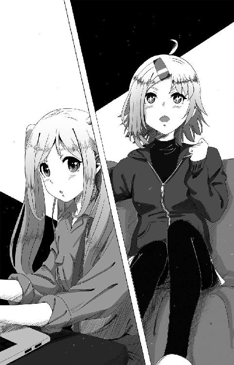
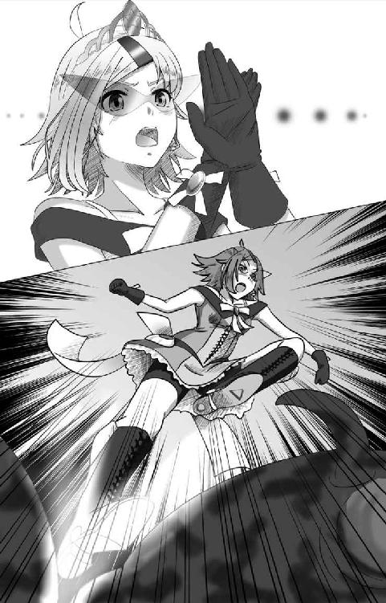
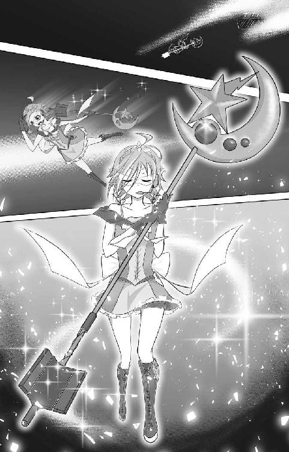
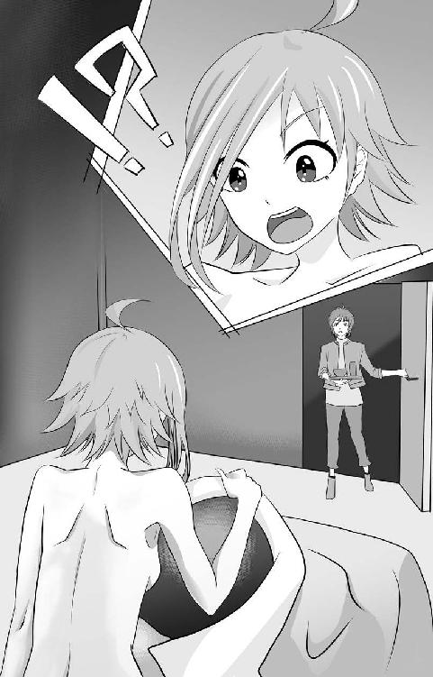
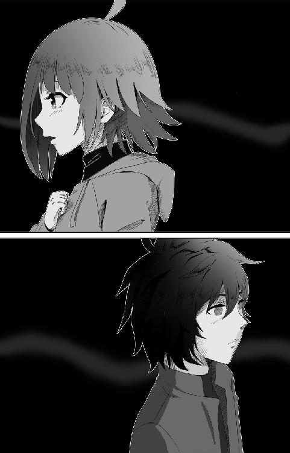
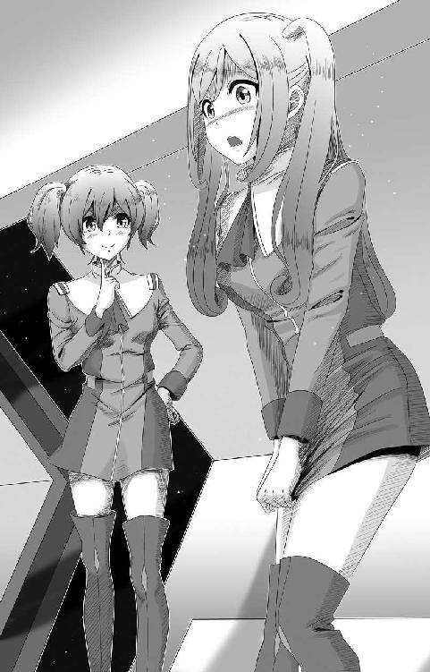
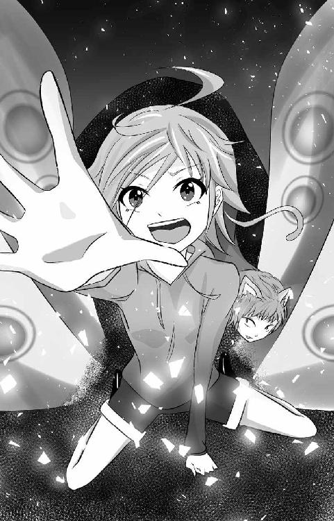
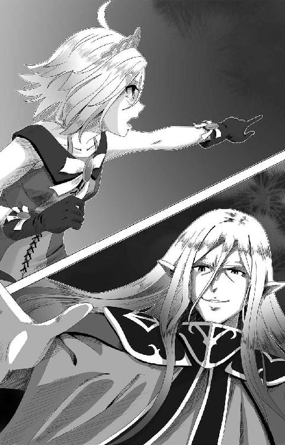
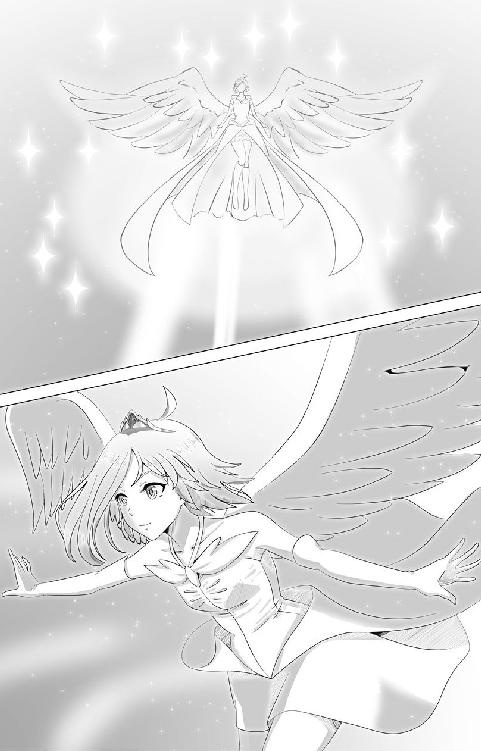
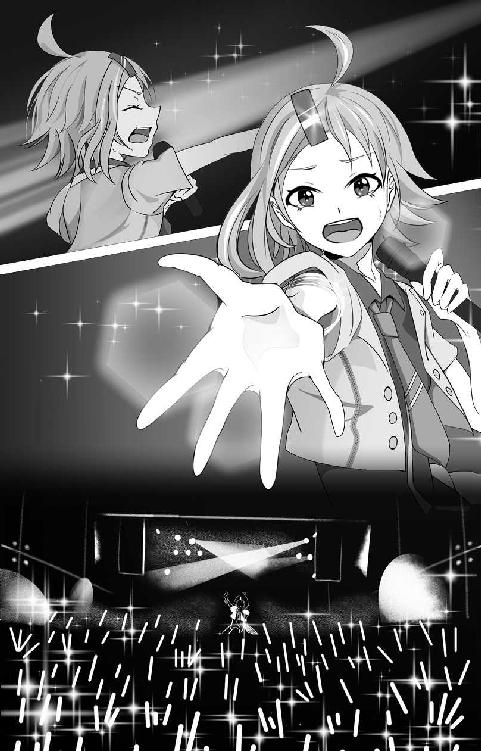

| 次元を越える加茂川マコトはアイドルと魔法少女兼業していた......かもしれない!_ sheet.1 (アヌビス・エンタテイメント) | |
| 春日康徳 & ことまきプロジェクト | |
| ANUBIS ENTERTAINMENT (2017) | |
WITKDP2017
序章 次元越えアイドルは実在する!?
「二次元から三次元へ――次元を越えてやってきましたっ!!」
なーんて言葉を真に受ける人間はいない......よね、たぶん。
そりゃ場所がアキバともなれば話は違ってくるよ。「そういう設定なのね」と受け入れてくれる人もいるだろうさ。
けど、本気で信じられるかい？
〝次元を越えられる〟ってことを？
そもそも二次元っていうのは平面世界の絵空事。
嘘の世界だ。
キャラクターがリアルに感じられるのは、マンガ家やアニメーター、声優、あるいは作家が情熱を傾けて彼らの感情を表現してくれるから。
アニメにしたって、一枚一枚は静止画だ。毎秒十二フレームの静止画を『動いている』と認識してしまう、脳の錯覚に過ぎない。
そう、錯覚。
二次元のキャラクターは生きていない――――
と、ここまでが大前提。
あくまで一般的な、ね。
ここからは事実。
絵空事の世界に命を賭ける人がいる。
絵師はキャラクターに魂を宿すために徹夜し（栄養ドリンク漬けだ）、作家は髪をかきむしって言葉をつむぎ（ストレスでハゲになる）、声優は熾烈な競争を生き抜いて熱演する。
彼らは、命を削ってるんだ。
二次元にキャラクターたちを送り出すために。
ここでさらに事実。
高温物体と低温物体を接触させると、熱量の移動が起こる。温かいものから冷たいものへと。
これすなわち『熱量保存の法則』なり。
じゃあ、キャラクターを生み出す人間たちの情熱が、絵空事の二次元世界に〝本物の魂〟を与えないってほうがおかしくないか？？？？
え？ 飛躍しすぎだって？
まあ、それは認めるよ、うん。
けど、信じる信じないはともかく、二次元の世界のキャラクターは生きている。
生きているんだ。
......あの、人をかわいそうな目で見るのやめてもらえます？
割かしガチで言ってます！
二次元の世界のキャラクターは生きている。
でなかったら、次元を越えてやってくる彼女をどう説明できるんですか！
............こほん。いかんいかん、順を追って説明しよう。
二次元から三次元へ。
彼女――加茂川マコトは次元を越えてやってくる、唯一無二のキャラクターアイドルなのだ。はっはっは！ どうだ、ここまでついてこられるかなあ......？
「んなわけねえ～」
って引いてるのはわかる。
よーくわかるよ、うんうん。
だが待て。
待って欲しい。
ネットで動画検索すれば、彼女のライブパフォーマンスの一部を見ることもできるだろう。
もちろんライブ会場に足を運べば、生の加茂川マコトに出会えるはずだ。
ボーイッシュな金色のショートヘアに赤いバレッタが印象的な彼女は、年間二〇〇本以上のライブ出演を身長一五〇センチの小柄な体でこなす。
いったいあの小さな体のどこにそんなパワーが眠っているのか。
たしかに歌も踊りもまだまだ発展途上ではある......けど！ 彼女は持てるパワーの限りを尽くしてステージに立っている。
彼女なりに精一杯に！
そんな本気のパフォーマンスが、観客の胸を打ち、ファンの数を少しずつ、着実にのばしてきたんだ。
このラノベだって、だから実現したわけだし、うん。って、メタ的な発言はマイちゃんに怒られちゃうから控えよう。
こほん。
え、なに？ やっぱり人間がコスプレしてるだけじゃないかって？
...............。
なかなか手強いね、お客さん。
でも議論はきらいじゃないよ、うん。
加茂川マコトが現実で我々に見せる姿はアイドルとしての側面だけだよね。だからときどき、彼女が本来は二次元のキャラクターであることを忘れがちになる。
二次元で彼女はなにをしているのか......？
いままで語られることのなかった裏事情ってやつを、今回は特別に明かそうじゃないか！
絵空事なのか、事実なのか。
それを決めるのは、君たちがこの物語を信じる熱量にかかっている......はず。
私の筆も血肉を通わす一助になれば幸いである。
って、お前は誰かって!?
ふっふっふ、名乗るほどの者でもないんだけどなー。 まあ、アイドル事務所『ことまきプロジェクト』の広報担当者の一人としておこう。
そんなことより――――
さあ、はじめよう。
加茂川マコトの二次元世界の物語を。
第一章 本職は魔法少女ですっ！
１
「やっぱ新曲はテンポよくて、元気の出る明るい感じがええな！ 振り付けもこう、みんなで決めポーズとかめっちゃええやん、『敬礼！』みたいなっ!?」
握り拳に力を込めて、加茂川マコトが力強く瞳を輝かせた。
文字通り、瞳孔にはキラキラ星が浮かんでいる。
（いやいや、目に星ってｗ マンガじゃないんだから）
って思ったそこの君ッ！（ビシッ）
マンガなんです、この世界はっ。
なったってこれは二次元のお話。
マコトが所属するアイドル事務所『ことまきプロジェクト』は本来、三次元――つまり現実世界にいる〝運営さん〟がマネジメントしている。
......んだけど、二次元キャラクターじゃない人間──運営さんが二次元にいるマコトをマネジメントすることはできない。
だから運営さんは、二次元におけるマコトのマネジメントを二人の女の子に任せているのだった。
そんな『ことまきプロジェクト』二次元支社は、かなり年季の入った雑居ビルの三階にあった。１ＬＤＫの室内にレッスン用の機材やら段ボールやらが所狭しと並ぶ事務所の一角──マコトは次のライブの打ち合わせをしていた。
「なあ、リノはどう思う？」
「ほへぇ？ はあ......」
マコトに話を振られた神崎リノは、アゴに指を当てて考えはじめた。

細くすらっとした太ももを露出させる短パン姿のリノは、『ことまき通信』――『ことまきプロジェクト』の広報ブログだ――を夜遅くまで更新していたせいか眠たげだ。ツインテールにしている亜麻色のロングの髪を揺らし、首をかしげている。
細身の体を冒険家のようなサファリシャツに包む彼女は、そこだけ自己主張するかのようにふくらむ胸をサスペンダーで押さえ込んでいた......ってか、余計強調されていた。
「新曲って気安く言いますけど、いろいろ大変なんですよぉ～？」
「んなこたあ、わかってるって！」
机を叩いてマコトが意見する。
「ウチら二次元世界の住人は、三次元で使えるものをそう易々と生み出すことはようできひん。そやったら、新曲や衣装を三次元のクリエーターに発注せなアカンちゅー話しやろ！ 『ワンマンＬＩＶＥで新曲発表！』ってほうが、盛りやがるやん！」
そんなマコトの提案をよそに、リノは指折り数えてスケジュールを計算する。
『ワンマンＬＩＶＥ』というのは主催ライブという意味だ。
『対バン』と呼ばれる複数の出演者を立てるライブイベントと違い、ワンマンは文字通り、マコト一人でお客さんを動員しなきゃならない。
はっきり言って、厳しい......ッ！！
だからいま『ことまきプロジェクト』は、このワンマンＬＩＶＥのプロモーション活動でてんやわんやの状態だった！
「......って、もう一週間切ってるじゃないですかぁ。そんな短期間でやってくれるかどうか......」
「努力と根性があれば大丈夫や！ はっはっは！」
ピンチを楽しんでいるかのようなマコトにリノが目をまわして頭を抱える。
「そんな無茶なぁ......。運営さんにも相談しないとだし......」
「発注なんて、インターネットでちょちょいのちょいやろ！ 三次元と二次元をつなぐ唯一の連絡手段はネットなんやからな！」
通常、二次元世界のキャラクターが三次元へメッセージを発信することはできない。
しかし、三次元からマコトが持ち帰ったノートパソコンだけはインターネットを介して次元を越えることができるようだった。
マコトはこのノートパソコンを通じて、三次元にいる運営さんやクリエーターさんとやり取りをしている。
「ううう......早くおうち帰ってアイドルＤＶＤ見たいよぉ......」
業務に追われるリノが二次元逃避をはじめる。
「はいはい、リノちゃんがんばろ！ 今度ＤＶＤいっぱい買ってくるから。な？ なあ？」
キラリーン！ とリノが鋭い眼光をマコトに向けた。
「マコトちゃん......約束ですよぉ？」
言う間もなく、リノはノートパソコンに向き直り、モーレツな勢いでキーボードを叩く。
「リノは〝あっち〟のアイドル好きなんやなぁ」
「だってぇ......小さな少女たちが苦悩しながらがんばってるのかと思うと......元気をたくさんもらって......ああ、思い出しただけでも涙が......ぐすん。うぅぅ......マコトちゃん、ムック本もお願いね」
ハンカチで涙と鼻水を拭い、どさくさまぎれに頼みごとを増やす。
「あんまムダ遣いはできひんで？」
「ムダ遣いじゃないもん！」
頬をふくらませ、リノが訴えた。
「ないもんって......」
「市場......調査だもんっ......！！」
「ホンマかぁ......？」
「まっことであります、少佐！」
どうやら要求を飲むまで収まらないらしい。
ため息まじりにマコトは「わかった、わかった！ 買ってくればえんやろ」とやけくそ気味に言った。
「ブロマイドもお願いします！」
「ちょっと！ さっきから買うもん増えてへん!?」
てへぺろっと舌を出し、リノはふたたびタイピングに戻る。
「でも......本当にマコトちゃん、うらやましいですよ」
「え？ なにが？」
「私も行ってみたいです、〝あっち〟の世界......」
リノがしみじみと言う。
そんな彼女にマコトは返す言葉が見つからなかった。
次元を越え能力を持つのは、二次元世界で加茂川マコトただ一人だけである。
なにか特別な努力をしたわけでもなければ、王の血筋を引くからでも、選ばれし者だからでもない。
もちろん──転生したからでもない！
ファンの想いが彼女を三次元へ引き寄せたわけでもたぶん、ないだろう。熱烈なファンをもつ二次元キャラクターはほかにもたくさんいるからだ。
なぜマコトだけが次元を越えられるのか？
......それは、わからない。
だからこそ、マコトはほかの二次元キャラクターにはできないことをするべきだと思っている。
そんなマコトにしかできないことのひとつが――
アイドル活動であった！
次元を越えてファンに想いを届ける。
そのためには歌やダンスのレッスンに集中し、ライブパフォーマンスのクオリティを底上げして、お客さんを楽しませたいと思っているのだが......。
突然、緊急通信が受電の警報を轟かせた。同時に事務所の鉄扉が勢いよく開く。
琴巻マイが飛び込んできたのだった。
「『ＩＤＥＡ』からの出動要請よ！」
トレードマークの赤い髪とワンピース。気の強そうなツンとした眉。線の細い顔立ちが頭の鋭さも表しているようだった。
三次元と二次元を行き来する加茂川マコトのスケジュール管理。それがマイの担当業務だ。
「《侵食獣》が出たんか!?」
マコトの問いに答えるように、マイは事務所の照明を落とし、タブレット端末を操作した。
途端、事務所の宙空にスクリーン画面が次々立ち上がる。薄暗い室内は一転、秘密作戦本部のようになった。
画面には巨大怪獣のデータが映し出されている。円筒型の細長い胴体。背中に浮かぶ毒々しい擬態模様の斑点。腹に密集する無数の小足で、くねくねと地上を這う姿は巨大なイモムシといったところだ。
説明しよう――――
次元を侵食する獣。
それが《侵食獣》だ。
この怪獣は、二次元と三次元の界と界とを蝕み、三次元へ侵攻しようとする。
二次元世界は、人間が生み出したものだ。人類（三次元）が滅べば、二次元も消えてなくなってしまう。
だから、二次元世界は《侵食獣》を倒し、二次元と三次元を防衛するための組織をつくった。
次元侵食迎撃同盟、通称『ＩＤＥＡ』である。
『ＩＤＥＡ』隊員として《侵食獣》の脅威から守る。
そう、加茂川マコトは世界を救わねばならなかったのだ！
「会敵した《侵食獣》はカテゴリーⅡ。セクター８０１の学園都市を襲撃！ Ｄ７型装備にて輸送機がこっちに向かってる！ 合流ポイントはＧ-９９７！」
報告するマイに呼応するように、今度はスクリーンにＤ７装備――魔法の杖が表示された。
月と星の形をあしらった先端部分。長くのびた杖。カラーリングがピンクと黄色だったら、まるでおもちゃのようだったろう。
しかし、Ｄ７型装備はおもちゃではない。
光子を励起してレーザーを発するビーム兵器である。
排気と機械油で汚れ、配線コードが這いまわる長大なそれは、とても乙女が――魔法少女が持つものとは思えない〝異物〟であり、少女のか細い腕が持つにはいささか巨大すぎる代物だった。
しかし、ここは二次元！
物理法則を無視した巨大兵器をマコトは魔法の杖のように扱う。
「じゃあ、急ごか！」
《侵食獣》に関するデータを頭に叩き込んだマコトが出ていこうとする。
「ちょっと待ってくださいよぉ」
眉をハの字にしたリノが困惑した声で呼び止めた。
「このあとすぐ、運営さんとの新曲ミーティング、予定を入れちゃいましたよぉ......」
「そうやった！」
「夕方からは対バンライブの予定も入ってるし」
「それもあったか......」
「なにより、三次元にはマコトちゃんのライブを楽しみにしてるお客さんが待ってくれてるんですよ!?」
いたた......とマコトはその場で頭を抱え込む。
「なに子供みたいなこと言ってんのよ、もう！」
両手を腰に当て、マイが強い口調で言う。
「そんなことより、《侵食獣》をどうにかするほうが先決でしょ！ 二次元がどうなってもいいって言うの、リノは!?」
「そ、そうじゃないけど......打ち合わせも大事だもん！」
一歩も引かず、リノが訴えた。
「《侵食獣》は『ＩＤＥＡ』の人なら誰でも倒せるじゃん！ けど、次元を越えられるのはマコトちゃんだけなんだよ!? だったら、三次元での活動を優先したっていいじゃん......」
「だ・か・ら！」
一言一言区切って、マイは人差し指をリノに突きつける。
「〝次元越え〟なんていうすさまじい特殊能力の使用を、超法規的に個人の動機で使わせてもらうために、『ＩＤＥＡ』隊員として《侵食獣》を倒さなきゃいけないんでしょうが！」
「そう......だけど......」
ぎゅっと唇を結んでリノは顔をうつむけた。
「マイちゃんのわからず屋ぁぁぁぁぁっ！」
〝次元越え〟能力は本来、封印されるべきものだ。
なぜならば、界と界とを蝕む《侵食獣》を殲滅せんと活動する『ＩＤＥＡ』からすれば、マコトも他次元を侵食する危険人物だからである。
〝次元越え〟能力がアイドル活動に限定されているからこそ、マコトは自由に行き来することを許されていた。
「わかった、わかったから！」
マコトが間に入った。泣きそうなリノの肩を叩く。
「マコトちゃん......？」
「ウチ、《侵食獣》を倒してくる！」
「当然」とマイが鼻を鳴らした。
「けどさ！」
空気を変えるようにマコトは言った。
「一瞬でぶちのめして帰ってくる。だから運営さんに連絡よろやで！」
ぱっと表情を明るくしたリノは「はい！」と元気に応じた。
マコトは事務所のドアとは正反対――道路に面した窓に向かって駆けていく。
「ちょっと、マコト!?」
マイは窓を開け放つマコトを不審がった。
にこっと悪戯っぽい笑みを浮かべたのも一瞬、マコトは道路に飛び降りた。
「............っ!?」
リノとマイが窓に駆け寄る。
二人の心配をよそに、仁王立ちのマコトがせり上がってきた。ホバリングする輸送機――『ＩＤＥＡ』の迎えだ――の上に着地していたのだ。
「発進！」
と天を指さすマコトの合図でスラスターエンジンを一閃させると、輸送機はあっという間に事務所前を飛び去っていった。
＊
二次元――。
と言っても、魔法使いやエルフ、ドワーフといったファンタジー世界と、巨大なスーパーロボットや宇宙兵器が戦争を繰り広げるＳＦ世界、さらにはたった一人で惑星を粉砕するほどのスーパーヒーローの活躍するマンガ世界や、サッカーやバスケなどのスポーツに燃える男の子たちの学園世界などなど......。
さまざまな世界観が共存する二次元世界は、広大な宇宙空間を思い浮かべて欲しい。
この宇宙空間にセクターと呼ばれるコンテンツの島が無数に浮かぶ。
これが二次元世界の概観だ。
作品ごとに浮かぶコンテンツの島――セクターは、それぞれが独立したもので、世界観の共有はできない。
『指輪物語』のセクターから『スターウォーズ』のセクターへ移動すると、魔法は使えなくなるのだ（フォースは使えるのかもしれないけど......）。
だから『ＩＤＥＡ』隊員は《侵食獣》が出現する場所によって装備を換装しなければならない。
マコトの主兵装であるＤ７型装備は汎用型のレーザー兵器だ。魔法などの世界観に左右されるエネルギーに頼らないので、様々なセクターで使用が可能だ。
今回、《侵食獣》が出現したセクター８０１は、いわゆる〝日常系〟と呼ばれる世界観のコンテンツ島だ。
マコトを乗せた輸送機がセクター８０１上空を旋回しながら地上へ近づいていく。避難警報が鳴り響く学園都市。そこに体長二十メートルを越える《侵食獣》が蠢いていた。
『グボォボォオオオオオオオオオオオオオッ!!』
《侵食獣》の咆哮がびりびりと周囲の空気を震わせる。
「目標を肉眼で確認！ これより殲滅するでーっ」
〈幸運を祈る〉
輸送機の支援ＡＩの通信を耳にしながら、マコトは勢いよくスライディング・ドアを開いた。
吹きすさぶ風のなか、ためらうことなく地上へダイブする。
「フォトニック・クリスタル、プリズムアーップ！」
降下しながら認証コードを唱えた直後、Ｄ７型装備の長大な杖の先端に収まる光子結晶が、まばゆいばかりの光を放つ。白い靄に包まれ、七色のスペクトル光を放った次の瞬間――マコトはピンクを基調としたバトルドレスに身を包んでいた。
空中でふわりとひと回転。白いひらひらがスカートを縁取り、額に起こった光がティアラ状のヘッドセットとバイザーを形作る。
まるで魔法少女のような出で立ちに変身したマコトは、バイザーに表示される時間を目の端で確かめた。
〈マコトちゃん、打ち合わせまであと一〇分だよ！〉
〈だからリノ！ 邪魔しちゃだめじゃん！〉
リノとマイの通信が聞こえてきた。
「わかっとるわ！ 一〇分でカタをつける！」
不敵に笑ったマコトが応答する。
〈接触まであと二〇〉
支援ＡＩからのカウントダウンがはじまった。降下しながら、地上の《侵食獣》へ魔法の杖の先端を振り向ける。
深呼吸―――。
一撃必殺すれば戦闘終了だ。落下速度と風圧に耐えつつ、慎重に狙いを定めた。バイザーに表示されるスコープサイトの目盛に全神経を集中させる。
「一撃で仕留めな......早く帰って打ち合わせして、ライブに出なあかんねん......」
〈接触まであと一〇〉
データ画面が警告を示す赤色に染まる。
「まだや......十分に引き寄せて――」
〈接触まであと五、四、三――――〉
「いまや！ ってぇぇぇぇぇぇぇぇぇい！」
大音声の認証コードを合図に、フォトニック・クリスタルからピンク色のエネルギー光がほとばしった。
《侵食獣》は避けきれず、直撃を受ける――――
そのはずだった。
突然、《侵食獣》は背中の模様を空中に投影し、マコトのレーザー攻撃を受け止めた。
キシシシシシィィィィィッィ！
耳をつんざく高周波が響き、マコトのレーザーがくの字を描いて折れ曲がった。
「バリア!?」
〈第二相転移を確認、カテゴリーⅢへ移行！ エネルギー強化タイプです〉
「ちっ、気軽に言ってくれて！」
支援ＡＩの報告に悪態をつきつつ、初撃をミスったマコトが地上に着地する。
すかさず《侵食獣》が攻撃を仕掛けてくる。ロールシャッハテストの染みのような擬態の斑点をオレンジ色に閃かせ、エネルギー弾を叩き込んできたのだ。
「!?」
はっとしてＤ７型装備にまたがったマコトは、すぐさま推力加速して空を駆ける。魔法のほうきの要領だ。
回避した《侵食獣》のエネルギー弾は、マコトの背後にあった学校校舎を一瞬で吹っ飛ばす。爆風が渦巻き、上空を飛ぶマコトも衝撃波に飲まれて地上に落下した。
「うわあああああああああ！」
噴煙のなか、咳き込みながら立ち上がったマコトが周囲を見渡した。緑豊かな学園都市の風景が一変している。
なにもない灰色の世界へ......。
一歩間違えれば死んでいたかもしれない――。
ごくりと唾を飲み下したマコトは、恐怖でおののく体を奮い立たすように、「分析官はなにやってんねん！ Ｄ７型装備じゃ、役に立たへんやんか！」と叫んだ。
『グボォボォオオオオオオオオオオオオオッ！！』
追い打ちをかけるように《侵食獣》がどう猛な咆哮を浴びせる。地獄の底から這い上がってくるような絶望的な響きだった。
《侵食獣》はふたたび背中の染みを揺らめかせる。
第二波が、くる。
意識する間もなく、エネルギー弾が文字通り光の速さで殺到した。
「何度も同じ手が通用すると思うなやああああっ」
フォトニック・クリスタルに光球を灯したマコトは、バットのようにＤ７型装備をスイングして《侵食獣》のエネルギー弾を打ち返そうとした。
高エネルギー同士がぶつかるつばぜり合いが、すさまじい轟音を立てる。
「なんや......思ったより......めっちゃ重いぃぃ......」
二〇メートルを超す《侵食獣》のパワーに、小柄なマコトが敵うわけがない。
たとえそれが物理原則を完全に無視できる二次元の世界であっても、圧倒的な力の差を埋めることはできなかった。
攻撃を受け止めるＤ７型装備がいまにも折れそうに軋んでたわむ。武器を両手で支えるマコトの腕も震えが止まらなかった。
「レーザーはバリアで跳ね返される、敵のパワーは圧倒的。しかもＤ７型はようもたへん......」
ついに魔法の杖の部品が衝撃に耐えきれず煙を立て、ちいさな爆発を起こした。
「くっ!?」
傾いだ体を最後の力を振りしぼって立て直す。
「マイ、リノ、運営さん......ごめん、打ち合わせには間に合いそうにないわ」
ぐっと歯を食いしばり、マコトは絞り出すように言った。
ついにＤ７型装備が爆発して折れ、エネルギー弾がマコトを圧する。
「きゃああああああああああああああああ！」
本来なら身を焼く痛みも感じずに塵と消えるはずのマコトを、何層も特殊素材を編み込んだバトルドレスがかろうじて守る。
しかし、衝撃波を受け吹っ飛ばされたマコトは学校の瓦礫に投げつけられ、壁に蜘蛛の巣状のひび割れをつくってめり込んだ。
ゲホゲホと咳き込み、まだ生きていることをたしかめる。
「めっちゃ......痛い......」
ぼろぼろの状態で、マコトは咆哮する《侵食獣》を見上げる。
「......アホ、負けてたまるかああああああ！」
槍投げのように、マコトは折れたＤ７型装備を《侵食獣》の擬態模様めがけて投擲した。
「ゴラァァァァァァァァァ！」
ちぎれると思うくらい、めいいっぱいに腕を振る。急場しのぎの槍攻撃が《侵食獣》の背中に直撃。目玉のような斑点が、紫色の出血でにじむ。
『ギュルルルルルゥゥゥゥゥゥッ！！』
イモムシ型の長い体でのけ反り、《侵食獣》がもがき苦しんだ。
「バリアは対エネルギー兵器。実弾なら貫通するってわけや！」
直後、《侵食獣》の体組織が真っ赤に変化する。累積ダメージが危険域に入ったゲームのボスキャラさながらだった。
「へっ、まだくたばらんのかいな......」
無数のイボ足で巨大な体を動かすと、《侵食獣》はマコトを探して周囲の建物に体当たりをはじめた。大きく地面が揺さぶられ、激震が走る。踏みつぶされればひとたまりもない。
痛みをこらえ、自分の体にムチ打ってマコトはその場から離れようとした。
《侵食獣》はその巨大な体躯には似合わぬスピードで瓦礫を踏みつぶし、猛烈な勢いで突進してくる。
「アカン......！」
もつれた足でマコトは倒れ、地面に手をついた。振り返れば、ぐわっと上半身を反らした《侵食獣》が、マコトを下敷きにしようと迫りきていた。
ズドォォォォォォォォォォォォォォン！
マコトは何十トンにも及ぶ《侵食獣》の体を、両手を広げて受け止めた。彼女の周囲がクレーターのように沈んだ。
腕が震える。
息もできない。
ぎゅっとつぶった瞼の端に涙が流れる。
「いやや......負けたくない。ライブに......出たい！」
じりじりと《侵食獣》が圧迫してくる。
逃げたい。
三次元へ行ってしまえば、この苦痛から逃れられる。弱気になりそうな自分を振り払うように、「こんなとこで......負けてられへんのや......」とマコトが声を漏らす。
「新曲の打ち合わせも先送りや......どうしてくれんねん......冗談やない......」
言葉は強気だったが、すでに力が入らなかった。
『ギュルルルルルゥゥゥゥゥゥッ！！』
最後の一押しとばかりに《侵食獣》が全体重をかけてマコトを圧する。
「ウチは......三次元に自分の声を届けなあかんのや！ みんなが待っててくれてるんやああああああああ！」
ピンクのコンバットブーツで《侵食獣》の腹に蹴りを入れる。
巨大な肉のかたまりのなかへ、ぐにゃりと足がめり込んでいった
『グゥゥゥゥゥゥゥゥゥゥ............ッ！！』
苦しむ《侵食獣》のうめきと共に、肉のなかに突っ込んだ足が瞬時に押し戻される。
急激な反動が《侵食獣》を襲い、ゴムボールみたいになって巨大な肉のかたまりが宙空にはね飛ばされていった。
《侵食獣》が、ひっくり返って地面に叩きつけられた。地面が大激震し、蠕動する空気が鼓膜を揺らす。
「いまや！ とうっ！」
大地を蹴ったマコトがまっすぐ上に飛ぶ。宙返りして勢いをつけると、今度は右足を伸ばして再降下をはじめる。
「覚悟や、《侵食獣》！ 超彗星キィィィィィィィィィクッ！」
足をばたつかせ、無防備にさらす腹に向かって踵をめりこませる。

ズギュシュッ！ と肉塊と骨を砕く確かな感触を感じながら、マコトは《侵食獣》の背中へ貫通して着地する。
同時に形態維持できなくなった《侵食獣》が内側から起こった爆光に飲まれて飛散した。
派手な爆発を背後に、荒れた息を整えながら、マコトは地面に膝をつく。
振り返り、頬を打つ爆風と炎の熱さを感じながら、「倒した......？」とつぶやいて、その場に立ち尽くした。
〈マコト......ちゃん！ 前奏......はじまっちゃって......ますよ！〉
途切れ途切れの通信で我に返ったマコトは「アカンやん！ そうやった！ どーしよ......」と戦場を見まわした。
《侵食獣》が蝕んだ次元の裂け目はすぐに見つかった。まるでそこだけ焼け焦げたネガフィルムのように破れ、めくれあがっている。
マコトは裂け目に向かって両手をかざし、そっと瞼を閉じた。じんわりと指先に温もりを感じたかと思うと、次元の穴はあっという間に塞がれていく。
〈次元侵食痕の修復を確認。問題、ありません〉
支援ＡＩの合成音声に、マコトはふっと笑顔を取り戻す。
「よっしゃ！ 任務完了や！」
ライブ会場へ急がなければならない。
「いっけぇぇぇーーーーーーーーーーーーーッ！！」
と叫びながら、セクター８０１の島を飛び降りる。加速しながら光のシャワーに包まれたマコトが、二次元宇宙に流れ星のような軌跡を描く。
前髪を止める赤いバレッタが閃光を放つと、光の粒子となって――――。
マコトは消えた。
＊
ズン！ ズン！ ズン！
腹の底まで響き渡る打ち込み音楽とスピーカーの大音量が知覚され、それが曲の前奏だときがついたマコトは、はっと自分を見返した。
二次元でズタボロになっていたバトルドレスは、三次元では白基調のエナメルジャケットに黒のスカート。足下は白のニーハイブーツに変わっている。
ピコピコ電子音楽に合わせて、観客の手拍子も高まっていた。
舞台袖にいる――ようやく次元を越えたことに現実感をもったマコトは、迷うことなくステージへ飛び出した。
マイクを手にしてステージに立つと、いつものファンたちがマコトを出迎えてくれた。
「ちょっと遅れちゃったけど、今日は楽しんでいってください！」
おう、と口々に応える観衆の熱気を受け、マコトは軽くツーステップを踏みながら『初萌』を歌いはじめた。
「♪風にスカートが揺れる
絶対領域侵犯
天使のような小悪魔
見た目以上に惹かれる～」
Ａメロが電子音を刻んでいく。
マコトの歌声と呼応するように、観客のボルテージもどんどん高まっていく。
「♪無邪気さの裏腹で
もて遊ばれているsign
ルージュひと塗りでドラマ
今ここでみせたい～」
ここから一転、マコトは短いリリックを早撃ちがごとく重ねる。
観客からも手拍子に加えて合いの手が混じる。
「♪ドキドキso much cute
KAWAII 急上昇
キラキラ輝き I wish touch your herat
あなたの着信voice
危険な新療法
一度鳴らしたら
becouse an addict～」
そして――『初萌』のサビの部分でより激しいツーステップを踏もうとしたそのときだった。
足に激痛が走った。
「.........!?」
戦闘で負傷した傷が痛む。
だが、ここでステージを止めるわけにはいかない。
その場にマイクを握りしめて、マコトは歌いつづけた。
「♪カノジョみたいに独占したい！
フィギュアみたいに私物化したい！
叶わぬ想いならリスクを犯したい（Oh,No）～」
踊らない加茂川マコト。
黄色いペンライトを振る観客の手が一瞬止まる。
不自然に感じている。
わかっている。
ファンはマコトの元気いっぱいの姿を楽しみにしてくれている。
でも、体が動かない――。
そんなマコトのパフォーマンスでも、観客はすぐに気を取り直してペンライトを振って声援を送ってくれる。
「♪Quuunn Quuun buning heart
初めての夜に
Without God? not a chance
アイシテル
Ah―――――――――!!!」
激しく元気なダンスはできないけど、精一杯の想いを込めて歌おう――
マコトは熱唱した。
２
ライブを終えたマコトは、すぐさま二次元世界に戻っていた。
戦闘報告のためである。
マコトを乗せた輸送機はいま、『ＩＤＥＡ』本部のあるセクター０へ向かっている。
〈たしかにＳＮＳには〝踊らない加茂川マコトは残念だ〟なんてつぶやきもあるね......〉
評価調査の結果をマイが通信で知らせてきた。マコトに申し訳ないっ！という思いしかない。窓外を眺めるマコトは大きくため息を漏らした。
〈でもぉ......大半の人は体調が悪かったんじゃないかって心配してくれてますよぉ？ 気にしなくて大丈夫です！〉
マイと入れ替わるように、リノが励ましてくれる。
「そうやな......」
〈なーんだ、マコトらしくないね、失敗引きずるなんてさ？〉
心ここにあらずのあいまいな返事を返すマコトを揺さぶるように、マイが問うた。
「あのライブはアカンかったよ。考えられる限り、最低やったわ......」
火がついたようにマコトは語りはじめた。言っていて自分が嫌になったが、いまはすべてを吐き出してしまいたかった。
「三次元にウチの声を届ける。それはウチにしかできんことのはずやろ？ だからこそ、戦闘の影響がライブに出てまうようなみっともないことはしたくなかったんよ」
リノもマイも、マコトの声に耳を傾けていた。
「アイドルのプロ意識なんてたかが知れてる。笑われるやろな？ プロをなめとるって......」
涙声になるのを必死に堪えながら、マコトは鼻をすすった。
「未熟で未完成で、なにもかも完璧とはほど遠くて......それでも、ウチは精一杯のパフォーマンスで勝負したい。でなきゃ、お客さんに申し訳がないやろ？ でも――できんかった」
ぎゅっと握った拳に力が入る。つづく言葉を吐き出しかけて、マイの声が唐突にさえぎった。
〈だからって、戦いたくない――なんて考えてないよね？〉
〈ちょっと、マイちゃん、ひどすぎます！〉
〈二次元のことなんてどうでもいい。アンタは自分のやりたいことだけをやりたい。次元を越えられるのは自分だけだから？ ちょっと勝手すぎない？〉
「............」
マイの正論にマコトは口を噤んだ。
〈そんな泣き言聞かされるために、あたしらだって手伝ってるんじゃないわよ！〉
一週間後に開催するワンマンＬＩＶＥへ向け、『ことまきプロジェクト』のみんなが必死にお客さんを呼び込もうとプロモーション活動している。
マコトだけじゃない。広報活動やスケジュール調整をしてくれる、リノやマイがいなければ、アイドル活動は成り立たないのだ。
〈アイドルだけをぬくぬくとつづけていたいなんて泣き言ってる根性なしに協力する義理はないわ！ あたし、抜ける！〉
〈マイちゃん、そんな大袈裟なぁ......。マコトちゃんもなんとか言ってくださいよぉ〉
「ウチは......」
次元越えの能力を自由に使うためには、二次元で義務を果たさねばならない。
《侵食獣》と戦う――。
『ＩＤＥＡ』隊員として成果をあげ、アイドルとしても完璧なステージを作り上げる。
そんなことは不可能だ。
自分はそんなに器用じゃない。
――そうやって諦めていた。
「アカンわ、ホンマ......そんなん性根の腐ったやつの言い訳や」
ふっと笑ってマコトが応えた。
〈努力と根性！ ......ですよね、マコトちゃん！〉
「そうやで！」
リノの声に鼓舞されて、マコトは顔を上げた。
「努力と根性、それに......笑顔や！ あーもうごめんな？ 湿っぽいのはここまでにしとこ」
〈マイちゃん、どうですか......？〉
〈......ま、心の底から反省しているかは今後の態度を見て判断するとして、途中で仕事を投げ出すのはなんか気持ち悪いし、あたしはつづけてあげてもいいわ〉
「二人とも、マコトにありがとな？」
〈マコト......〉
「次元越え能力があるから、ウチはステージに立ってるわけじゃない。耳痛いこと言ってくれて、励ましてくれる人がいるから、ウチはステージに上げさせてもらってるんや」
〈わっ......わかれば......よろしい〉
〈あれぇ？ マイちゃん、顔真っ赤ですよぉ？〉
〈うっ、うるさい！ マコト、通信切るよ！〉
〈ああ！ マコトちゃん！ 帰ったら運営さんとのミーティング、リスケしたから忘れないでね！〉
「ああ......じゃあ、またね？」
マコトは通信を切断した。いくぶん軽くなった心持ちで窓外を見やると、セクター０に屹立する白亜の大神殿が雲間にあらわれた。
セクター０――別命・聖都。
人間が古代より語り継いできた二次元世界――神々の神殿が配されたこのコンテンツ島に『ＩＤＥＡ』本部が置かれることになった理由はただひとつ。
〝崩れない〟からだ。
キャラクターにとっての死は、忘却である。人々から忘れ去られた二次元キャラクターは消滅してしまうのだ。
コンテンツ島もおなじだ。忘れ去られたセクターは『レテの谷』と呼ばれる奈落へ崩れ落ちていく。
ところが、人間の原風景として深く刻み込まれた神話世界なら、人類が存続する限り永遠に生き延びていくというわけだ。
着陸した輸送機を降りたマコトは、噴水広場を通ってエリュシオンの神殿を目指した。
外観こそ古代ギリシアを思わせる荘厳な施設だが、内部は対《侵食獣》のために運び込まれた機器が所狭しに並んでいた。
二次元世界の宇宙地図が大画面にモニターされ、大小さまざまな計器が数値を刻む。サイボーグや学生やマスコットキャラクターなど、さまざまなジャンルから選び抜かれた精鋭局員が働くそこは、『ＩＤＥＡ』の心臓部、司令部だ。
マコトは司令部を横切り、さらに奥へと歩を向ける。大理石の広い廊下を渡っていくと、二〇メートルを超す扉に突き当たった。
「失礼します！」
手のひらを顔の横で立てる。隊員独自の挙手敬礼の姿勢をとると、重たそうな扉がゆっくりと奥へ押し開いていく。
『ＩＤＥＡ』の最高意志決定機関である評議会。その評議員がマコトを待ち受けていた。
まず目につくのは圧倒的大きさの機動兵器である。十八メートル余りのそのロボットはＳＦアニメの金字塔を打ち立て、すでに三十年余に渡ってつづく大ヒットコンテンツのキャラクターロボット『機動兵器ガルムベルク』だった。
「先般の働き、ご苦労であった」
重く低い声でガルムベルクがマコトをねぎらう。
「ほんとーに、すばらちぃ働きでしゅたね♪」
舌っ足らずの相づちを打ったのは、ガルムベルクのとなりに座る小学生くらいの女の子だ。
『魔法少女えーみりゅん』。日曜朝八時半の人気子供番組の魔法少女である。
「でも、悪かったなあ、分析官のミスでだいぶ負傷したって聞いたぞ？」
マコトを心配したのは鎧に身を包んだ男だった。『SWORD CLASH』。週刊少年マンガ誌で人気を博す主人公・ミランドゥだ。聖騎士という言葉がぴったりの白銀の鎧を身にまとった彼は、大物ぶらない気さくな人物だった。
「聞くところによると、ライブに支障が出ちゃったって聞きましたよ？」
両手を顎の近くに持ってきて、ゆーみりゅんは泣きそうな顔で訊ねてくる。
「だいじょーぶでしゅたか......？」
「ああ......まあ、大丈夫です！ はははは！」
後頭部をさすりながら、マコトは笑顔を返す。
「戦闘記録を見させてもらったが？」
『ＩＤＥＡ』最高評議会の場であることを忘れるな、と注意するようにガルムベルクが機械的な冷たい声を発する。
「君はお友達と通信しながら戦闘していたようだな？」
「それは......」
次のライブのプランニング。運営さんとの打ち合わせ。ライブ出演......。
思い返してみても、マコトの頭のなかは《侵食獣》との戦いどころではなかった。
「果たして負傷の原因は分析官にあるのかな？」
マコトの胸の裡を見透かすように、ガルムベルクが追い詰める。
「『ＩＤＥＡ』隊員であればいつでも不測の事態に対処するべきだ。ところが、今回の戦闘で君は――」
「すみません！」
なにも申し開きできず、マコトは頭を下げた。
「ほらあ、ガルちゃん、ちょっとこわいでしゅよ？」
萎縮するマコトを気づかうように、ゆーみりゅんが足をばたつかせながら言った。
「マコちゃんはちゃーんと《侵食獣》を退治してくれたんでしゅから」
「お言葉を返すようだが――」
「ったく、細けーことはいいじゃねえか。なっ？」
陰湿なガルムベルクの尋問に区切りをつけるように、ミランドゥが後頭部をぼりぼりかきながら口を挟んだ。「マコトはエネルギー強化型の《侵食獣》に対し、現場判断で物理攻撃を仕掛けた。不測の事態ってやつに対処したってことじゃねえか」
「しかし......」
説教し足りない。不満を声にしたガルムベルクを無視して、「ってか、あのキックはキレイに決まってたなあ！ 俺も今度マネしていいかな？」とミランドゥが身を乗り出す。
「は、はあ......」
「ほらほら、ミラちゃんもあわてないでくだしゃい。マコトちゃんが困ってるじゃないでしゅか」
「ああ、そうか、わりぃ、わりぃ......」
「まずは戦闘報告をしてもらいましょう♪」
お姉さんぶる幼児のように、ゆーみりゅんが仕切った。
「じゃ、いっちょよろしくな！」
「はっ！」
背筋を伸ばし、気を引き締め直したマコトは、先程の戦闘報告へ移っていった。
評議員は隊員の戦闘記録に目を通している。
では、なぜ直接、隊員からの聞き取りを行うのか？
それは《侵食獣》がいまだ謎の存在だからだった。
二次元は、人間が創造したものが存在する世界だ。
逆に言えば、人間の想像していないものは存在しないということになる。
であるならば、本来、次元を破壊する《侵食獣》など生まれるはずがない。
当初は二次元世界の悪の勢力が生み出したものと考えられていた。
だが、たとえどんなに地球を破壊し、人類抹殺をコンテンツのなかで実践する極悪非道な悪役であっても、人間から忘れられたキャラクターは存在できない。
よって《侵食獣》は悪の勢力の仕業ではなかった。
では、人間が生み出したものなのか？
それが、いまだにわかっていないのだ。
少しでも《侵食獣》の究明につながればと、隊員はこうして戦闘報告をおこなうのだった。
「カテゴリーⅡからⅢへの第二相転移は今回がはじめてだった。支援ＡＩはなんと言っている？」
ガルムベルクが問うた。
「変異種としてあらたなカテゴリー分けが必要になると......」
「かーっ！」
たまりかねてミランドゥが大きなため息をつく。
「カテゴリー、カテゴリーって......むやみやたらに種類ばっか増やしたって、《侵食獣》は倒せねっぞ!?」
「だが、分析は必要だ」
「分析、ねえ......」
「まあ、新しい種のデータがとれたということで、今回はよしとしょましょう！」
にこにこ笑うゆーみりゅんが、ガルムベルクとミランドゥの両者を取り持つように言った。
「そうそう、マコちゃん。Ｄ７型装備の修繕をしたいそうですから、このあと鑑識部に寄ってってあげてくだしゃいね？」
「はっ！」
ふたたび挙手敬礼し、マコトは評議会を後にした。
鑑識部は本部施設の地下にある。
神殿には不釣り合いな巨大エレベーターで地下に降りると、保管棚や銃器ラックがびっしり並ぶ武器庫にたどり着いた。
「まったく、しかたがありませんね。Ｄ７型を投げ槍として使うとは......」
戦闘で壊れた魔法の杖を前に、監察官のラミアが苦笑を漏らした。
ラミアはファンタジー世界の種族エルフである。
整った容姿にロングの銀髪。長い耳。透き通るような白い肌。エメラルドの瞳はまるでガラス細工のようだった。
「しかたないやろ!?《侵食獣》倒すためやったんやから」
頬をふくらませ、マコトはそっぽを向いた。
「これでもあなたを評価しているんですよ？ さすがトップランカーの『ＩＤＥＡ』隊員です。ただ――最後で肉弾戦に持ち込んだのは少々、不格好ではありましたが」
「やっぱほめてないやん......」
「いずれにせよ、われわれ鑑識部のサポートが足りず、あなたにはツラい戦いをさせてしまいましたね。申し訳なく思っていますよ」
礼儀正しくラミアが頭を下げてきた。
調子を狂わされたように、マコトは「えっと......」と戸惑いながらも、「......ま、ウチはちゃーんと装備をメンテしてもらえればそれでええから。ラミアさん」と手を振った。
「そうですね」
ラミアが細いアゴに手を当てて応える。
「今後は変異種への対策も必要になってくるでしょう。Ｄ７型改には物理攻撃も可能なギミックを組み込んでおきました」
「あいかわらず手が早いなあ」
「研究熱心、と言って欲しいですね？」
くるっと背中を向けたラミアが、武器庫の奥へと歩いていく。ついてくるよう促しているようだ。
マコトはあとにつづいた。行き着いた保管庫には、あたらしいＤ７型装備改がディスプレイされている。
「どうぞ、手にとって見てください」
戴冠式がごとく、ラミアは恭しくＤ７型改を手渡す。
「ほお......」
重さは変わらない。真新しい白金の杖は見た目も変化したようには見えなかった。
「フォトニック・クリスタルをパージすると、物理攻撃可能な槍に換装できます」
星と月を模した魔法の杖の先端部分を取り外すと、キーンと鋭い音を発するような刃があらわれる。
「ドラゴンの牙を研いだものです。硬度でいえば、二次元において、斬り裂けないものはないでしょう」
「ホンマか？」
「むしろ、クリスタル単体で攻撃できるようになったことのほうがすごい〝発見〟なのですがね？」
二次元のキャラクターはなにも生み出せない。その前提は鑑識部もおなじである。
だから、二次元世界に無限に存在する科学技術を蒐集し、それを武器開発に応用する。
ラミアが強調するように、技術の発明と言うより、発見なのである。
そのとき、通信着信音が鳴り響き、ラミアがヘッドセットで応えた。
「はい、わかりました、伝えます」
「......？」
短い通信を切って、ラミアは「セクター７９へ来て欲しいとのことです」とマコトに伝えた。
「セクター７９って、ガルムベルク様の島やったけ？」
ラミアはゆっくりうなずいた。
「なんでも、極秘任務を依頼したいそうですよ？」
評議会で問い詰められた機動兵器の冷たい印章を脳裡に呼び起こしつつ、いったいなんの用があるのかとマコトは考えを巡らせた。
「ま、考えてもしゃーないな。じゃ、これはもらってくで！」
「ああ、マコトさん」と呼び止めたラミアが、マコトの頭頂部からぴんと跳ねる短い毛先――アホ毛に手をかざし、呪文を詠唱した。
「ちょっ、なにしとるん!?」
「隠し技ですよ」
アホ毛の毛先がかっと熱くなる。
「硬化魔法の一種です」
「硬化やて......？」
「ちぎって投げつければ、不意打ち攻撃として有効でしょう？」
「アホ毛カッターなんか使わへんわ！」
「ははは、マコトさんはおもしろいですね」
「なんもおもんないわ！ ちょっと！ 戻して！」
「ほらほら、ガルムベルク様のところへ行かれるのでしょう？」
「うぅぅ......帰ったら戻してや！」
「神のご加護を」
最後に神官らしく宙空に文字を切ったラミアは、Ｄ７型装備改を握りしめたマコトの背中を見送った。
＊
宇宙戦争を題材にする『機動兵器ガルムベルク』のコンテンツ島は、島というより惑星系のセクターだ。
巨大なスペースコロニーが浮かぶこのセクター７９の圧倒的な大きさに、マコトは思わず声を漏らした。
誘導レーザーの指示に従って輸送機が発着艦格納庫に着陸すると、ガルムベルク自らマコトを出迎えた。
「加茂川マコト、ただいま到着しました」
「うむ、急に呼び出してすまなかったな？ さっそく任務の説明をおこなう。同道願おうか」
「はっ」
ガルムベルクに案内されたのは、おなじ格納庫にある宇宙戦艦のなかだ。艦内には『機動兵器ガルムベルク』に登場する少年少女のキャラクターたちが乗船している。
マコトは艦橋――宇宙戦艦の戦闘指揮所――へ案内された。もちろん、体格差のある機動兵器は入って来られない。ガルムベルクとは通信で話すことになる。
艦内クルーたちは発進準備を急いでいるようだった。どこか不自然な印象を抱いたマコトが「あの......これからどこかへ行くんですか？」と問う。
〈これより本艦は『レテの谷』のへ向かう〉ガルムベルクの通信を聞き、「『レテの谷』......？」と繰り返したマコトが顔をしかめる。
〈そうだ。人に忘れ去られたキャラクターが魂を失い、消滅する前のひとときを過ごす場所だ。崩れたコンテンツ島の墓場でもあるわけだが......〉
「あの......極秘任務というのはまさか......？」
遠慮がちにマコトが確認する。
本当に目的地は『レテの谷』なのか。
だとしたら、なぜ――？
エリュシオンではなく、わざわざ自分のセクターに呼び出し、しかもマコトの輸送機ではなく、ガルムベルクの宇宙戦艦でレテの谷を目指す。
おかしなことだらけだ。
〈なにか不服があるかね、マコトくん〉
有無を言わせぬガルムベルクの声に我に返ったマコトは「いえ！ なんでもありません！」と応えるしかなかった。
宇宙戦艦は発進準備を整えると、セクター７９を飛び立った。
３
人間に忘れられたキャラクターは二次元から消える。
『レテの谷』は、そんなキャラクターにとっての死を受け入れるために過ごす場所だ。
「できれば近寄りたくはない場所だな？」
宇宙戦艦のカタパルトデッキの奥まった場所――玉座のようなケージに収まるガルムベルクが言った。
「ええ......」
Ｄ７型改を抱えるようにして出撃を待つマコトが、気のない返事を返す。
「谷に落ちれば、キャラクターは本来の力を失うそうだ。あそこは特殊な結界空間になっていているからな。這いあがることもできず、キャラクターは谷の底、奈落で消滅のときをひたすら待つことになる。まるで死刑執行を待つ罪人のように、『レテの谷』という監獄に閉じ込められるわけだ」
「もし作戦中に失敗して谷に落ちたら――」
「人から忘れられる。そして、二度と戻ってくることはできない」
「............」
行きたくない。
素直な気持ちが心を曇らせる。
新曲の打ち合わせはもちろん、ワンマンＬＩＶＥの準備もしなくてはならない。
こんなところで朽ちていくのはごめんだ――――
「実に愚かしいことだとは思わないか？」
「えっ」
不意に起こったガルムベルクの声が、マコトの思考を分断する。
「なぜわれわれは人間に忘れられることに怯えねばならぬのか......そう思ったことはないか？」
なにを聞かれているのか理解するのに時間がかかった。
ぽかんとしたマコトにガルムベルクが問いを重ねる。
「別にキャラクターたちは罪を犯したわけではない。にも関わらず、レテの谷に幽閉されることを余儀なくされる。人間に忘れ去られたというだけで......」
「ガルムベルクさまは、すでに三十年以上も生き延びていらっしゃいます」
「そのとおりだ――世界観を切り売りすることでね？」
ガルムベルクは皮肉めかして言った。
「それはどういう意味でしょうか......？」
「かつて子供たちは私のプラモデルに夢中だった。だがすぐにコンピューターゲームが登場した。プラモデルは売れなくなった」
八十年代に子供たちの人気をさらった『機動兵器ガルムベルク』も、九十年代に入って家庭用ゲーム機器が爆発的に広まったことで、ＲＰＧや格闘ゲームがプラモデル遊びに取って代った。
当時、『機動兵器ガルムベルク』は十周年の危機を迎えていた。
「でも、その危機を乗り越えたんやないんですか」
「ああ、子供向けガルムベルクともいうべき、デフォルメキャラクターの登場によってね」
たぶんに自嘲の色を含み、ガルムベルクの機械音声がつづける。
「知っていたかね？『機動兵器ガルムベルク』がなぜヒットしたかを？」
ガルムベルク以前――六十年代にはじまった巨大ロボットアニメや特撮作品は大きな矛盾を抱えていた。
そもそも超人やロボットが存在しなければ、悪の軍団は地球に攻めてこない。
子供向けだから、マンガ・アニメだから荒唐無稽が許される。
そんな言い訳で無視されつづけてきた〝お約束〟を破って、業界に風穴を開けたのが『機動兵器ガルムベルク』の徹底したＳＦ考証や群像劇のなかの人間ドラマだった。
すなわち――
「......リアルだったから」
マコトもガルムベルク作品の〝義務教育〟はそれなりに受けている。二足歩行ロボットであることの必然性、それも接近戦でなければならない理由。それを設定によって解決し、しかも設定をドラマとして見せる――まさにガルムベルクは画期的だった。
「だが、今や『ガルムベルク』はリアルさを捨ててしまった」
残念そうにガルムベルクは首を振る。
「アニメ雑誌の表紙を飾り、人気声優をキャスティングするためのアニメキャラの乱立。クリスマスには強化アイテムが登場し、子供たちにおもちゃを売る。『ガルムベルク』は人間たちの商品化計画に蹂躙されてきた。それが三十年以上の歴史の正体だ」
淡々と語るガルムベルクの声にはどこか悲しみが宿っているようにも聞こえた。
「なぜわれわれは人間に隷属せねばならない？」
「それは......」
マコトはあっけにとられて言葉を詰まらせた。
ガルムベルクは人間への不満を口にしている。様子がおかしい――セクター７９へ呼び出されてからずっと抱いていた違和感。おぼろげだったその疑念に、はっきりと焦点が合ったようだった。
そのとき突然、警告音とともにカタパルトデッキの装甲扉が上下にゆっくりと開きはじめた。
宇宙戦艦はレテの谷上空を航行中だ。すさまじい風がデッキのなかに吹き荒れる。手すりに掴まっていなければ体勢を維持できないほどだった。
「なっ、なんで......？」
つづいてサブマシンガンで武装したクルーがいっせいにキャットウォークに押し寄せ、マコトに銃口を向けた。
「これはどいうことですか！」
ガルムベルクを振り返ってマコトが問うた。
鋼鉄同士がこすれる甲高い音を発してケージが開く。ガルムベルクが巨躯を動かし、ドスン！ と一歩を踏み出して立ちあがった。
「できうる限り穏便に進めたい。どうか武装解除に応じてほしい」
Ｄ７型装備改を握りしめる手に力が入る。この場で抵抗しても、変身の間もなくサブマシンガンで蜂の巣にされてしまうだろう。
宇宙戦艦を飛び出しても、レテの谷に落ちれば消滅する。
行くも地獄、退くも地獄というわけだ。
自分をおびき寄せるための罠。
少しでも疑わなかったことを後悔しつつ、マコトは魔法の杖を床に放って両手を挙げた。
「素直でよろしい」
「前置きはええねん！ さっさと用件聞こか？」
挑むようにマコトが言った。
「そうすることにしよう。マコトくん。次元越え能力を我らに貸してもらえないだろうか？」
「え......？」
マコトは顔をしかめた。
「ウチの力を......どうする気やねん」
逃げ道はないか。左右に目を走らせながら、マコトはガルムベルクに語らせることで時間を稼ごうとした。
「君はもうわかっているだろう？ 私がなにを考えているのか」
「知るか、そんなしょーもないもん......」
「三次元侵攻作戦だよ」
ガルムベルクが言った。
「これよりわれらはこの宇宙戦艦で三次元に攻勢を仕掛ける」
「人間を滅ぼしたら、アンタかて消えるんちゃうか！」
二次元キャラクターの大前提をマコトが繰り返す。
だが、ガルムベルクは当たり前だというように、「誰が人間を滅ぼすのだね？」と訊ねてきた。
「だって......」
「人間には生きつづけていただくよ？ われわれの保育カプセルのなかでね？」
「そんなん、間違ってる！」
ビシッと人差し指をガルムベルクに向ける。
「なんでアンタなんかに人間の自由を奪う権利があんねん!?」
「創造主たる人間に忠誠を誓うのは結構だが――」
マコトの正論にガルムベルクはやれやれと首を振った。
「二次元世界は物理法則さえも超越したテクノロジーを保有している。われらは三次元世界の人間たちにとっての理想の世界なのだ。ゲンジツはあまりにも醜い我らの似姿にすぎない」
「その醜い世界とやらを、人間は一生懸命がんばって生きとんねん！」
「それが人間にとってほんとうの幸せなのかな？」
「んやて......？」
「人間たちは保育カプセルの中で理想的な二次元の夢を見つづけて死んでいく。うまくいかない三次元の理不尽さを忘れてね」
巨大な足を下ろし、ガルムベルクがさらに一歩踏み出す。
「二次元を愛する人間に聞いてみるがいい。はたして彼／彼女はどちらを選ぶかな？ 理不尽な三次元か、それとも理想的な二次元の世界か」
「そりゃ、三次元には正直、しんどいこともある。けど、そのしんどさのなかから、ウチら二次元キャラクターってのは生まれてるんとちゃうんか！」
「ふむ、どうやら君とは相容れないようだ。非常に残念に思う」
サブマシンガンを構えるクルーたちがいっせいにマコトに狙いを定め直す。
「死んでくれたまえ」
銃火がいっせいに閃き、マコトに殺到する。
床を蹴ってコンテナに身を隠したマコトは、敵の様子を窺いながら、「アホ！ ウチが死んだら、次元越えできなくなるんやで！」と叫んでＤ７型装備の転がる場所をたしかめた。
二〇〇メートルほどさきに転がっている。
「君が死んでも三次元侵攻は可能だ。放っておけば《侵食獣》が次元の穴を開けてくれる」
「ミランドゥ様や、ゆーみりゅん様が黙っとるわけあらへんやん！」
「たしかにそのとおりだろうな。二次元世界は戦乱の渦に巻き込まれることになるだろう」
「............」
「だが、安心したまえ。われらとてそんなことは望んでいない。だから君を殺し、『次元転移装置』はわれらが頂戴することにしよう」
「『次元転移装置』？」
次元越えはマコトが持つ特殊能力だ。
装置なんかじゃない。
ガルムベルクの言葉の意味を判じかねるのと同時に、なにか嫌な予感が心を揺らした。
「君はまさか、どうして自由にその能力が使えているのか知らなかったのか？」
「それは......」
「二次元の各勢力は、君がどのように次元転移するのかをモニタリングし、それぞれの世界で独自に研究が進められている」
次元越えのデータ収集。
そのためにマコトを泳がせていた――
『ＩＤＥＡ』隊員としての活躍が認められているからでも、三次元で必要とされているからでもない......。
バシッと頬をはられたような衝撃にマコトは胸を押さえた。
冷酷なガルムベルクの機会音声はそんなことはお構いなしにつづける。
「そうして得られた観測結果が君のバレッタだった。その赤いバレッタが『次元転移装置』だったのだよ」
「......！」
「ショックだったかね？ 次元越え能力は君の才能でもなんでもない。ただの装置の力だ」
タラップをかける足音が近づいてくる。クルーたちが回り込み、コンテナに隠れるマコトを狙おうとしているようだ。
時間がない。
早くこの場から逃げ出さなければとマコトは焦った。
でも、どうやって？
そのとき、マコトの頭に無謀とも思える作戦が閃いた。
赤いバレッタ。
次元越えの要。
これを交渉材料にするしかない。
自分にできるのか？
考えている暇はなかった。
できるかどうかはわからないが、やってみるしかない。
マコトは前髪を留めていたバレッタを外すと、バンザイしたままコンテナから姿をあらわした。
緊張したクルーたちがふたたびサブマシンガンを構える。
「ほら！ アンタらの欲しがっとるバレッタや！」と叫んだ次の瞬間、マコトは不敵に笑って見せた。
「なにを考えている......！」
ガルムベルクがマコトの意図を察したかのように、機械音声を震わせる。
「アンタらに利用されるくらいなら、こんなもん、いらんわ！」
ワンマンＬＩＶＥも新曲も。
すべてが無駄になる。
「みんな、ごめんな......！」
つぶやいたマコトは、思いっきりバレッタを踏みつけた。
バキッ！
バレッタが二つに折れて、赤い色が見る見る変色して灰色になる。
『次元転移装置』が壊された。
クルーたちが動揺し、目を瞠っている。
「回収しろ！」
ガルムベルクの指示が飛び、クルーが壊れたバレッタに駆け寄る。
その混乱を利用して、床に転がるＤ７型改を拾いあげると、マコトは魔法の杖にまたがって宙に舞いあがった。
「撃て！ 撃てぇぇぇぇ！」
クルーたちのサブマシンガンがカタパルトデッキの床をひっかき、あちこちで銃撃の火花が咲く。
サーカスの曲芸のように宙返りを繰り返し、マコトは装甲扉を目指した。
「いかん！ 扉を閉めろ！」
ガルムベルクが叫び、警告音と共に装甲扉が閉まりはじめる。
隙間がどんどんと狭まっていく。
「間に合ってくれ......っ！」
腰を沈め、加速する。まるで自分の体が弾丸になったかのように、マコトは魔法の杖に抱きつくようにして祈った。
さらに装甲扉が閉じていく。
人一人がようやく通れる程度の間隙を、マコトはすり抜けて宇宙戦艦の外へ脱した。
眼下には巨大な岩に覆われた『忘却の谷』が広がっている。一刻も早くここから逃げ出さなければならない。
「フォトニック・クリスタル、プリズムアーップ！」
認証コードを唱えたマコトが変身してバトルドレスをまとう。
そのまま飛び立とうとしたところで、宇宙戦艦が砲撃を開始した。
ビーム兵器やミサイルがびゅんびゅんマコトをかすめていく。
「やめるんや！ 二次元のキャラクター同士が戦うなんて......」
「なにを言っている？」
ガルムベルクがカタパルトデッキを突き破って宇宙戦艦から射出された。
「私たちは人間たちに戦わされてきただろう？ もう何十年も。二次元の世界で！」

背後に収まるビームサーベルを引き抜いたガルムベルクが、マコトに斬りかかる。
避けようにも宇宙戦艦からの砲撃で身動きができない。Ｄ７型改で攻撃を受ければ、飛ぶ手段を失って谷に落ちる。
一瞬の逡巡の後、マコトは魔法の杖を捨て、『レテの谷』にダイブした。
だが、ガルムベルクがバックパックの推力ブースターで加速し、巨大なマニュピレーターでマコトを空中でつかんだ。
「ぐっ！」
両手を押さえられ、ガルムベルクの握り拳のなかでマコトは身動きもとれない。
「もう少し物わかりがよければこんなことにはならなかった」
「そうやな......けど、アンタは間違ってる！」
マコトが最後の力を振り絞って叫んだ。
「アホ毛カッター！」
硬化したマコトのつむじの毛――アホ毛が光を放ち、ブーメランのように周囲を行ったりきたりした。
シュパン！シュパン！ と金属を切り裂く鋭い音がつづいたかと思うと、ガルムベルクの指を切り落としてしまった。
「愚かな......！」
握り拳から解放されたマコトが落ちていく。
ガルムベルクはビームライフルでゆっくり狙った。
「谷へ墜ちれば、トドメを刺すまでもないだろうが......わたしは二次元の悪役キャラのようにお人好しではない。さらばだ、加茂川マコト――」
ガルムベルクがライフルの引き金を引く。
マコトはビームライフルの直撃を受けると、体をくの字に曲げ、そのまま『レテの谷』へと墜ちていった。
第二章 奈落の底で
４
マコトが消息を絶って六日――――『ことまきプロジェクト』の事務所にはどんよりと重たい空気が漂っていた。
「ダメだ、運営さんに連絡つかない......」
ノートパソコンから顔を上げたマイが言う。
「じゃあ......明日のワンマンＬＩＶＥは......」
リノが途切れ途切れに問うた。
「無理......だろうね。運営さんも怒ってるのかも。そりゃ無理もないよね、音信不通の状態じゃ......」
「ダメですぅ！ マコトちゃんはぜぇぇったい、戻ってきますぅ！」
顔をブンブン左右に振るリノに、わかってないな、とマイが深いため息をつく。
「んもうっ！ あたしだって信じたいわよ！ けど、これ以上運営さんに迷惑かけらんないし、あきらめるしかまいで......しょ......って......」
強い口調から一転、立ちくらみを起こしたかのようにマイがその場によろめいた。
「マイちゃん!?」
机に寄りかかりながらマイは「ごめん、なんか調子悪くて......」と力ない声を漏らした。
「あれ？」
なにかに気づいたリノが、自分の指先をまじまじと眺める。
「どう......したのよ？」
額に手を当て、重たい頭をなんとか回転させようとしながらマイが聞いた。
「見てください、これ......!!」
「!?」
リノの左手の指先が、うっすら消えかかっていた。半透明になった指は向こう側が透けて見えて......。
『忘却』の二文字がマイとリノの頭にくっきり浮かび上がった。
「マコトがいなくなったから......あたしたちのこともみんな忘れちゃってるってこと！？」
Twitterでは、加茂川マコトの失踪についてさまざまな憶測が飛びかかっていた。
肯定的な意見では、「二次元へ帰った」「パワーアップ休暇」「コラボ準備中!?」「ニューアルバム作り？」など。
否定的なものでは失踪直前のライブで激しいダンスパフォーマンスを封印したことも相まって、引退説もまことしやかにささやかれている。
いや、それならまだいい。
ここ二、三日に至っては加茂川マコトに関して誰も発言しなくなっていた。
無関心。
そして、人間から忘れ去られたキャラクターは、死ぬ。
「マイちゃんっ......！」
なにか決意したかのような顔でリノが立ち上がった。
「ど、どしたの......？」
「正直に話しませんか？ 二次元で起こってること」
「話すって......まさか」
「『ＩＤＥＡ』隊員のこと。《侵食獣》と戦ってること。アイドルと兼業して世界を救ってること！ マコトちゃんの存在を、私たちのこと、忘れさせちゃだめです！ でないと私たち......」
「あんたにできるの......？ マコトのことをちゃんと三次元のファンに向けて説明できるの!?」
キャラクターは作家ではない。創作もできないし、キャラクターを生み出すこともできない。
「私が書くのはノンフィクションです！ 任せて下さい！」
リノが胸を張って言い切った。
二次元でマコトが戦っていることをそのまま記す。
記録として。
「まあ、リノさんはちょーっとかわいく脚色するかもですけど」
「ちょっと、フィクション交えてどうするの！」
「いーっだ！ 私の可愛さはフィクションじゃないもん！ マイちゃんは意地悪に書いちゃうもんね！」
「アンタねえ......！」
キーッと目を三角にして湯気をあげるマイをするりと躱して、リノはノートパソコンの前に座った。
「って！ 左の指先が消えかかってて、キーボード打ちにくーい！」
リノが泣きわめいていると、ドンドン！ と事務所のドアを叩く音が響き渡った。
マイとリノが顔を見合わせる。
ドンドン！
来訪者はドアを叩きつづけている。
恐る恐るマイが扉へ向かった。
「マイちゃん、気をつけて......」
リノが小声で注意する。
わかっている、と手振りで合図したマイは、そっと扉ののぞき穴に目を近づけた。
そこには負傷したらしい腹部を押さえた傷だらけのエルフが寄りかかっていた。
「ラミアさん!?」
マイがすぐさまドアを開いた。
「すみません......安全な場所はここしか思いつかなかったもので」
ラミアの深い傷を見たリノははっと息を飲んでその場に凍りつく。
「リノ、ありったけのタオルもってきて！ お湯も沸かして！」
とっさにマイが指示を飛ばす。重傷のラミアを見て、自分の調子が悪いのも忘れてしまったかのようだった。
「うん！ あ、でも、病院に連れてったほうがいいんじゃ......？」
「病院に行けないからアタシたちのとこに来たんでしょ！ 早く！」
意識朦朧としたラミアをソファに寝かせると、マイは応急処置にとりかかった。
５
目を覚ますと、ベッドのなかにいた。
ヒノキのかおりがする。どうやらロッジの寝室にいるらしい。白いシーツのなかでもぞもぞと体を動かし、眠気と気怠さを吹っ飛ばそうと伸びをする。
部屋は薄暗い。朝だろうか、夕方だろうか、それとも夜か？ 判然としないまま寝ぼけ眼をこすりながら、マコトは大きなあくびを漏らした。
そして、ふと思う。
なんだこのシーツの感触は!?
肌に直接、シーツのざらつきが感じられる。これってもしかして......。
シーツに顔を突っ込む。
全裸だった。
「ちょっ！ えぇっー!?」
状況がわからず、周囲をきょろきょろ見まわした。自分の服がないか探す。ベッドの脇の椅子に自分の服が折りたたまれていた。
とりあえず服を着よう。シーツで裸を隠し、そろそろとベッドから降りようとした、まさにそのとき。
軽いノック音とともに寝室のドアが開いた。顔を出したのは、やわらかい笑みを浮かべる少年だった。

シーツに包まって起き上がろうとしていたマコトを見て驚いたのか、少年がおやと目を見開く。
「よかった。ようやく目覚めたみたいだね？」
どうやらこの少年に看護してもらっていたらしい。状況を察したマコトはさらなる疑問に突き当たった。
「ということは......ん？」
少年は自分の裸を見た......？
みるみる顔を赤くしたマコトが恥ずかしさに震えはじめた。
「どうしたんだい？」
具合でも悪くなったかと少年は心配した声をかけてくる。
「きゃあああああああああああああああああああ！」
ロッジにマコトの絶叫がこだました。
数分後――マコトはやけくそ気味にスープを啜っていた。
もちろん着替えはすませた。
ベッドのかたわらに座る少年の頬には赤い手形がくっきり浮かんでいる。マコトにはたかれた痕である。まるで紅葉のようだった。
「なにはともあれ、無事回復したみたいでよかったよ」
腫れる頬を手でさすりながら、少年は涼しい顔で言った。
「ずずずっ......」
マコトは無言でスープを啜る。
ぷいっと顔を背けながらも、困ったように苦笑する少年を目の端に収めた。
髪はぼさぼさだったが、透き通るように白い肌と、華奢な体つきとほっそりとした顔立ちに女性的なニュアンスがあった。目はどこか寂しげで、遠く地平線を眺めているようだった。
「そうだ、さっき落ちているのを見つけたんだけど......」
少年がポケットからクリスタルを差し出した。
光子結晶――Ｄ７型改の先端部分だ。
すでに輝きを失ったクリスタルは、くすんでしまっている。
「............？」
マコトは少年のわずかな違和感を捉えた。
「アンタ......もしかして......？」
クリスタルを差し出す少年は、手探りでマコトの手をつかみ、手渡してくれた。
「......目が見えへんの？」
「ああ」
焦点の合わない瞳で少年が言った。
「なんで先に言わんのよ!?」
急にマコトは申し訳なく思った。裸を見られた。恥ずかしさで気が動転していたとはいえ、一方的に勘違いして少年を責め立ててしまった。
罪悪感でマコトが黙ってしまう。
「うーん、参ったな......」
ぽりぽりと少年は頭をかいた。
「......ごめんな？」
マコトがぶっきらぼうに言った。
「え？」
訊き返す少年に、マコトはもう一度、「助けてくれて、ありがとう」と礼を言った。
マコトが『レテの谷』に落ちて六日が経ったという。
その間、少年はずっとマコトの看病をしてくれたのだった。
「ウチは加茂川マコト。一応、アイドルやらせてもらってる」
「知っているよ」少年が答えた。「『ＩＤＥＡ』隊員でもあるよね？」
「ウチのこと知ってるん！？」
「二次元で〝次元越え〟能力をもつ君の存在を知らない者はいないさ」
当たり前のように少年は言った。
「アンタ、何者？」
「僕は篝ツカサ。ツカサと呼んでくれ」
そう名乗ってツカサはふたたびやわらかく笑った。
「僕はこの谷の管理人をしている」
「あんたが？ この谷の......？」
マコトは食べ差しのスープを置いた。
「ウチちゃうねん！ 死んだんやなくて、ガルムベルクに落とされたんよ！ こんなとこにおる場合ちゃうねん。いますぐここから出ていかな――」
「それはできない」
ツカサの笑顔がしぼむ。
「なんで!? アンタここの管理人なんやろ？ どうにかできるやろ!?」
「この谷には特殊な結界が張り巡らされている」
「結界......？」
オウム返しにマコトが問う。
「そうだ。結界内、つまりこの谷できみは変身することも力を発揮することもできない」
輝きを失ったクリスタルに目を落とす。
次元越え能力はバレッタを自ら破壊することで奪われてしまった。
今度は魔法少女に変身する力も失ったというのか？
ぎゅっとシーツを握りしめた次の瞬間、マコトは寝室を飛び出していた。
「マコト！」
呼び止めるツカサの声を背後に、リビング廊下を突っ切ってリビングにやってくる。そこからさらに玄関から外へ出ていった。
ロッジは谷底にあるらしい。現前には絶壁がそびえ立っている。人工物のようにきれいな断面の岩壁だ。空は何百メートルも先にある。とても登れそうにはない。
しかし、マコトは絶壁に指を立てて登ろうとした。勢いをつけ、何度もぶつかって挑んだが、びくともしなかった。
「フォトニック・クリスタル、プリズムアーップ！」
くすんだクリスタルを取り出し、認証コードを唱える。
なにも変化は起きなかった。
「あぁもうっ！ なんやねん！」
ようやく諦めたマコトが、その場でがっくりと肩を落とした。
「......あんた、ニャにしてんの？」
「え？」
振り返ると、褐色の肌をした獣人が呆れたような目線を投げかけていた。
声からするとどうやら女の子らしい。
ボーイッシュな緑色のショートカットに猫耳を生やし、毛皮のワンピースを着たそのお尻からはしっぽが生えている。
「ムダなことはやめたら？ 見苦しいニャ......」
やれやれとため息を洩らした獣人が、猫耳の裏をぽりぽりとかく。
「なんやて......！」
ムカッとしてマコトが獣人に向き直る。
「世界が破滅しようとしてるのに、アンタはここで黙ってろっていうんか！」
「そーニャ！」
小柄なマコトよりもさらに背の低い獣人が負けじと言い張る。
「ここは静かに消滅の時を過ごす場所ニャの！」
「サーヤ、もういい」
ツカサの注意にはっとして、獣人はぐっと唇を噛んだ。
「いーっニャ！」
サーヤと呼ばれた獣人は、するどい牙を宿す歯を見せつけると、優雅に豹のような動きで駆けまわり、ツカサの背後に隠れた。べーっと舌べろを出すのも忘れていない。
「ちょっと、あんたねえ......」
「サーヤ。ゲストを怒らせたりしちゃダメだろう」
「だってあいつが悪いニャもん」
「......すなまいね？」
困った保護者のように、ツカサが謝った。
「この子はサーヤ。僕のアシスタントだ。君が谷底に落ちているのを見つけたのは彼女だったんだよ？」
「......その子が？」
そうとは知らず、まるで子供のような言い争いをしてしまった。落ち着きを取り戻したマコトは、バツが悪そうにしながら、
「そりゃ......悪かったな？ いきなり大きな声出して」と謝った。
だが、サーヤはぷいっと顔を背けてしまう。
「......むっ！？」
いちいち態度が癪にさわったが、マコトは言葉を飲みこんだ。
「ほら、サーヤ。君も謝るんだ」
サーヤはしばらく考え込んでから、「......ニャんでなの？」とマコトに問うた。
「はい？」
ツカサの背後に隠れていたサーヤが上半身を横に傾け、姿を見せる。
「ニャんであんたはここから出て行きたいニャ？」
「そりゃ、誰だってこんなとこで消えたくはないやろ？」
唇を噛んでサーヤが黙り込んだ。〝こんなとこで〟は言い過ぎたか？
ここから出たい。自分の要求ばかり主張していたことに恥ずかしさを覚え、マコトも顔を伏せた。
しばらく沈黙が流れ、サーヤは悲しそうにロッジの先にある谷の暗がりを見遣った。
光も届かない、『忘却の谷』の奈落。通り抜ける風が怨霊の叫び声にも聞こえる。
「......ここにいるキャラクターは、みんニャ人間から忘れられたんだニャ......」
罪を犯したわけでもないのに、谷に幽閉されているキャラクターたち。理不尽だとはマコトも思う。だが、ガルムベルクのように人間を排除しようとまでは思えず――。
「自分には関係のないことだと思っているニャ？」
「そんなことないって！」
マコトは両手を振って否定した。
「みんなに覚えてもらえるよう、『ことまきプロジェクト』のみんなとがんばっとるわ」
「そのがんばりが、いつか報われないときが、必ずやってくるにゃ！」とサーヤ。「そのときにあんたは、忘れられたらしょうがないと諦められるニャ？ 人間を恨まずにいられるニャ？」
「そりゃ、そのときになってみなわからんけど......」
次元を越える能力――『次元転移装置』は自ら破壊してしまった。
もう三次元に行くことはできない。
谷を抜け出ても、マコトのアイドル活動は絶望的だった。
存在理由を失ったマコトはすぐに忘れられてしまうだろう。
それでも――三次元侵攻を目論むガルムベルクの計画を放っておくことはできない。
人間を恨んで、復讐しようとは思えないのだ。
自分を支えてくれたファンひとりひとりの顔がマコトの頭にはある。
彼らを救わねばならない。
三次元でアイドル活動をさせてもらうという夢を支えてくれた人たちを見捨てることはできない。
決意をあらたにしたマコトが、「いま、この瞬間にも次元を越えて、三次元を攻撃しようとしてるやつがおんねん！」と訴えた。
「いいじゃニャい」
どこに問題があるのだとでも言うように、サーヤがさえぎった。
「人間は勝手に私たちを生み出して、飽きたらポイって忘れちゃうニャ。そんニャ奴ら、滅んだっていいじゃニャい！」
言い放つと、サーヤはツカサの背中にぎゅっと抱きついた。
「サーヤ、もういい」
「人間ニャんて......人間ニャんて......！」
沈黙が流れた。
「君には、この谷のことをもっとよく知ってもらうべきだね？」
ツカサが真剣な顔つきで提案した。
「ツカサ......」
サーヤが心配げに目配せする。
「これから奈落へ向かおう。ついておいで」
「奈落......？」
「君はキャラクターたちの末路を、その目で確かめなければならない」
ツカサは儚げに笑った。
６
「じゃあ、マコトは『レテの谷』へ落ちたってこと？」
応急手当をすませ、ソファで横になるラミアの額を拭ってマイが確認した。
「落ちたかどうかはわかりません。ただ、谷で反応が消えたのです」
ラミアは弱々しく言った。
「なるほどぉ、私たちの調子が悪いのも、存在が薄れはじめたのも、やっぱマコトちゃんが『レテの谷』に行っちゃったのと関係があるんですね......」
暗い顔をうつむけ、リノが口を挟んだ。
「でも、どうしてそんなことわかったの？」
マイが聞いた。
「ガルムベルクから極秘任務だと聞いたとき、なにか不自然だと思ったのです。ですから、念のためマコトさんのつむじに発信器代わりの魔法をかけたのです」
「つむじって......アホ毛に!?」
「その武器を使うときは、非常事態のはずです」
「じゃあ、マコトは『レテの谷』でアホ毛の武器......つまりアホ毛カッターを使った？」とマイが状況を整理する。
「そういうことになりますね」
マイは深刻なため息をついた。
「ゆーみりゅん様とミランドゥ様に早く知らせないとです！」
使命感に燃えてリノが訴える。
「おやめなさい」とラミア。「エリュシオンにはどうやら内通者がいるようです。今度はあなたがたが狙われることになります」
「でもぉ......じゃあ、私たちどうしたら......」
困り果てたリノの声が先細る。
「......ラミアさん。そろそろ話してもらえないかな？」
頭をかいたマイが、エルフに向き直った。
「私たちのところへ来た本当の理由を。手当してもらうだけが理由じゃないよね？」
痛みに耐えながら、ラミアがにやりと笑った。その質問を待っていたというように。
「さすが、マコトさんを支える優秀なスタッフです。お見通しでしたか......」
「え？ え？ どゆこと？」
マイとラミアを交互に見遣るリノは、事情もわからず困惑している。
「これからお話することを、どうか落ち着いて聞いて下さい」
ラミアが上半身を起こした。腹部の傷が痛むのか、小さくうめき声を漏らす。
「リノ」
マイが注意をうながす。緊張した面持ちでリノはその場に立ったままだった。
「はっ!? ごめん......」
ごくりと生唾を飲んでリノが座る。
ゆっくり間をとったラミアは、ためらいがちに口を開いた。
「おそらく――二次元は世界大戦に突入するでしょう」
「ガルムベルクが叛乱を起こすってこと？」
「ええ」
的確なマイの質問にラミアがうなずく。
「マコトさんの次元越え能力を狙ったことからも、彼が『三次元侵攻』を考えていることは明白です」
「......！」
あまりのことに、マイもリノも言葉を失う。
「推測に過ぎませんが......ガルムベルクは人間を支配しようとしているのではないでしょうか。キャラクターにとっての死。忘却の恐怖を抱えて生きていく二次元世界を変えようとしているのではないでしょうか？」
「ちょっと待って？」
マイが考えをまとめるために訊ねる。
「セクター７９だけが決起したって、二次元世界のすべてを敵にまわして、勝機があるとは思えないんだけど......」
「そうでしょうか？」
ラミアが反駁する。
「きっとガルムベルクに賛同する者があらわれます。二次元の住人であれば誰しも一度は思うでしょう？ もし人間に忘れられたら、と」
リノもマイもはっとした。ラミアが来る直前まで、二人はその対策を練っていたのだ。
「われわれキャラクターは人間によって生み出されました。人間を愛するのと同時に、深く憎んでいるキャラクターもいる。むしろ、ガルムベルクと対峙しようとする勢力のほうが少ないかもしれません」
ラミアは絶望的予測を口にすると、重々しく表情を曇らせた。
「でもそれは、次元越えができればの話しだよね？」とマイ。「マコトはレテの谷にいる。ガルムベルクの作戦は失敗したんじゃないの？」
「残念ながら――」
ラミアが左右に首を振る。
「彼らの計画は依然、着々と進められています」
「《侵食獣》だ！」
ぱっと頭に浮かんだ考えをリノがそのまま声に出した。
「マコトちゃんがいなくっても、《侵食獣》が次元に穴をあけちゃったら......」
「そんな都合よく《侵食獣》があらわれるわけ......」
突然、緊急通信の受電を知らせる警報音が事務所内に響き渡った。
「まさか......《侵食獣》!?」
警報に怯えるようにリノが問う。
マイがタブレット端末を操作して、入電内容を読みあげる。
「いや、ちがう！ セクター７９の宇宙艦隊が接近！」
同時に事務所内がビリビリと鳴動しはじめた。
「って、ガルムベルク!?」
マイとリノが窓に駆け寄る。
ガルムベルクの宇宙艦隊が空を埋め尽くしていた。
「もう！ こんなときにぃ！」
リノが地団駄を踏む。
「思ったより敵の動きが速い」
ソファに座るラミアも入電した情報に目を通した。
「これは急がなくてはならないようだ......」
「ねえ、ラミアさん。あたしたちはどうしたらいい？『忘却の谷』にマコトを助けに行く？」
マイの提案にラミアは首を振った。
「マコトさんはたしかに谷で消息を絶ちましたが、『忘却の谷』へ落ちたとは限らない。ガルムベルクに拘束された可能性もあるんです」
「なら......」
「私の作戦を申し上げてもよろしいでしょうか？」
こくん、とマイとリノがうなずいた。
「セクター７９へ乗り込むのです」
「敵の......本拠地へ!?」
身を乗り出したリノが言った。
「マコトさんになにがあったのか。ガルムベルクがなにを考えているのか。状況を把握するためには、セクター７９へ乗り込むしかないのです」
「そんなのいくらなんでも無謀すぎますぅ！」
ぶんぶんとロングヘアを揺らしてリノが首を振る。
「捕まらない方法があるの？」
対照的にマイが落ち着き払って訊ねた。
「そのためにわたしはここへやってきました。あなたたちの力を借りるためにね」
ガラス細工のような青い瞳で、ラミアが訴えた。
７
夜なのか昼なのか。
陽の光も届かない『レテの谷』の最奥部――〝奈落〟は自分の指先すらはっきりとしない闇が無限に広がっているようだった。
「僕から手を放さなければ大丈夫さ」
その暗闇のなかを、ツカサに手を引かれて進む。足音だけが、闇のなかで響き渡った。マコトは歩幅を小さくして、慎重についていく。
「怖いんニャら引き返す？」
しんがりのサーヤが意地悪く言った。
「自分で行くって決めたんじゃニャい。しゃきっと歩くニャ！」
「サーヤ、焦らせてはいけないよ」
やんわりとツカサが注意する。
ふんっとサーヤは鼻を鳴らした。
「ツカサは、この暗闇のなかが見えてるん？」
「ああ。暗闇では目が利くんだ」
「わたしも暗視能力があるから見えるニャ！」と自慢するようにサーヤ。
「あんたは猫やしな」
「ニャんですって!?」
マコトとサーヤがいがみ合っていると、「僕たちは、ここでの生活が長いからね......」とツカサが間に入ってなだめてくれる。
どうやら道はゆっくりと下り坂になっているようだった。ゆるやかな螺旋を描くように下っていっている。
「なあ、ウチ以外にもこの谷には忘れられたキャラクターがおるんやろ？ みんなどこにおんねん？」
「それはもうすぐわかるよ」
無意識にマコトは自分の体を抱え込むようにして、二の腕をさすっていたことに気づいた。
ひどく寒い。
「なあ、なんか寒ない？」
その質問には答えず、ツカサが足を止めた。
「ここだ」
突き当たった壁に手を触れたツカサは、「覚悟はいいね？」と確認してくる。
うん、とマコトがうなずくと、ツカサは壁を押しはじめた。
ゴゴゴォォと低い音を立て、眼前の岩が左右に押し開いていく。岩の向こう側から射し込む光が闇を追い払う。目を細めたマコトは、瞳が明るさに慣れるのを待った。
「ここは......？」
一面、氷河地帯が広がっていた。
強風にあおられた吹雪も舞っている。
凍える寒さだ。
ぶるっと身震いした体をさすったマコトは、目の端でツカサとサーヤの様子をうかがう。二人はなんともないようだった。
「きみには少し堪える寒さかもしれないね？」
「だっ、大丈夫や......」
寒さを我慢してマコトは周囲を見まわした。鉛色の空の下、氷の大陸が浮かんでいる。そのまわりを真っ黒な河が囲う。河を越えた向こう岸にまた氷の大山脈が悠然と切り立っている。
「こんな空間が谷の底に広がってるなんて......」
「ここは二次元世界の亜空間さ」
「亜空間......？」
聞き慣れない言葉をマコトが問う。
「二次元でも三次元でもない、魂の世界だ。人間は黄泉の国とも呼ぶけどね」
さらに氷河を見渡すと、ロボットや怪獣、少年少女といったさまざまなキャラクターたちが、うねうねと列を作っているのが目に入った。
「あれは......なんの列？」
「河を渡る順番を待っているのさ。この谷底にある氷河を渡ることができれば、キャラクターたちの魂は転生することができるといわれている」
「生まれ変わるってこと？」
マコトが訊ねた。
否定も肯定もせず、ツカサは悲しそうな表情をうつむける。
「......河を渡ることができればの話しだけどね」
「うぉぉぉぉぉぉぉぉぉ！」
遠くから断末魔の叫び声が聞こえてきた。ぞっとするような響きだ。マコトは顔をしかめた。
「なに？ この声？」
「自分で......その目で見てくるニャ」
サーヤが列の先――黒い河をアゴでしゃくった。
ツカサも小さくうなずいている。
マコトは恐る恐る氷河の岸まで歩いて行った。どうやら絶叫は河から聞こえている。
ぼちゃん、と黒い河に身を投げたキャラクターたちは、向こう岸に渡たろうと必死にもがいていた。
ほとんどの者が、河の中間地点で力尽きて沈んでいく。あの絶叫はそのときのものだった。
「............ッ！！」
あまりのおぞましさに、マコトは思わず口を覆った。
人間から忘れられ、ふたたび転生することを願うキャラクターたち。
なぜこのような受難に耐えねばならないのか？ 理不尽な怒りに、マコトは身を焼かれる思いだった。
「......これがウチに見せたかったもんか？」
マコトはぎゅっと拳に力を込めて言った。
「谷から抜け出す手段は、向こう岸に渡るしかない。ただ、河を渡りきったとしても......」
言葉を切ったツカサが、なにかに目を留める。マコトが視線を追ってその〝なにか〟を見遣る。
そこには凍える河を渡りきったクマのぬいぐるみのキャラクターが、岸に辿り着いたところだった。
「すごい、やったやんか！」
「いや......」
ツカサは悲しそうに顔を逸らした。
「............？」
つらそうなツカサの表情の意味がわからず、マコトはクマのキャラクターを見守った。
突然、クマが苦しみはじめた。
『グギャァァァァァァァァッ！！』
絶叫とともに、クマはもがきくるしみながら、煙をあげてドロドロになっていく。まるで酸で溶けていくようだ。
キャラクターとしての原型が破壊されたそれは、イモムシのような形状に変化していって――
「《侵食獣》！」
『ゴォオオオオオオオオオオオオッ！！』
氷河に怪物の咆哮が轟いた。
マコトは変身しようとポケットのなかのクリスタルを掴んだが、思いとどまった。いま《侵食獣》を倒す力はないに等しい。
ツカサとサーヤに顔を振り向ける。その場から動き出そうとしない二人に、「なにしてんの、倒さんと！」とマコトは訴えた。
「その必要は、ない」とツカサ。
「なんでや！」
「あれは《侵食獣》ではない。いまは、まだ......」
「くっ！」
たまらずマコトは駆け出していた。
「ちょっと！ 余計ニャこと......」
サーヤが呼び止めたが、マコトはクリスタルを天に掲げて叫んだ。
「フォトニック・クリスタル、プリズム・アーップ！」
やはりくすんでしまったクリスタルでは変身はできない。
空を飛ぶことも跳躍するパワーもない。
そうなれば、眼前の黒い河に浸かって向こう岸まで渡るしかなかった。
マコトが河へダイブしようとすると、ツカサが「ダメだ！」と抱き留めた。
「放しぃや！」
「見るんだ！」
ツカサに促され、敵に目を向ける。酸のような粘膜に苦しみながら、《侵食獣》がのたうち回っている。
『キュゥゥゥゥゥゥゥ.........』
まるで小動物が鳴くようなもの悲しい声を上げはじめた。
「泣いてる......」
ツカサに抵抗するのをやめたマコトが、茫然と変わり果てたクマのキャラクターの末期を見守った。
しばらくすると、その場で動かなくなった。死んだのだ。

「忘却の河を渡ったキャラクターは、生命の種にまで還元される」
ツカサが淡々と説明する。
「粘土のようなものさ。そこに人間の想起が加わわることで、種に形が与えられ、キャラクターが生まれるんだ」
「二次元のキャラクターは、モノをつくれない」
打ちひしがれたマコトが大前提を口にする。奥歯を噛むようにぎゅっとまぶたを閉じる。
「ああ。しかし、種にまで還元されても具現化されなかった人間のアナムネーシスは、ああやって種を殺してしまう」
まるで漫画家が描き損じた絵を鉛筆でぐちゃぐちゃにするみたいに。
《侵食獣》のなれの果ては黒い塊になってしまった。
「キャラクターは試行錯誤の結果、生まれる。これはしかたがないことだ」
マコトはため息をついた。
「しかたなくなんかニャい......」
サーヤは泣きながら言った。
「人間の勝手じゃニャい......」
『グェェェェェェェェェェェ......』
深淵からよみがえった叫びと共に、黒い粘着質の塊がぬめぬめと動き出す。
「なんや、あれ......」
「様子がおかしい......」
ツカサが怪物の声に耳をすます。
「ツカサ、もしかして......」
心配そうにサーヤがツカサを見遣る。
「ああ......」
息を詰め、ツカサがうなずいた。
「なんやの!?」
ツカサは厳しい顔つきになった。
「......《侵食獣》が生まれてしまったようだ」
「.........!?」
『ギョェェェェェェェェェェェェッ!!』
咆哮して黒い粘膜を飛散させたそれは、緑色の巨体をＳ字に持ち上げた。背中にぶわっと不気味な目玉のような模様が浮かぶ。
今度はツカサが黙っていなかった。
氷河を蹴って宙を飛ぶと、ツカサは《侵食獣》の前に躍り出て、両手を広げた。
「なんのつもりや、あいつ......あれじゃ、いい的やん！」
案の定、《侵食獣》が背中の模様を一閃させ、エネルギー弾を撃ち込む。
ツカサは体全体でその攻撃を受けた。空中で身を焼かれ、ゴキュッと体をくの字に折り曲げる。
「ツカサ！」サーヤが叫んだ。
落下の途中で、ツカサが持ち直し、ふたたび敵にむかって無防備に両手を広げた。
氷河地帯を抜け、谷を這い上がり、二次元世界へ進出すべく、《侵食獣》がツカサに突進していく。
「危ない！」
刹那、バシィッと巨大なバリアを展開したツカサが、《侵食獣》を受け止めた。
「ツカサ、やめて！ ツカサが死んじゃうニャ！」
もう見ていられない、というようにサーヤが顔を背けた。
「あいつ......なにするつもりや!?」
あ然としたマコトが、《侵食獣》とツカサの戦いを見上げる。
バリアで受け止めた《侵食獣》が、ツカサの胸に吸収されていった。まるでブラックホールがすべての星を吸い込んでいくように。
「どうなってんのや!?」
巨大な《侵食獣》をすべて飲み込んだツカサは、力尽きたように氷河に落下した。
「ツカサぁぁぁぁぁ！」
サーヤが駆け寄る。
ツカサは地面に突っ伏し、黒い血を吐いた。それから絶叫してもがき苦しみはじめた。
「ぐわあああああああああ！」
体の内側から蝕む痛みに、ツカサは耐えているようだった。
その痛みを少しでも和らげたい。そんな思いでサーヤがぎゅっとツカサを抱き締めている。
「あんたらいったい......」
「君と......おなじだ......くっ！」
焦点の定まらない瞳で、ツカサが答えた。
「僕たちも『ＩＤＥＡ』の隊員なんだ......ッ！」
「なんやて......」
電撃がマコトの背中を走った。
どうしてこんなところに隊員が？
それに、ここに隊員がいるということは、『ＩＤＥＡ』はレテの谷に《侵食獣》がいることを知っているということで......。
怒り、疑念、そして混乱。
ぐちゃぐちゃになった頭が思考を停止する。
「ツカサ、しゃべっちゃだめニャ......体に障るニャ」
懇願するサーヤにほほえみ、ツカサは震える声で話しつづけた。
「君とおなじように......僕たちはこの谷で《侵食獣》を倒すことが任務なんだよ......」
「でも、あんたらは《侵食獣》を倒してなかったわけやな？」
マコトは心を鬼にして問うた。
「あんたらがここで確実に食い止めていたら、二次元に《侵食獣》はあらわれんとちゃうんか！」
「なにも知らないくせに余計なこと言わニャいで！」
かばうようにサーヤが声を荒げた。
「ツカサがどんニャ思いで《侵食獣》を......ッ！」
サーヤをなだめるように、ツカサが彼女の腕をつかむ。
彼の腕を愛おしげに掴み返したサーヤは、涙を浮かべて訥々と語った。
「ツカサは......私たちとおんなじキャラクターのあいつらを倒せニャくって......だから......彼らの魂を自分の体内に取り込んでるニャ」
ツカサは思った以上に体力を消耗しているようだ。ひどく咳き込み、顔色も真っ白だった。
《侵食獣》を自ら取り込む。それで無事でいられるはずがない。
ふたたびツカサが苦しみはじめた。かと思うと、すっと目を細め、気絶する。
「やっぱ無理なんや、《侵食獣》を殺さずに取り込むなんて......」
「そんなことわかってるニャ！」
サーヤが叫んだ。
「もうツカサの体だってボロボロニャ！」
サーヤが鼻をすすって顔をうつむけた。
行き場のない怒りが胸にうずまく。マコトはその場に膝をついて、拳で氷の地面を打った。
知らなかったのは自分だけ――ただただ世界を脅かす敵として、《侵食獣》を殺しつづけてきた。
おなじ二次元のキャラクターのなれの果てだとも知らずに............。
『グゥォオオオオオオオオオオオオオオオッ！！』
怪物の咆哮を振り返る。別のキャラクターが河を渡りきったようだった。
シュウシュウと煙を上げ、もがき苦しみながら《侵食獣》へ変態しようとしている。
「またか......ッ！」
マコトが立ち上がった。
「どうするつもりニャ......？」
サーヤが問うてくる。
「決まってるやないか......倒すんや」
静かな決意を込めて、マコトは言った。
「あんたにはそんな力、もうニャいのよ!?」
サーヤの言うとおりだった。魔法少女に変身することはできない。
武器すら持っていないのだ。
それでもマコトは歩き出した。
次元を越え、三次元を破壊しようとするかぎり、《侵食獣》はマコトにとって倒すべき敵であることに変わりはない。
怒りや迷いでぐちゃぐちゃになった胸の裡に納得をつけて、マコトは「アホ毛カッタァー!!」と叫んだ。
硬化したつむじの毛が手持ち武器となる。
小型ナイフのようにそれを構えたマコトは、河を渡っていこうとした。
「だめニャ！」
マコトの前にサーヤが立ちはだかった。
「邪魔や、どけ！」
「どうしてそこまでして倒そうとするニャ！？」
「ウチは世界を守らなアカンねん！」
「その世界って、ニャに？」
サーヤが揺さぶるように訊ねた。
「人間は守ろうとするのに、どうしてキャラクターは殺そうとするのニャ？」
「あれはもう、キャラクターなんかやない！《侵食獣》や！」
「そんニャことニャい！ わたしたちとおなじキャラクターニャ！」
『グゥワァァァァァァァァァァッ！！』
《侵食獣》が雄叫びを上げた。
マコトとサーヤが言い争っている間に、その巨体をふわりと持ちあげ、上昇を開始する。
氷河の亜空間を侵食し、エネルギーの火花を上げて突き破ると、《侵食獣》はどんどん上へ上へと飛んでいった。
二次元に《侵食獣》を送り出してしまった。
敗北感にまみれ、マコトは顔を伏せた。
轟々と雪混じりの強風が吹き抜けていく。
列をつくっていたキャラクターたちは、いつの間にかすべて消えてしまった。
みな死んだのだ。
「みんな、消えたんやな......」
マコトがしみじみと言う。
「またすぐに来るニャ」サーヤが切り返す。「ぞろぞろと......たくさん」
「............」
ここにいてもしかたがない。絶望的な面持ちで、マコトは「......ツカサを運ぼか？」と言った。
「言われなくても......やるニャ！」
サーヤはツカサを支えながら立とうとしたが、思うように行かない。
マコトが手を貸し、三人はようやく立ち上がった。
マコトたちは谷へ戻っていった。
第三章 変異種を撃て
８
「ちょぉーと......ぱつぱつじゃないですか？」
戦艦クルーの制服に着替えたリノが、そのタイトな制服にモジモジしながら言った。
「そう？ あたしはちょうどいいけどな！」
両腕を組んだマイが、満足そうな笑みを浮かべる。
「二人とも、緊張感がたりませんね。これから私たちは、ガルムベルクの本拠地に乗り込むのですよ？」
宇宙戦艦の中央指揮所で情報収集しながら、ラミアがやれやれと首を振った。
『ＩＤＥＡ』鑑識部にいたラミアの仕事のひとつは、二次元各世界にある科学技術を〝発見〟し、〝蒐集〟することにある。

つまり彼にとってガルムベルクの世界観から宇宙戦やクルーの制服を調達することは意外に容易かった。
だが、ラミア一人では宇宙艦隊の包囲網を突破することはできない。
敵を欺くためのクルーがどうしても必要だった。
『ことまきプロジェクト』二次元支局の事務所を出たラミアとマイ、リノたちは、セクターに停泊していた宇宙戦艦にハッキングすると、認証権限と管制識別番号を自分たちで書き換えてしまった。
航行記録も改ざんしたラミアたちは、一路、セクター７９へ向かったのだった。
支援ＡＩによるアシスト運行で、宇宙戦艦の操舵は三名でも充分だった。
指揮所のモニターを見上げながらマイは、「で、ガルムベルクの動きはどう？」とラミアに聞いた。
「どうやらこれから演説がはじまるようです」
「演説!? 二次元の勢力を取り込もうってえーの!?」
マイが身を乗り出した。
「ま、そういうことでしょうね」
ガルムベルクの宇宙艦隊が各セクター上空から威嚇攻撃を開始して数時間。
二次元世界は大混乱に陥った。
本来、《侵食獣》と戦うことを主眼に置かれた『ＩＤＥＡ』も、ガルムベルクの圧倒的軍事力と、計画された叛乱行動の前に為す術もなかった。
セクター０――エリュシオンを制圧下におくと、ガルムベルクは二次元世界すべてのセクターへ向け、宣伝放送をはじめようとしていた。
ラミアがパソコンを操作して、室内のモニターに映像を流す。
格納庫に収まるガルムベルクが大写しになり、カメラに向かって語りかけていた。
〈『ＩＤＥＡ』評議員、ガルムベルクである。二次元に住まう各セクターの諸君！ どうか私の話に耳を傾けてもらいたい〉
「いったい、なにを話すつもりでしょう......？」
リノも心配そうに放送を見守る。
〈我ら二次元のキャラクターは、これまで人間たちに隷属してきた。常に人に忘れられることに怯え、ただただ消費されつづけてきた〉
三十年以上、つづく作品として生き延びてきたガルムベルクの言葉には説得力があった。
〈しかし、幸か不幸か――我らには自由意志が備わっている。諸君も疑問をもったことがあるはずだ。〝なぜ自分たちは忘れられただけで、消滅せねばならないのか〟と。二次元の住人は、常に忘却の恐怖と背中合わせに暮らしてきたのだ。
だが！ 私が約束しよう。この理不尽きわまる現状を変えることを！ それはこれから私が申し上げる計画によって実現する！ そう、『三次元侵攻計画』によって！〉
「やっぱラミアさんの予想通り、あいつらがマコトを狙ったのは次元越え能力が目的だったんだね......」
マイが唇を噛んだ。
「しかし、彼らはマコトさんではなく、他の手を使うつもりのようですね」
画面から目を離さずにラミアが答える。
「それって......」
答えを求めるように、リノは演説放送を見返した。
〈これまで『ＩＤＥＡ』は、三次元へ侵食しようとする《侵食獣》を殲滅することを職務としてきたが、それは間違いであった！ 《侵食獣》の次元を越える能力を使って、我々は三次元に乗り込むのだ！〉
「し、《侵食獣》を!?」
「そんなことしたら、二次元もむちゃくちゃになっちゃうじゃん！」
リノとマイが画面に向かって反発する。
〈勝機は我らにある。人間は保育器のなかで、永遠に二次元の夢を見つづける。そして我らは忘却の恐怖から解放されるのである！〉
画面は切り替わり、出現した《侵食獣》が次元侵攻しようとする映像が流れた。
阻止しようと駆けつけた『ＩＤＥＡ』隊員が撃たれた――攻撃したのはガルムベルクの宇宙艦隊である。
「そんな......」
墜ちていく隊員にマコトの姿を重ねたリノが、口を覆って絶句する。
〈《侵食獣》が三次元へ次元侵食する間、立ち塞がる者あれば、ガルムベルクは全力をもってこれを排除する〉
ふたたび画面がガルムベルクの大写しに戻った。
〈二次元の諸君！ 諸君はどちらを選ぶだろう？ 忘却の恐怖なき理想郷か。はたまた人間に隷属しつづける惨めな消費世界か！ どうか我らの計画にご賛同願いたい〉
そう言うと画面は切り替わり、次元侵食のタイムコードが表示された。
残された時間は、あと二十四時間。
「敵ながら、見事としか言いようがありませんね」
アゴに手を当て、ラミアは長孝姿勢に入った。
「忘却の恐怖から解放される――それだけで多くのキャラクターがガルムベルク側につくことでしょう」
「だめ！ そんなのぜぇっったい！ ダメですぅ！」
リノが言い張った。
「たしかに人間を管理するようになったら、私たちは死ななくなっていいかもしれないですけど、それって人間の創作意欲も殺してしまうってことでしょう？」
二次元世界の住人はなにも生み出せない。
そして人間から自由意志を奪えば、人は創作することができなくなってしまう。
「二次元世界には新しいキャラクターが生まれなくなる。何年も、いや何万年もおなじキャラクターたちが生きつづけて......そんな変化のない世界がおもしろいはずない！」
「リノさんの言うとおりです。このような奇跡を起こすことのできる人間の発想力を、奪ってはならない」
そう言ったラミアの顔つきが、さらに険しくなった。
マイとリノがその視線の先を追う――そこには、セクター７９が目前に迫っていた。
＊
一同は陣をひく宇宙艦隊にまぎれ、セクター７９――ガルムベルクの本拠地へ着艦した。
戦艦が発着艦格納庫へ向かう間に、マイとリノは制服を整え、ラミアに手錠をかける。
「ラミアさんを捕虜として連行し、中枢部に入り込む、か......」
マイがこれからの作戦を頭のなかで整理する。
「ねえ、明らかにあたしたち、ガルムベルクの世界観とはちがうキャラデザじゃない？」
加茂川マコトをはじめとした『ことまきプロジェクト』のキャラクターたちは、本来、ＳＦものの作品のためにデザインされたキャラクターではない。
そんな彼女たちが、ガルムベルクの世界観になじめないのは当然と言えば当然のことであった。
「それは大丈夫ですよ！」
えっへん、とリノが誇らしげに言った。
「『機動兵器ガルムベルク』は三十年もの歴史のなかで、いろんなサイドストーリーやスピンオフものが作られているんです。あたしたちをニセモノだなんて見分けがつくのは、三十年間、ガルムベルクを追いかけつづけてくれている人間のファンだけです！」
アニメ、マンガ、小説、ゲーム、カード、プラモデル、フィギュア......。
さまざまな商品展開をするガルムベルクの世界には、雑多な種類のキャラクターが存在する。よほどのへまをやらかさなければ、バレる心配はなさそうだった。
戦艦が停止した。
格納庫に到着したようだ。
「いよいよね......」
ラミアの両脇をリノとマイがつかんで、戦艦のタラップを降りていく。
格納庫はあわただしかった。臨戦態勢の艦隊がつぎつぎに離発着している。
「どこにへ向かったらいいわけ？」と小声でマイ。
「マコトさんをレテの谷へ連れて行った艦は把握できています。とりあえず、発着記録を調べたいので、管制センターを目指しましょう」
「管制センター......って、どこでしょう......？」
リノがきょろきょろしていると、背後から「ねえねえ、君たち！」と若い声が呼び止めた。
「無視しよう」
「そっ、そんなの無理ですよ......」
マイとリノがひそひそと放していると、追い打ちをかけるように「エルフと一緒にいる、君たちだよ！」とブーツの駆け足とともに、一人の青年が立ち塞がった。
精鋭特殊部隊所属であることを示す紺色の制服とタカを象った部隊章が胸に輝いている。
「......なんでしょう？」
「君たちかわいいね？ どこの部隊？」
さわやかな笑顔で口説いてきた。
なんだナンパかと安堵の息を漏らしたマイに、青年が「見慣れない顔だね？」とやんわりさぐりを入れてくる。
「ほっ、ほっ、捕虜を護送中でありますっ！ しょっ、少佐！」
「僕は少佐ではないよ。少尉だ」
「しししし......しっつれいしました！」
緊張のあまりろれつのまわらないリノを、マイが、余計なボロを出す前に黙っていろと肘で突く。
「エリュシオンで我らに抵抗した『ＩＤＥＡ』の監察官であります」
マイが落ち着いて答える。
「ガルムベルクさまの戦艦へお連れするように言われてまして......」
「ああ、それならＥ８０７区画におられるよ」
青年が簡単に教えてくれる。
「ありがとうございます！」
「ねえ、連絡先交換しない？」
青年がリノに言い寄る。
答えているのは自分だ、と自己主張するように、マイが咳払いする。
「われわれは任務中でありますので、少尉！」
「そっか。せめて名前だけでも......」
「ではっ！ ほら、リノ行くよ！」
「あ、はい！」
敬礼し、マイたちは警備兵からそそくさと離れようとした。
「ああ、それとさ！」
そんな三人を、青年がさらに呼び止める。
「なっ......なんでありましょう？」
「君たち、所属する作品名は？」
「......」
マイが沈黙する。
「今度、会いに行くよ。ね？ 教えてよ」
教えるまで逃がさないぞ、というように青年がリノに寄ってくる。
「それは......」
マイが言葉に詰まった。
そこですかさずリノは、「銀河世紀の五カ年戦争の裏側を描く、ゲームオリジナル作品のクルーでありますっ」と声をあげた。
「五カ年戦争か......それは厳しい戦場を生き抜いてきたね。今度顔出すからさ」
それを聞くと青年は敬礼をして三人を見送った。
Ｅ８０７を目指して早足で格納庫を進み、ちらと背後を窺う。青年はもうそこにはいなかった。
「ふぅ、あぶねっ」
マイが額の冷や汗を拭った。
「ちょっと、リノ！ ちがう世紀ものだったからバレなかたけど、もし優男がおなじ世界観だったら、どうするつもりだったわけ？」
「ああ、それは大丈夫ですよ」
「なんでよ？」
「だってあの人は明らかに新世紀系のキャラクターですから」
「新世紀？」
「『機動兵器ガルムベルク』は、正史と言われる銀河世紀ものと、新世紀ものがあるんです」
コンテンツとして三十年間を生き抜いてきた『機動兵器ガルムベルク』は、その時代、その時代に受け入れられるよう、変化してきた。
コアな銀河世紀から、ライトな新世紀が派生したのはそのためだった。
「どうやって見分けてんのよ？」
「うーん」
まじめくさった顔でリノがしばらく考えた。
「目の大きさですかねえ」
「そんな、メタ的な発言を......」
呆れたようにマイがため息をもらす。
三人はＥ８０７区画へ急いだ。
「さあて、ガルムベルクの本陣へ。ここからが本番よ......」
覚悟するようにマイが言った。
ガルムベルク直属の銀河世紀宇宙艦隊は、現在ほとんどの主力戦艦が出払った状態だった。
格納庫に残されているのはわずか一隻のみ。
「この艦に間違いありません」
戦艦の識別番号をたしかめたラミアが言った。
「ガルムベルクの極秘招集のあった戦艦です」
「じゃあ、この艦でマコトはレテの谷に連れて行かれたって訳ね......」
「でも、ガルムベルク直属の艦隊が出払ってるっていうのに、どうしてこの艦だけ残ってるんしょう？」
リノが疑問を口にする。
「谷でなにかを持ち帰ったのでしょう。それも戦況を大きく左右するなにか、を」ラミアが言った。
「まさか......マコト!?」
「あるいはそれに代わるなにか......」
戦艦の入り口で立哨する警備兵の前へ三人は近づいていった。
「捕虜を連行いたしました」
敬礼しながらマイが報告した。
「捕虜？」
警備兵が怪訝な表情を浮かべる。
「鑑識部の監察官です。ガルムベルクさまにこちらへお連れするようにと」
「ああ、エルフに『次元転移装置』の解析をやらせるのだな？」
「『次元転移装置』......」
「なんだ、貴様ら知らんのか？」
気まずい沈黙が流れた。
「わっ、わたしたち......新世紀系の艦隊所属なものでして......」
「ならば、捕虜はこちらで引き取る」
「そ、それは......」
マイとリノが顔を見合わす。
「なんだ、困ることでもあるのか？」
「えっと......」
警備兵の詰問に答えられずにいると、「ああ、銀河世紀の君たち！」と不意に呼ぶ声が起こった。
振り返ると、先程、リノを口説こうとした精鋭特殊部隊の青年だった。
「銀河世紀の君たち？」
警備兵は周囲をきょろきょろ見まわし、どういうことだと問うように、マイとリノを見つめる。
「............」
マイとリノは二の句も告げず、その場に凍りついた。
警備兵はマイたちを新世紀系のキャラだと思っている。
特殊部隊の青年はマイたちを銀河世紀のキャラだと思っている。
......大変、頭の痛い状況だった。
マイたちにおいついた青年は、「さっきエリュシオン制圧部隊に確認したんだけど、銀河世紀艦隊は参加していないらしいんだ？」とさわやかに言った。
「......貴様ら、新世紀艦隊所属ではないのか？」
「新世紀艦隊？ おかしいな。君たち、五カ年戦争を生き延びた銀河世紀艦隊って言ったよね......？」
「......ここまでですね」
たまりかねてラミアがつぶやいた。
「ちょっと、なにするつもりですか？」
小声で問うリノに、ラミアは返事代わりにがばっと前屈みになっていた体を起こした。
両手にはサブマシンガンが握られている。
「なっ!?」
驚いたのは警備兵と青年の方だった。ラミアが威嚇の射撃をすると、声をあげて逃げ惑う。
「急ぎましょう」
「あーっ、もう！」
警報が鳴り響くなか、マイとリノ、そしてラミアが戦艦のなかに入っていった。
〈侵入者はサブマシンガンで武装！ 各員武器の携帯を許可する！〉
艦内放送ですぐにマイたちが指名手配された。
「んもうっ！ あの優男のせいで！」
艦内の廊下を走りながら、マイが愚痴った。
「でも......ちょっとイケメンさんでした。いい香りがしたし......」
リノが頬を赤らめる。
「自分、言い寄られたからって......」
冷たい目でマイが睨む。
「それより、さっきの警備兵の話していたこと、気になりますね」
ラミアが言った。
「『次元転移装置』の解析とか言ってたやつですね？」
リノが確認するそれって、マコトの次元越え能力のことだよね？ なのにまるで機械みたいに......」とマイ。
「まさにそのまま、機械のことを言っているのかもしれませんよ？」
「ど、どゆことですか！？」
リノが聞く。
「艦隊がマコトさんの『次元転移装置』を奪ったのだとしたら？ そしてそれがいまはなんんらかの事情で使えないのだとしたら......？」
ラミアが推理するなか、Ｔ字の廊下の突き当たりで、三人を迎え撃つように銃撃が起こった。
「ひっ」
身を退いたマイとリノは、壁際に隠れてサブマシンガンの安全装置を外してたしかめる。
銃撃が止んだところで、マイが応戦の銃撃を開始する。
「こんなの、アクションものの世界だけかと思ってました......」
消えかけた片手が使えないので、もう一方の手だけを憂っ後貸すリノは、なかなか安全装置を外せない。
「んなこと言ってないで、早く応戦！」
マイが銃撃の轟音にかき消されまいと大声で叫ぶ。
「ラジャーッ！」
覚悟を決めたリノが、ダッダッダッダッとマシンガンを片手で撃ち放った。狙いは定まらなかったが、威嚇射撃には充分だった。
しばらく撃って、身を隠す。相手の銃撃が止んだら、足止めするため、すぐ撃ち返す。
繰り返しているうち、あっっという間に弾が減っていく。
「こんなん、すぐに包囲されちゃうじゃん！」
「しかたありませんね」
ようやく手錠をはずしたラミアが、冷静な声音で言った。
「って、ちょっと！？ なにするつもり？」
「伏せて下さい」
ラミアが手榴弾の栓を抜いた。
そして投げる。
「ひぃぃぃぃっ！」
マイとリノが銃撃を中止して、両耳を押さえてかがみ込む。
一瞬の沈黙。
からんころんと手榴弾が転がる音がして、すぐに爆発が起こった。
もくもくと黒煙が廊下に流れてくる。敵の銃撃は止んだ。
警報に火災報知器のベルが重なり、消火装置が水を噴射させる。轟音で耳がおかしくなりそうだった。
「ラミアさん、涼しい顔してやること過激すぎますっ」
リノの言葉が聞こえなかったのか、あえて無視したのか、不敵に笑ったラミアは「緊急事態ですから」とマイとリノを促した。
９
夜。
はるか彼方の『忘却の谷』上空には満月が浮かんでいた。
その月明かりだけをたよりに、マコトはロッジを抜け出した。
手にはアホ毛カッターを握りしめている。
ラミアの言葉を信ずれば、硬度は二次元最強の武器だ。
ということは、谷の堅牢な岩をも砕くことができるはず――マコトはぐさっと岩壁にカッターを突き刺した。
ガキーン！ とするどい音がして、カッターがはじき返される。
「ったく、なにが最強の硬度や......」
それでもあきらめきれず、何度も何度もカッターで岩を突く。
ボロッと岩が砕けた。すこしだけだったが、崖の一部が欠けた。
スプーン一本で脱獄した囚人のような気分だった。でも、すこしずつやれば穴があく。
間に合わない――すぐに弱気が頭に兆したが、マコトはカッターで崖を何度も突いた。
「どうするつもりだい？」
夜の静寂に響き渡った声にはっとして、マコトが振り返った。
杖をついて、ツカサがロッジを出てきた。
「決まってるやろ。ここから這い上がるんや」
「そうか......」
否定することなく、ツカサは言った。
「無理だ、あきらめろって言いにきたんやったら、ムダやで？」
固い決意でマコトは言った。
「ウチはぜったいここから抜け出してみせる。いや、そうせなアカンのや」
「三次元侵攻計画のことは、ガルムベルクから聞いていたよ」
「あんたまさか......」
あまりに衝撃的なことをさらっと言われて、マコトはその場に立ち尽くした。すぐさま怒りが湧きあがってくる。
「ガルムベルクとグルやったんか......!?」
「たしかに、君がこの谷に来ることも知らされていたよ」
マコトがカッターを構えた。
「本性を......あらわしたわけやな？」
「二次元のキャラクターが忘却の恐怖から解放される。そう聞かされれば、誰だって反対はしないさ。その代償として、人間たちがどうなろうともね？」
ツカサは無防備に両手を広げた。
殺したければ殺せ、と言っているようだった。
「なんか事情があんのか？」
マコトはカッターを下ろして問うた。
「ありがとう」
盲目のツカサが、マコトの敵意が鎮まったことを察して言った。
「君はレテの谷の最下層を──あの奈落の地獄を見ただろう？」
転生を夢見て、阿鼻叫喚のさまを繰り広げる忘れられたキャラクターたちの死。
そのあまりにむごい光景がマコトの脳裡によみがえった。
「............」
「それでも君は、キャラクターではなく、人間に味方しようという......」
「当たり前や！」
「どうしてそこまで人間の側に立つんだい？」
ツカサは穏やかに訊ねた。
「ウチはみんなに......人間に夢や希望をたっくさんもらったからや！」
ステージに立つマコトのパフォーマンスに観衆が沸く――高まるボルテージがさらにライブを盛りあげていくあの熱量が、不意に凍えきったマコトの胸を熱くする。
「ウチは『次元転移装置』があったから、三次元と二次元を行き来できた。でも、それだけやったらただのキャラクターアイドルやった。そんなウチが『ＩＤＥＡ』隊員とアイドルライブの掛け持ちしながら、次のライブの企画練ったり、練習したリ......正直しんどいけど、楽しかった......」
ライブ活動に集中したい。そんな贅沢を愚痴ったことも今はなつかしい。
いや、なつかしいだけじゃない。
取り戻したい――。
どうやったらいいかはわからない。
でも、自分は三次元に恩返ししたい。
この胸のなかにのたうつ熱量を、お客さんに届けたい。
はっきりとした決意の顔をあげたマコトがつづけた。
「つらいことや嫌なこと、苦しいこと......それに怖いこともひっくるめて、そういうぐちゃぐちゃになったところに、〝生きてる〟って実感があった。アツい胸の高鳴りがあったんや！」
這い上がってやる――――
宣戦布告するように、マコトは谷を見あげた。
「だから！ だから！ そのことを教えてくれた人間を、ウチは守るんや！」
どんなに谷の結界が変身能力を、戦闘力を、身体能力を奪おうとも。
この胸の熱量を奪うことはできまい。
マコトはカッターを握りしめる手に力を込めた。
そんなマコトの熱意に圧倒されるように、ツカサは一歩身を退き、「そうか。きみの話を聞いて、僕も三次元に行ってみたくなったよ」と目には見えぬ谷の先を見あげた。
「......？」
どうやらガルムベルクと共犯関係にあるというのは勘違いらしい。
変わらぬツカサの穏やかな調子に、マコトは警戒心を解いた。
ふっとツカサがほほえむ。
「ガルムベルクには申し訳ないけど、僕は最初から彼の計画には懐疑的だったんだ」
「どういうことや？」
「人間の記憶力には限界がある。彼らはコンピューターではないからね？ 人は忘れられるから生きていける生き物だ。つまり――」
「保育器に閉じ込めても、人間は忘れるってことやな？」
ツカサの言葉を引き取るように、マコトが言った。
「ああ」
その答えに満足して、ツカサがうなずく。
「大体、この谷の仕組みすら僕たちはわからない。《侵食獣》にしたって、どうして生み出されるのかは未知の領域だ。おそらく、人間でも僕たちでもない別のなにか――ひょっとしたら人間が神と呼ぶ存在が作り出したものかもわからない」
「あんたのいうとおり――」
マコトがツカサの考えを推し進める。
「もし、もしもやで？ 人間を支配下において、それでもなお、人間がウチら二次元のキャラクターを忘れるようなことになったら......？」
「ガルムベルクは支持を失うだろうね。それに、世界は滅ぶだろう」
「戦争か」
「ああ。『三次元侵攻計画』の先にあるのは、舞台を二次元から三次元へ移した終わりなき次元戦争しかない。結果、三次元が滅べば、二次元は――」
「止めなアカンて話や。ガルムベルクの計画は、なんとしてでも！」
「僕もそう考えている」
ツカサの言葉に希望を見出し、マコトは「なら、協力してくれるんやな？ この谷から、出してくれるんやな？」と重ねる。
「きみの言うとおり、《侵食獣》ならこの谷の亜空間を越え、二次元に戻れるだろう」
「けど、それはアカンねん！ ウチが《侵食獣》になったら元も子もなくなる」
「そう、誰かが《侵食獣》にならなきゃいけない。ここから抜け出すにはね」
そこまで言ったツカサの意図を察して、マコトは言葉を失った。
「アンタ、まさか......」
「ああ、僕が《侵食獣》になろう」
まるでなんでもないように、ツカサが提案した。
「でも......」
ためらうマコトに見せつけるようにして、ツカサが腕をまくった。彼の腕は緑色に変色し、《侵食獣》の背中に浮かぶ毒々しい斑点が浮かんでいた。
「............ッ!?」
マコトがはっと息を詰めた。
キャラクターから《侵食獣》への《変異種》。
分類はできても、ツカサを救うことはできない。
マコトは顔をうつむけ、拳を握りしめた。
「いずれにせよ、僕はもうすぐ《侵食獣》になってしまうだろう。だったら、なにかこの運命を役立てたいんだ」
「そんな......！」
マコトが顔をあげた。
「僕は《侵食獣》となって君を外へ送り届ける。だから――」
あらためてツカサが言った。
「君に頼みがある」
「............」
つづくツカサの言葉を、マコトは待った。
「――僕を殺してほしい」
「......!?」
どうやら覚悟を決めていたのはマコトだけではなかったようだ。マコトはツカサを見つめた。
「これはサーヤには頼めないからね」
「アンタを、ウチが殺す......」
「ああ、世界を救うために。僕が《侵食獣》になったら、自分の意志を保てるのはごくわずかな間だけだ。すぐに獣と化して破壊の限りを尽くす。だから、そうなる前に、僕を止めて欲しいんだ」
迷っている場合ではない。
避けて通ることはできないことだ。
《侵食獣》をそのままにしておけば、三次元に侵食してしまう。
それでも、ただの怪物、世界の脅威として認識していたときとは話がちがう。
倒すのに迷いを振り払う必要があった。
殺すのには敵のことを知りすぎた──。
「僕はもともと、『機動兵器ガルムベルク』の主人公のラフ絵にすぎなかった」
「ラフ絵......」
「本来なら想起を与えられずに朽ち果てていく、黒い塊にすぎなかった」
「どうしてそれが......」
「記録大全集さ」
ツカサが言った。
「ガルムベルクの大ヒットによって、設定資料が出版されたんだ。そこに掲載されたのが僕、主人公のラフスケッチだったってわけさ。以来、記録集は版を重ね、ファンにとっては聖書とも呼ばれている。だからコアなファンたちは僕のことを知っている。作品に登場しないのにもかかわらずにね。そして、ここまで生き延びてきた......」
マコトは重々しく息を吐いた。
「だから、僕にとって死は恐怖ではないんだよ。だって、本来の僕はとっくの昔に死んでいたはずなんだから。この谷の奥底で。誰に知られることもなく......」
転生を夢見てもがき苦しみながら死んでいくキャラクターたち。なりたくもないのに《侵食獣》に変わってしまうキャラクターたち......。
ほんとうにどうすることもできないのか？
二次元には、無限の可能性がある。
だったら、彼らを救う手立てもないのか？
みんなを救う。そんなことは不可能だと理性が断じる一方で、奇跡を起こすこともできるはずだともう一人の自分がささやく。
答えの出ない自問自答に、マコトは自分なりの結論を出そうと必死に頭を働かせた。
「さあ、どうする？」
ツカサの条件を飲むかどうか促され、マコトはふたたび腹を決めて顔を上げた。
「......わかったわ。ただし！」
マコトが言葉を切った。ツカサがその先につづく答えに首をかしげた。
「......？」
「エリュシオンの鑑識部にラミアっていう監察官がおる。そいつに相談して、あんたを元に戻す方法を考えてもらう」
「......」
甘っちょろい。
元に戻るはずがない。
自分で言っていて、すぐに反論が胸に渦巻く。
それでも、抗いたい――――
どんなに無謀で、どんなに荒唐無稽な夢であっても。
戦うことをやめた瞬間、熱量は失われる。
死んでしまう。
だから、あきらめない。
内奥の弱音を閉め出したマコトが、今度はツカサに問いかける。
「どや？ それでええな？」
まっすぐなマコトの言葉に、ツカサはほほえんだ。
「ああ、それでいい。でも、もしきみの手に負えなくなった場合は......」
「アンタを、殺す」
マコトは本気で言った。
「その答えで充分だ。それじゃ......はじめるとしよう」
鷹揚にうなずいたツカサがやさしく頬を緩ませた。
それが、彼の最後の笑顔になった。
次の瞬間、ツカサの背中が異常に膨張した。
つづいて質量保存の法則などまったく無視した巨大化が起こった。増殖する泡のように肉塊が発生して、彼の人としての形状を押し潰していく。
「ぐわっ......ぐぇ......ギュォォォォォ......」
ツカサの苦しむ声が幾重にも重なり合い、不協和音を奏でる。
そうして擬態模様を浮かべた翼を広げたその姿は、まるで蛾の怪物のようだった。
「さあ......乗るんだ！」
まだツカサは自分の意志を保っている。その外見とは裏腹に、声を発した《侵食獣》に面喰らいつつ、マコトは巨大な蛾の背中に乗った。
「ニャんの騒ぎニャ!?」
ロッジからサーヤが飛び出してきた。
ツカサが変わり果てた姿を目にして、目を見開いている。
「ニャにをしたの......ツカサ！」
すまない、と言う暇もなく、ツカサは――《侵食獣》がその巨大な翼をバタバタと動かしはじめた。谷底に風が吹き荒れ、徐々に《侵食獣》が上昇していく。
「ツカサぁぁぁぁ！」
悲痛なまでのサーヤの声は、吹きすさぶ風にかき消された。谷に流れてくる風に乗って、大きく舞いあがった《侵食獣》は、一気に速度を上げて天を目指していく。
「よし、このまま......いってくれ！」
ツカサの背中につかまりながら、マコトは谷の開口部を見上げた。
あんなに遠かった空に、どんどん近づいていく。
あと一歩で崖を登り切る――というところで、《侵食獣》がエネルギーの壁にぶつかった。
ビシィッと高周波が音をたて、エネルギー同士のぶつかり合で火花が散る。
「結界かっ......！」
『グォオオオオオオオオオオッ！！』
《侵食獣》が咆哮し、亜空間と二次元とを隔てる結界を突き破ろうと、侵食を開始する。
「早く......早く！」
マコトが祈るように繰り返した。
《侵食獣》に姿を変えたツカサが意識を保っていられるのはごくわずかな間のみだ。
時間が、なかった。
早く突破してツカサを元の姿に戻す方法を探さなければ、彼はこのまま《侵食獣》から戻れなくなってしまう。
「頼むっ！」
祈りが天に通じたか、バリン！バリン！ とエネルギーの壁を一枚、一枚確実に砕いていく。
結界は薄くなっていっている――
「あともう少しや！」
ぐっとマコトの手に力が入っていく。
「そうはさせないわ！」
サーヤの声とともに、グン！と《侵食獣》が引っ張られ、結界から引き離される。
振り返れば、ヘリのプロペラで宙に浮かぶサーヤが、ワイヤーを《侵食獣》に巻きつけ、谷底へ引き戻そうとしていた。
まるでクレーンヘリコプターと合体したようなサーヤの姿は、航空機の擬人化少女――か細い少女の四肢と戦闘兵器が組み合わさったものだった。
魔法でも超能力でもない機動兵器は、キャラクターの力を奪う結界内で作動するようだった。
サーヤは片腕に装備したヘリのプロペラで滞空し、もう片方の腕に装備したワイヤーで《侵食獣》を引っ張っていた。
「あたしのツカサを返してもらうニャ！」
「サーヤ！ このままじゃ、ツカサは《侵食獣》になってまうんやで！」
「もう手遅れニャ！」
サーヤは聞く耳を持たなかった。
「あんたのせいでツカサは......ッ！」
「ここから抜け出せば、助かる手段が見つかるかもしれへんやろ！」
マコトは必死に訴える。
「それはあんたがただ、ツカサを利用してここから出たいだけニャ！」
「このわからずや！」
タタタッと《侵食獣》の背中を駆け、マコトはワイヤーの上を飛んでサーヤに殴りかかった。
片手をプロペラに、片手でツカサを拘束しているサーヤは、両手が塞がっている状態だ。
だが、両足に装備したミサイルランチャーから、応戦の小型ミサイルを発射する。
変身能力を奪われ、バトルドレスの特殊装甲をもたないマコトが、ミサイル攻撃に耐えられるはずがない。
「こんなときに！」
サーヤをあきらめ、ミサイルを踏み台にして空中を飛び、ブーメランのようにアホ毛カッターをミサイルに命中させて空中爆破させる。
マコトが手元に戻ってきたカッターをキャッチする間に、サーヤはシュン！ とワイヤーを巻き返し、今度はマコトの足首に巻きつかせた。
「あんたは、ここで消滅するニャ！ 人間たちだって、もうあんたのことなんか忘れてるニャ！」
ぶつけるように叫んだサーヤが、マコトを空中でぶんぶん振り回す。
マコトも負けじとアホ毛カッターでワイヤーを切り落とし、サーヤを蹴ってふたたび《侵食獣》の背中にとりつく。
着地の瞬間を狙っていたのか、サーヤのワイヤー攻撃がマコトの右手を打ち、カッターが谷底に落下していく。
「......！」
しまったと思った時には遅く、今度はワイヤーはマコトの首を捉えた。
ぎゅぎゅぎゅっとサーヤはワイヤーを引き戻す。
「ぐぐぐっ！」
マコトが苦悶の声を漏らす。
「本来の力を失っているあんたに、あたしが倒せるはずニャい！ 死んだキャラクターがどんな想いをするのか......身をもって経験してくるニャ！」
殺とした意志を宿したサーヤが、ワイヤーをさらに引き込もうとしたまさにそのとき、《侵食獣》が翼をはためかせて体当たりした。
「くっ！」
プロペラがぐにゃりと曲がって、サーヤは空中で制御不能に陥った。
「ツカサ......？」
いま受けた攻撃が信じられない、という顔をしたサーヤが、そのまま谷に墜ちていく。
「ツカサまで......アタシを見捨てるの！」
茫然とした顔に怒りが浮かび、サーヤは身を鎧っていたクレーンヘリの航空機部品を切り離す。
身軽になった彼女は、ワイヤーを伸ばして、《侵食獣》に巻きつくと、振り子のように勢いをつけてくるりと反転、反動を利用してマコトの目の前――《侵食獣》の背中の上へ、猫のように着地した。
ジャキーン！ と両手の指先からするどい爪を伸ばして、サーヤが構える。
「行かせニャい！ アンタだけは！ あたしの大事なものを奪ったあんたを、絶対にゆるさニャい！」
「サーヤ！」
サーヤがマコトに襲いかかろうとして、ぐらっと足下がひっくり返った。
二人を背に乗せた《侵食獣》のツカサが、加速して結界を突破しようとする。
「だめニャ......ッ！」
振り落とされないように掴まりながら、眦に涙を浮かべてサーヤが制止する。
「いっけぇぇぇぇぇぇぇぇぇ！」
光の粒子がシャワーのように降り注ぐなかを、マコトは叫んだ。
そして――マコトたちは『忘却の谷』を越えた。

10
艦内状況を把握するため、ラミアが床下にあったネットワーク配線をかきわけ、システムに侵入している間――。
マイとリノはサブマシンガンを構えて周囲を見張っていた。
あいかわらず艦内には警報が鳴り響いている。
「ラミアさん、まだなの!?」
マイが急かした。
監視カメラは潰してあるが、すぐに気づかれてしまうだろう。
「警戒態勢下でセキュリティレベルが上がってるんです」
ラミアが言った。
「セキュアセグメントを抜けるのに、もうすこし時間がかかります」
「きっ、きましたっ！」
緊張状態のリノが、サブマシンガンのターゲットスコープを覗き込んで報告した。
マイもただちにマシンガンを構える。廊下の先――武装したクルーたちが横一列通路を塞ぐようにじりじりと近づいてくる。
マイが威嚇射撃して、ようやく分散したクルーたちは、「ただちに銃撃をやめろ！」と拡声器で警告した。
「貴様らに、ガルムベルクさまより直々に通信が入っている。いまからつなぐから、よく聞くんだ」
「ど、どうします？」
拡声器の声を信じるかと、リノが相談する。
「......時間を稼いでください」
ぶどうの蔦のように這い回るネットワーク回線につないだ端末から目を離さずに、ラミアが言った。
「稼ぐって......」
戸惑うリノの横で、「早く聞かせなさいよ！」とマイが挑発する。
間もなくして、通信接続音がして、通路にガルムベルクの機会音声が響き渡った。
〈『ことまきプロジェクト』並びに『ＩＤＥＡ』監察官の諸君。ガルムベルクである〉
「あんたの悪事は、あたしたちが暴いてやるんだからね！」
「ちょっと、マイちゃん......」
挑発し、相手に語らせる。マイにできる時間稼ぎはこれが精一杯だった。
〈きみたちになにができるというのかね？〉
ガルムベルクがマイの作戦に乗ってきた。
〈二次元世界はすでにわが『三次元侵攻作戦』に異議を唱える者もない。君たち三人が抵抗したところで、もはや事態は動かせぬ。二次元世界すべてを敵にまわして、君たち三人だけで、どうやって戦いを挑むというのかね？〉
「わかりました」
ラミアが小声で言った。
「やはりガルムベルクは『次元転移装置』を手に入れていたようです」
「じゃあ、マコトちゃんは......」
リノが問う。
「彼らの研究では、彼女の次元越え能力は、髪留め――赤いバレッタが『次元転移装置』になっていたようですね。しかし、マコトさんはみずからバレッタを破壊してしまった」
「あのバカ！ ワンマンＬＩＶＥはどうするつもりなのよ！」
ムキーッとマイが一瞬、その場の状況も忘れて怒った。
「それしか手がなかったのでしょう。彼らの計画を止めるためには......」
「って、あれ？」
リノがふと気がついた。
「さっきからガルムベルクの声が止まってるみたいですけど......」
刹那、遠くでドーゴーンと爆発音が轟き、地響きが艦内にまで伝わってきた。
兵士たちも動揺している。
「なにかあったんでしょうか!?」
バーン！ と耳を殴りつけられたような爆発が近くで起こった。戦艦が傾き、各所から異常を知らせる警報音がつぎからつぎへと覆いかぶさる。
〈てっ、敵襲！ 敵襲！〉
艦内放送がようやくこの事態を説明する。
〈『ＩＤＥＡ』襲来！ 総員第一警戒レベルにて配置につけ！ 繰り返す、総員第一警戒レベルにて配置！〉
「『ＩＤＥＡ』が攻めてきたって......どゆことですかね？」
疑問に思うリノに、ラミアが苦笑いする。
「評議員が重い腰をあげたのでしょう」
「評議員って、まさか......」
「いまがチャンスです。行きましょう」
艦内の混乱に乗じて、ラミアたちはさらに奥深くへと進んでいった。
＊
同時期――。
セクター７９はたったひとりの幼女に翻弄されていた。
ピンク色のバトルドレスを身にまとい、おもちゃじみた小さな魔法の杖をもつ彼女は、魔法少女ゆーみりゅんであった。
〈目標確認！ 出力最大！ 一斉砲火でいくぞ！ ３，２，１......ってぇぇぇい！〉
銀河世紀および新世紀の宇宙大艦隊が、幼女に向かって最大出力の主砲をいっせいに殺到させた。
「るるるん、るるるん、りゅりゅりゅりゅんっ♪」
宇宙服も着ず、無重力空間に浮かぶ彼女は、魔法の杖をくるくる舞うようにまわした。
途端、艦隊攻撃のレーザーが、つぎつぎくの字に折れ曲がっていく。
すぅぅっと大きく息を吸い込んだゆーみりゅんは、「ガルちゃん、出てきなちゃい！」と頬を膨らませて大音声で言った。「こんなことゆるしませんよぉっ！」
つづいてゆーみりゅんが杖の先端を艦隊に差し向ける。
「わるいことする子は、おしおきでしゅ！ りゅりゅりゅのりゅりゅん♪」
その一声で、衝撃波が宇宙艦隊を襲った。どんな攻撃がくるかと警戒したそれぞれの艦隊がバリアを展開し、身構えた。
ところが。
一隻の戦艦も撃沈されぬまま――――
しばし沈黙が流れた。
＊
各艦隊をモニタリングするセクター７９の司令部。
艦隊戦を見守る将校たちが、ほっと安堵の息を吐いていた。
「愚か者め。ＳＦ作品である我らのセクターで、魔法が使われてたまるか！ はっはっは！」
しかし、憫笑を漏らす将校たちとはちがい、オペレーターたちの間には緊張が走っていた。
「なんだ、報告しろ」
将校の一人がオペレーターに命ずる。
「はっ！ 第一から第九艦隊まで、沈黙しております！」
「沈黙だと？」
戦況を示すモニターには、依然、変わらず無傷の宇宙艦隊が並んでいる。
「なにもないではないか」
「先程の攻撃は？」
「エネルギー反応なし、味方損害なし！」
「だから、なにが起きていると言うんだ！」
モニターに、艦隊の間を鼻歌交じりに通り抜ける魔法少女――ゆーみりゅんの姿が大写しになった。
「なぜだ！ なぜ艦隊は攻撃せんのだ！」
そのとき、艦隊を襲った衝撃波が遅れて司令部にまで到達した。
「ん？ これは......」
次の瞬間、将校たちがばたばたとその場に倒れた。
「あ、悪魔め......」
将校以下、司令部の局員たちが、いっせいに気を失った。
モニターのなかでゆーみりゅんは、「ねむくなーれ、ねむくなーれ、りゅりゅりゅのりゅんっ♪」と歌っていた。
＊
沈黙した艦隊を遠くに眺め、ミランドゥははっはっはっと声をあげて笑った。
「うっひょ～。さっすがゆーみりゅんだぜ！ ガルムベルクの宇宙艦隊を一瞬で眠らせちまうとはな！」
ゆーみりゅんの使う魔法の杖――それは鑑識部が〝発見〟した科学の粋を集めた秘密兵器だ。
超音波を発して、その衝撃で敵を攻撃したり、時には敵を眠らせたり......。
だが。
ミランドゥはそういったいっさいの飛び道具は使わない主義だった。
鞘からキラリーンと光る剣を引き抜いたミランドゥは、「ゆーみりゅんにつづく！ オラたちもいっちょいくぜぇぇぇぇぇ！」と号令した。
「おおおおおおおお！」
ミランドゥの背後に控える大軍勢――鎧兜に身を固めた男たちが野太い雄叫びを上げてセクター７９に乗り込んでいった。
セクター７９にはいくつもの帆をなびかせる木造帆船や海賊船が乗りつけ、ロープやハシゴが橋渡しされて、屈強な男どもが突入していった。
「これでセクター７９は制圧できそうでしゅね？」
合流したゆーみりゅんが声をかけた。
「そうだな......あとは――」
ミランドゥが言い掛けた言葉を引き取って、ゆーみりゅんが「《侵食獣》、でしゅね？」と訊き返す。
「ああ！」
ミランドゥがセクター７９の上空――次元侵食しようとしている《侵食獣》を見上げた。
剣を構え、跳びあがる。
ゆーみりゅんも魔法の杖にまたがって、《侵食獣》を目指した。
「待っていただこう！」
二人の前に、ガルムベルクが立ち塞がった。
「ここから先は、このガルムベルクがお相手しよう」
「もうっ！ ガルちゃん！」
ゆーみりゅんが腰に手をあてて叱る。
「こんなことしちゃだめでしゅ！」
「三次元侵攻の重要性を、今更ここで繰り返してもムダであろうな......死んでくれたまえ、評議員たちよ！」
「それはこっちのセリフだぜ、ガルムベルク！」
ミランドゥが大剣を振りかぶって、ガルムベルクの頭部に飛びかかっていった。
遠隔操作の小型砲台が、ミランドゥの背後にまわり込んでレーザー攻撃する。
不意打ち攻撃で被弾したミランドゥは「くっ」と苦悶の声を漏らして体勢を崩したが、すぐに持ち直して振り返りざまに遠隔操作レーザーを切り裂く。
宇宙空間に爆発の小さな火球が咲いたかと思った次の瞬間、今度はちがう方向から小型砲台のレーザーが撃ち込まれる。
「全方位攻撃か......!!」
複数の小型砲台を同時に遠隔操作して、上下左右から敵を攻撃する――ミランドゥもゆーみりゅんも、死角なきガルムベルクの攻撃に翻弄されてしまった。
「め、目がまわっちゃいますぅ～」
魔法の杖にまたがって、オールレンジ攻撃を躱すゆーみりゅんは、まるで大雨の中を濡れないように走り抜けるようなものだ。
右に左にジグザグ、上がったり下がったりのアップダウンで、さすがの魔法少女も目をまわす。
重たい甲冑を身につけるミランドゥはやや形勢が不利だった。回避できず、つぎつぎに攻撃が直撃して、鎧が粉砕されていく。
「貴様らは！ いったいなんのために人間を守ろうというのか！」ガルムベルクが問う。
「人間のためだけじゃねえ！」
被弾しながら、ミランドゥはそれでも近接戦闘を仕掛けるためにガルムベルクへ向かっていく。
「おめーの言うとおりにして、この世界が幸せになるとは思えねーからだあああああ！」
「政治に熱血を持ち込む貴様のような男は！ 二次元でも三次元でも世界を救えないということを教えてやろう！」
指揮者のように腕を振るい宇宙空間を舞う小型砲台を操るガルムベルクが、ミランドゥへ攻撃を集中させる。
「ぐわあああああああああ！」
レーザーの熱に焼かれ、鎧もすべて破壊されたミランドゥが、そのまま消滅する――。
かと思われたそのとき、
「オラは、怒ったぞおおおおおおおお！」
と一閃、燃えるような真っ赤なオーラに包まれたミランドゥが、それまでの表情からは一変、鬼の形相になった。
「ブチ......コロ......ス」
身体を反らし、胸を張るとムキムキッと筋肉が肥大化し、背中も腕も倍以上の筋肉が盛りあがった。
髪も炎のようにめらめらと逆立て、がばと開いた口には、無数の牙が生えていた。
「ブチコロス！」
狂戦士と化したミランドゥが悪魔のような重低音で叫んでガルムベルクに突進していった。
「愚かな......！」
ふたたび小型砲台を遠隔操作し、ガルムベルクがオールレンジ攻撃を仕掛けようとする。
「そうはさせましぇん！」
ガルムベルクの注意を引きつけるように、彼の周囲をビュンビュン飛び、小型砲台を誘うゆーみりゅんが援護に入る。
「くっ！」
ゆーみりゅんに構っている場合ではない。ガルムベルクは必死にミランドゥの姿を探す。
「どこだ......どこへ行った！？」
「コロス！」
シュン！ とまるで瞬間移動のような驚異的なスピードであらわれたミランドゥは、ガルムベルクの頭部にむかって、がっしり組み合わせた両手を思いっきり振り下ろした。
ミランドゥの両手には、炎が宿ったように燃え盛っている。
「うおおおおおおおおおおおおおおおッ！」
ぐしゃり、と特殊合金製の機動兵器の頭部は破壊され、さらに勢いそのままミランドゥは頭から胴体まで、炎の拳で斬り下げた。
巨大なガルムベルクの身体のあちこちで誘爆が起き、それが大きな爆発になろうとしていた。
ぜいぜいと荒れた息でその様を眺めるミランドゥが狂戦士から元の姿に戻りはじめたとき、
「あぶないでしゅ！」
とゆーみりゅんがミランドゥを掴んで、ガルムベルクから引き離す。
ドッガーン！ と派手に爆発したガルムベルクが火球のなかに飲まれていった。
「やりましゅたね♪」
「あ......ああ......やった......のか？」
ようやく正気を取り戻し、ミランドゥが頭を振った。
「あとは、《侵食獣》を止めればそれで――」
「ん？」
ミランドゥがはっと周囲を見まわした。
「どうしたんでしゅか？」
「いま、なにか......」
途端、ゆーみりゅんとミランドゥが一瞬で光に飲まれ――消えた。
11
マコトは谷を越えた崖の上に投げ出された。
ごつごつとした岩の上を転がり、しばらく痛みに耐え、それからようやく周囲を見まわした。
上空にはセクターが――コンテンツ島が浮かぶ二次元世界が広がっている。
「やった......抜けたんや......」
まだ実感の伴わない漠とした思いが浮かび、つづいて《侵食獣》――ツカサとサーヤがどうなったかとあたりを見まわした。
ぐったりと岩の上で気絶するサーヤの姿がまず目に入り、つづいて《侵食獣》がその先で倒れていった。
「サーヤ！ ツカサ！」
マコトは駆け寄ると、ぐったりとした《侵食獣》から無数の触手が伸びてきて、サーヤを捉えた。
「!?」
ねばねばした触手がサーヤを引きずっていく。「待って！」とマコトはサーヤを追いかけた。
サーヤを引き寄せた《侵食獣》は、×字にくぱっと身体を開くと、彼女を内部に飲み込んだ。
「......！」
マコトが息を飲み、後ずさる。
『グォォォォォ......グォォォォォォォォ......ッ!!』
《侵食獣》が低いうなり声を上げながら、身体を起こしはじめる。
そして、複眼が真っ赤に染まった。
「嘘やろ......ツカサ......」
とっさにクリスタルを取り出す。それまでくすんでいた結晶体に、輝きが戻っている。
いまなら、できる。
マコトは「フォトニック・クリスタル、プリズムアーップ！」と認証コードを唱えた。
一瞬でバトルドレスを身にまとったマコトが、《侵食獣》と距離を置き、身構える。
『ギュルゥゥゥゥゥゥ......キーッ！！』
低い雄叫びに高音の高周波が入り交じった咆哮を上げた《侵食獣》は、翼をバサバサと動かし、上空を目指していく。
手に負えなくなったときは――ツカサとの約束を脳裡によみがえらせながら、マコトは「ごめんな......っ」とつぶやいて攻撃を開始した。
復活した跳躍力で跳びあがったマコトが、《侵食獣》目がけて跳び蹴りをお見舞いする。
「ストリィィィーマァァァァァーキィィィィック！」
雷のように閃光をまとって、マコトの踵が《侵食獣》の腹にめり込む。
土煙を上げ、地面に投げ飛ばされ、崖の上は大振動に襲われる。
「うおりゃあああああああ！」
飛行能力を奪うため、マコトは蛾のような翼を切り裂き、もいでいく。
『ギュルルルルルゥゥゥゥゥゥッ！？』
紫色の血を噴出させながら苦しむ無抵抗の《侵食獣》に、さらにトドメをさすべく、マコトは手に持ったフォトニック・クリスタルをかかげた。
「フォトンレーザァァァァァー！」
クリスタルに励起された光線が、《侵食獣》を貫こうとした矢先、マコトの足下がぐらっと揺らいだ。
「!?」
マコトは背中から地面に身体を打ちつけた。レーザーはあさっての方向へ射出されて消えた。
「くっ！」
足下を見れば、触手に捕まれている。
「まさか!?」
サーヤとおなじように、マコトも引きずられていく。
「くぅっ！」
クリスタルのレーザーで触手を寸断し、体勢を立て直したマコトは、翼をもがれた《侵食獣》がさらなる変態を遂げようとしているのを見た。
無数の触手がゆらゆらと傷口から生えてきて、長細い胴体部分はくの字に折れ、×字に身体を割く。
まるで花のバケモノのようだった。
そして花弁の中央――ドクンドクンと脈打つ皮膜に覆われたそこには、サーヤが眠っている。
「《変異種》の人質ってわけやな......」
攻めあぐねたマコトがぐっと歯を噛みしめる。
狂い咲くようにｘ字に身体を割いた《変異種／侵食獣》が、触手の先をするどい鎌に変形させ、マコトに襲いかかった。
右によければ右から斬りつけられ、左に躱せば左を斬られ――マコトのバトルドレスがざくざく切り刻まれていく。
「レーザーで狙おうにも、サーヤを盾に使われたら......うあああああっ！」
頬を斬られ、傷だらけになりながら、マコトが触手攻撃から逃げていく。
「接近戦がだめなら......っ！」
崖の上を駆け抜け、マコトは《侵食獣》と距離を取った。触手がマコトをさらに追いかけてくる。
「植物みたいに根を張ったら、身動きとれんよな!?」
マコトを追う触手の数が、どんどん減っていく。そこでふたたび地面を蹴って跳び上がったマコトは、クリスタルを掲げて、
「ホーミングレーザァァァァァ！」
マコトのクリスタルを頂点として、曲線を描いたレーザーが鳥かごの柵のように地面に降り注ぐ。
レーザーは本来、直進するものであって、曲がることはない。
しかし二次元――マンガやアニメやゲームが再現された世界であれば、想像しうることはなんでもできる。
驟雨のように打ちつけるレーザーが、伸びきった《侵食獣》の触手を寸断し、辺り一面、紫色の鮮血で染まる。
『グェェェェェェェェェェェェェ......』
腕をなくした《侵食獣》が叫び、苦悶の声を漏らす。
「いまや！」
着地したマコトが、無防備になった《侵食獣》に向かって一直線に駆け寄っていく。
「サーヤ！」
ｘ字に開いた花弁部分の皮膜を破くため、マコトが力を込めてつかむ。
「くっ......」
なかなか破けない。
その間に触手が再生を開始し、マコトのまわりに這いはじめた。
「なんで......なんで破けへんのや！」
（余計なことしニャいで！）
脳に直接語りかけてきたような、サーヤの声が響き渡った。
「サーヤ......サーヤか！」
（あたしなんか、助けニャいでいい......！）
足下から再生した触手が絡みついてくる。マコトはがんじがらめにされてしまった。
敵の心臓部――花弁の中心にいるサーヤは目の前だ。ここでクリスタルのレーザーで貫けば、《侵食獣》は倒せる。
「けど！ そんなことできへんわ！」
（ツカサといっしょに死ねたら......あたしはそれでいいニャ）
「二人とも、殺さへんわ！」
ぎゅっと触手がマコトの首まで這ってきて、締めあげる。
（あんたが死んじゃうニャ、このままじゃ！）
「アホ！」
マコトが叫んだ。
「ツカサは、誰も殺したくないから、自分の身体がぼろぼろになっても、《侵食獣》に蝕まれても、笑ってたえてきたんやろ......」
くっと苦しみながら、マコトはつづけた。
「アンタのことやって、ツカサは殺したくないはずや......あいつやったらそうするはずや！」
（でも......もうツカサは......）
「あんたが！ あいつの一番近くにいたアンタが信じてやれへんで、どうすんねん！」
締めあげる触手に抗いながら、マコトが片手でクリスタルをかかげる。
「二次元は......想像しうることはなんでもできる......つまり奇跡を起こせるちゅーわけや！」
（......なにをする気ニャ？）
「フォトニック・クリスタル・アブソーブ！ クリスタルよ、お前と引き替えに、ツカサとサーヤを救ってみせろおおおおおおおおおおお！」
クリスタルから七色の光が放たれた。邪気が払われていくかのように、触手が縮れ、溶けていく。
さらに七色の光が混ざり合い、崖の上が真っ白い空間に包み込まれる。
《侵食獣》の心臓部――堅牢な皮膜に覆われた脈打つ本体も光のなかで飛散し、取り込まれていたサーヤが解放される。
（マコト......）
ふたたび心に呼びかける声が起こって、マコトは目を見開いた。
散り散りになった《侵食獣》のなかから、光の粒子が寄り集まって、亡霊のようなツカサの姿を再現する。
「ツカサ......か？」
（サーヤを助けてくれてありがとう......）
「あんたも......あんたも助けてみせる！」
ツカサは小さく首を振った。
「アホ！ あきらめんなや！」
ツカサをつかまえようとマコトが手を伸ばすと、光の粒子が飛散し、亡霊が消滅する。
「............ッ！」
くやしさで、つかみ損ねた手をぎゅっと握りしめる。「ごめん......」
絞り出すようにつぶやいて、マコトはうなだれた。
同時にクリスタルが発していた光が収束し、真っ黒にくすんだ結晶体にピキッとヒビが入った。
変身が解けたマコトが、サーヤの元に駆け寄る。
「サーヤ！ 大丈夫か!?」
気を失っているサーヤを揺り動かす。うっすらと瞼を開いた彼女がようやく正気づき、「マコト......」と声を漏らした。
「ツカサは......？」
サーヤの問いに、マコトは「助けられへんかったわ」と声を震わせた。
「そう......」
サーヤはふと地面に転がるクリスタルに目を留めた。
炭のように変わり果てたそれを見たサーヤは、「あれ......あんたの武器だったんじゃニャいの？」と声をこぼした。
「うん......」
「あんた、もう戦えニャい......」
「......いや」
マコトはセクターが浮かぶ二次元世界を見あげて言った。
「ウチはこれからガルムベルクを、《侵食獣》を倒しに行く！」
「人間を守るために？」
「そうや」
セクターの島々では艦隊戦が繰り広げられているらしく、爆発の火球が咲いては消えていた。
「無理ニャ」
「わかっとるわ」
あきれたように、サーヤが鼻を鳴らす。
「努力と根性？ ダッサダサニャ......」
「んやて......！？ せっかく助けてやったのに......」
不意にサーヤが顔を伏せた。
「......ありがとニャ」
つぶやいたサーヤの声を聞いて、マコトは「うん」と簡単に答えただけだった。
「それじゃ......」
と立ちあがろうとしたマコトの腕を、突然、サーヤがつかんだ。
「......？」
「持って行ってほしいニャ」
サーヤがマコトの手になにかを預けた。
「なんなん、これ......」
自分の手のなかに収まるその〝なにか〟に目をやると、それはフォトニック・クリスタルとおなじ結晶体だった。
「これは......」
「『ＩＤＥＡ』の隊員は、あんただけじゃニャい」
「じゃあ、あんたのか？」
サーヤは首を振った。
「ツカサのニャ」
おだやかな笑顔をうかべて、サーヤが言った。
「あんたが持っていけばいいニャ」
「あいつの......形見なんとちゃうん？」
マコトが問うと、サーヤは鼻をすすって涙を堪えた。
「あたしが持っていても......世界を救えニャい。それに――」
そこで言葉を句切ったサーヤは、マコトの瞳をまじまじと見つめた。
「――殺すだけじゃニャい。あんたはあたしに、奇跡をみせてくれたニャ」
「サーヤ......」
「だから、あたしも信じてみるニャ。あんたのこと。それに......」
サーヤがぎゅっとマコトの手を握る。
「人間のことも......」
「......わかった」
マコトはしっかりとフォトニック・クリスタルを受け取った。
「ほら！ あたしのことなんかかまってる場合じゃニャいでしょ！」
涙を拭ってサーヤが言った。
「早く行くニャァァァ！」
「わかった......それじゃ――またな！」
マコトがあたらしいクリスタルをかかげて叫んだ。
「フォトニック・クリスタル、プリズムアーップ！」
光に包まれ、ふたたび魔法少女に変身したマコトは、地面を蹴って空高く宙を飛んだ。
12
いったいなにが起きたのか？
マイとリノは息を詰めて大型スクリーンを注視していた。画面にはついさっきまで、ガルムベルクと戦うミランドゥとゆーみりゅんの姿が映し出されていた。
それが今は、ノイズ混じりの砂嵐が覆うばかりだ。
膨れ上がった爆光が戦闘宙域を照らし出したかと思った直後――衝撃波が艦内を突き抜け、モニターが、死んだ。
つまりこれは――。
「核ミサイル......」
思わず放ったマイの声が艦橋に響き渡った。
森閑とする室内の床には、ゆーみりゅんの魔法によって眠りについたクルーがざっと数十名、倒れている。
問題なのは、ミサイルがどこから放たれたか、ということだった。ブリッジの計器モニターを見やれば、それはすぐにわかる。
この艦が撃ったのだ。
撃って......ないよね、と確認するように、マイとリノが互いに目配せする。二人のいるオペレーター席にはそんな攻撃権限はない。
考えられるのはただ一人――艦長席に座る男が核ミサイルの承認ボタンを押したのだ。
ガルムベルクだけではない。『ＩＤＥＡ』の援軍も戦闘宙域にはいたというのに。
おそろしくゆっくりと、マイとリノは艦長席を振り返った。
まるで錆びたブリキのおもちゃみたいに。
「ラミアさん......もしかして核ミサイルのボタン、押したりしちゃいました？」
あまりに場違いな軽いノリで、リノは訊ねた。声がわずかに震えている。
「ええ、私が押しました」
眉ひとつ動かさず、ラミアが答えた。
「えっと......」
なにか問題がありますか、というようなラミアの態度に、薄ら寒いものを感じる。
様子がおかしい。その場に固まってしまっているリノを促して、マイはオペレーター席から離れ、ブリッジの出口を目でたしかめた。
「なに......考えてるの、ラミアさん......」
さすがのマイの声にも動揺の色があった。
「邪魔者を排除しただけですよ」
いつもと変わらない冷静な顔で言い放つラミアは、マイたちを不安にさせた。
「邪魔者って......」
絶句。
どうして、なんで――。
頭のなかには疑問符が駆け巡り、混乱した頭でようやく、ラミアが裏切ったらしいと結論づけたマイは、叫び出したい衝動をなんとか抑えた。
「意外でしたか？ 『ＩＤＥＡ』評議員を殺したことが？」
「狂った......の？」
そうとしか思えない。マイがからからに乾いた喉に生唾を飲み込んで言った。
「二次元世界のキャラクターを、一瞬にして......虐殺したのよ、ラミアさん......」
「私も心が痛みます」
口許に笑みさえ浮かべて、ラミアは言った。
「けれど、これは私個人の意志でもなければ、暴走などでもありません。私は、エリュシオンの神々の意志を受けて、行動したまでです」
「エリュシオンって......セクター０の神々のこと？」
人間の原初風景となり、忘却のさだめから解放された、人類最初の二次元キャラクター――彼らがエルフの神官を使徒として遣わしたとラミアは言っている。
「神といっても、人間たちがつくりだした、偽りの神ですがね？」
怜悧なラミアの表情に狂気を見たリノが、「いったい、なんのためにこんなこと！」とぎゅっと目をつぶって声を上げた。
その計画のために、マイとリノは利用された。
次元越え能力を持つマコトの動静を探るために、ラミアは彼女たちに接近したのだ。
そのとき、天から声が降ってきたかのように、〈ラミアよ......〉と年老いた声が呼びかけた。
まるで神の声だった。
「神の声が......聞こえてる？」
マイが目を見開いて言った。
〈計画を第二段階へと進める。よいな？〉
「はっ！」
ラミアが胸に手をあてて誓う。
「甘き死を、われらに」
艦長席のコンソールを操作したラミアが、宇宙戦艦を発進させた。始動したエンジン音の高まりが艦底から伝わってくる。
「達する」
誰もいない艦内。支援ＡＩの音声認識ソフトに向かって、ラミアは令した。
「これから本艦は三次元へ向かう」
そして、ラミアの不気味な高笑いがブリッジに響き渡った。
「......三次元？ なんで三次元なんかに行くのよ！」 マイが挑むように言う。
大型スクリーンに、タイムコードが表示される。
残すところ、あと一〇分。
それは《侵食獣》が次元を越えるまでのタイムリミットだった。
「間もなく《侵食獣》が次元を突破してくれます。本来は、ガルムベルクの手に入れた『次元転移装置』を使う予定でしたが、マコトさんが壊してしまったようなのでね？」
「ラミアさんは、最初から......」
マイの声は絶望的な響きをたたえていた。
「ええ」
マイの困惑が理解できないというような鉄面皮で、ラミアはつづける。
「あなたがたは充分に役立ってくれました。神々に代わって、お礼を申し上げておきます」
「わっ、私たち、仲間だったんじゃないんですか！」
ぎゅっと拳を握りしめ、リノがうわずった声をあげる。
「いままでのことも、ぜんぶ演技だったんですか！」
哀れだ。現実を受け入れられないとは――リノに向けたられたラミアの瞳がそう語っている。
「あなたがた、二次元のキャラクターはいつも忘却におびえている」
ラミアは両手を広げ、演説をはじめた。
「しかし――紀元前の昔から、悠久のときを生きるエリュシオンの神々にとって、生は苦痛でしかなく、むしろ死こそ望むべく得がたいものなのです。
いいですか？ 生命というものは、短く儚いからこそ、そこに熱量が生まれ、熱く沸騰するのです。しかし、長く引き延ばされた命というものは、ただただ退屈なだけなのです」
理解できなくて当然だ、というようにラミアは残念そうに首を振った。
「ガルムベルクはキャラクターが死ぬことのない理想郷を夢見ましたが、エリュシオンの神々はまったく反対のことを望まれている」
「反対って......」
マイが確認する。
「死です」
短く、はっきりとラミアは言った。
「我らは死を得るために、人間を滅ぼすのです」
第四章 光の翼
13
生憎の雨模様となった。
湿ったアスファルトが車のライトを反射してきらきら光っている。
そんな艶っぽい地面を踏みしめながら、タケシはライブ会場へ急いでいた。
「チケット余っちゃったから来ねえ？」
友人に誘われるがまま、「行く行く！」とＬＩＮＥで返信したはいいが、（こんなことしてていいのかな？）と不意になんとも言えない焦燥感が胸を突き上げた。
アニメは終わってしまったが、いまだ根強いファンが支える人気アイドル声優のライブだった。
サークル活動にも参加せず、バイトの予定もない、暇を持て余した大学生に、断る理由もない。チケット代も友人のおごりとあらばなおさらだった。
なのに――なぜだろう？ この胸のモヤモヤは？？
まさかと想い、スマートフォンを立ちあげ、スケジュールカレンダーを確認する。なにか忘れちゃいけない予定があった気がするが、そこにはアイドル声優のライブの予定しかなかった。
勘違いだ。
ケリをつけるように内心に自答したタケシは、ライブ会場前に到着して、時間をたしかめた。もうそろそろ開場の時間だ。
周囲を見まわし、友人が来ていないか探す。
誘っておいて待たせるつもりじゃないだろうなと愚痴りながら、タケシは会場前にデカデカと張り出されている看板に目をとめた。
【禁止事項】
当ライブ会場は、みなさまにお楽しみいただくため、以下の迷惑行為を禁止しております。
・ケミカルライトを振り回す行為
・激しい自己主張行為（叫ぶ、踊る）
・スマートフォン、タブレット端末での撮影、録音
お客様同士のトラブルの原因にもなりかねますので、何卒ご理解ご協力のほどよろしくお願いいたします。
「そっか、ペンライト使えねえのか......」
アキバの地下アイドルブームをきっかけに、熱烈なファンたちがペンライトを振りかざして全身全霊を込めて声援を送るサブカルチャーは一躍、人々の知るところとなったが、同時にファン数が増えていくにつれ、問題も顕在化していった。
ことに大手声優事務所所属のアイドル声優のライブともなれば、しかたのないことだった。
タケシはリュックサックの中身をたしかめた。黄色いペンライトが六本出てくる。
「入場の荷物検査で言われっかなあ......」
いまやペンライトは百円均一で手に入る。タケシの持っているのも使い捨てのものだ。
もったいないが、捨てよう。袋に入ったままのペンライトを取り出し、タケシはゴミ箱を探した。
そのとき、ふと疑問に思う。
なぜ黄色いペンライトばかり自分は持っていたんだろうか？
お気に入りのアイドルのイメージカラー？
はて、自分にお気に入りなんかいたっけと首をかしげる。バイトもしてなくて金欠状態の自分が、録画したアニメを観る以外、アイドルに散財するなどあり得ない。
一週間前まで、タケシはゲームセンターでアルバイトをしていた。メダルゲームのメダルを洗浄したり、カードゲームの補充をしたり、ＵＦＯキャッチャーの景品をディスプレイしたりする仕事だ。
だが、辞めてしまった。それなりにやりがいも見出していたが、そもそもなんでゲーセンのバイトを選んだかというと、深夜手当がついて時給がいいからだった。
が、ゲーセンに遊びに来る人種には、タケシの天敵とも呼ぶべき人たちがいたのだ。
二次元を否定する人たちだ。
結局、二年間つづけたバイトは辞めてしまった。
いまから思えば、よく二年もつづけたなとほめてやりたい気分だ。
「おーい、たけちゃん！」
友人の呼ぶ声にはっとして、タケシは振り返った。缶バッジをいくつも並べたコミケ戦士なリュックを背負ったメガネの男が近づいてきた。
「あれ？ なにしてんの？」
ペンライトを持ったままのタケシを指さし、友人が怪訝な声を漏らす。
「ああ、捨てとこうかなって」
「ふーん」あいまいに返事をして、はっとなにかに気がついた友人が「なあ、それより、これ観た？」とスマホの画面を共有してくる。
『機動兵器ガルムベルク』のアニメのワンシーン。映像のなか――背景美術と声優の声はちゃんとしているのに、キャラクターだけが存在していなかった。まるでキャラ（セル）だけが抜け落ちたように。
「......なにこれ？」
「いまTwitterでまわってきたんだけどさ。キャラが消えてるんだって」そこでスマホを引っ込めた友人が、画面を操作し、別のアニメ作品を見せてくる。
「ほらこっちも......」
今度は『魔法少女ゆーみりゅんときめきFLASH!!』だった。こちらもやはり、キャラクターだけが抜き取られたような映像になっている。
「なんでキャラが消えてんの？」タケシが問うた。
「さあ......二次元のキャラ全員、消えたとか話題になってるんだ」
そう言われれば、ライブ会場の周りにたむろする連中も一様にスマホに見入って、「キャラが消えた」とささやき合っている。
「二次元でなにかあったのかね？」
なんとはなしに友人がこぼした言葉に、タケシは「二次元？」と顔をしかめる。
「だって、そうとしか考えられなくないか？」
二次元のキャラが生きている世界がどこかに存在する。そんな友人の口ぶりに「そんなことあるわけない......」と言いかけたタケシは、電撃を受けたように手元のペンライトを見返した。
黄色いペンライト。
二次元。
なんだ!?
この間になにかつながりがある――
あともう少しで思い出せそうなのに、言葉が頭に浮かばない。
「どしたの？」
友人はとんとんと肩を叩いてくる。
「ん？ ああ......なんでもないや。俺、コンビニで飲み物買ってくるついでにこれ捨ててくるわ」
「おう」と応じてスマホを見入る友人を背にして、タケシはコンビニへ向かった。
14
あと五分――。
次元侵食のタイムコードがさらに差し迫った。
セクター７９を飛び立った宇宙戦艦は、いま《侵食獣》の後ろについて、次元の穴が空くのを待っている。
マイとリノは通路を駆け抜け、『次元転移装置』が保管されている鑑識室を探していた。
艦橋から逃げ出したマイたちが、ラミアに拘束されることはなかった。
なぜなら加茂川マコトが失踪し、人々が『ことまきプロジェクト』のことを忘却しはじめたということは――マイとリノの死をも意味していたからだ。
放っておいても二人はいずれ二次元から消える。
ラミアのあざ笑う顔を思い浮かべながら、「まだよ......」とマイが力を振り絞って艦内の鑑識室を目指した。
オペレーター席で場所は確認してある。もはや存在が薄れはじめたマイとリノは、立っているのもやっとだったが、通路で眠りこけているクルーを避けながら、奥へ奥へと進んで、ようやく目的の場所までやってきた。
固く閉ざされた鑑識室へとつづく水密扉のハンドルを手動で回す。
......が、びくともしない。
力が入らないのだ。
「もう！ なんで開かないのよぉぉぉぉぉ！」
マイは自分の両手を見返した。幽霊のように消えかけていた指先は、すでに腕にまで達している。
「もう力が入らないです......」
リノがその場にへたり込んだ。
「リノ！」
「マイちゃん......私たち、こんなことしていていいんでしょうか？」
意気消沈したリノがぼそりと言った。
「あったりまえじゃない！ 『次元転移装置』を取り戻さなきゃ、マコトはライブに出れないんだから！」
「たしかにもうワンマンＬＩＶＥの時間ですけどぉ......」
言いにくそうにリノがつづける。
「マコトちゃんは戻ってこないし、『次元転移装置』だって壊れちゃってるんですよぉ？ 私たちも、消えかけてるし......」
なにをやっても無駄――リノはそう言っていた。
ハンドルから手を放したマイは、「あいつは、ぜったい這いあがってくる」とリノに向き直った。
「だって、あいつがスケジュールに穴をあけたこと、ある？」
「ない......ですけどぉ！ 努力と根性、笑顔だけでは解決できないこともありますぅ！」
「それが、できるのよ」
「だから、どうやって......」
確信めいて言うマイに、リノが泣きそうな声で訊ねる。
「あんた、まだその気はあるでしょうね？ 二次元のこと、三次元のみんなに伝えるんだってやつ」
「え......？」
怪我をしたラミアが事務所にやってきて、その計画は頓挫していたが、マコトの存在を風化させないために、リノが三次元へ向けて情報発信するというアイディアはたしかにあった。
「あたしたちは、なにも生み出すことはできない。奇跡さえも、ね。でも、人間の創造力があれば、きっとできる。『次元転移装置』を直して、マコトを送り出すことだって、絶対できる！ だから！」
両手に唾を吐きかけ、気密扉のハンドルを握り直したマイが叫んだ。
「あきらめんな！」
歯を食いしばり、残す体力をすべてかきあつめて、マイはハンドルを回そうとする。
「死ぬ気で立ってみせろぉぉぉぉぉぉぉぉぉぉ！」
そこで糸がぷつんと切れた操り人形のように、マイの力が抜ける。
「マイちゃん！」
とっさに立ち上がったリノがマイを支える。
「......」
お互い弱り切った体を支え合い、うなずき合いながら、マイとリノはいま一度扉に向き直った。
「ひら......けぇぇぇぇぇ！」
祈るように、二人がハンドルをまわす。
ゆっくり、ゆっくりと。
ハンドルが動きはじめた。
「あとひと息......ッ!!」
そこからはあっという間だった。
ぐるぐる回転したハンドルが、密閉されていた扉を開かせる。
「やった！」
とよろこぶ余力もなく、マイとリノは互いを支え合いながら、体を引きずって鑑識室に入っていった。
手術台のような鉄板の上に保管されたマコトのバレッタを見つけた。見事に真っ二つに折れたバレッタは、色がくすんで、炭化してしまったようだった。
「これで......直るんでしょうか？」
「直す、のよ！」
マイが念押しする。
「いい？ 弱音は一日一回まで！」
リノがうなずく。
つづいて二人は艦内の救護艇に乗船し、ラミアの宇宙戦艦を脱した。
セクター７９の発着艦格納庫へ向かい、そこで自分たちが乗艦していた戦艦を探した。見つけると、艦に乗り込んですぐさま三次元とつながったノートパソコンを起動させる。腕まくりして、パソコンに向かうリノは、片手でなんとか立ち上げたメールブラウザを見て凍りついた。
「はうぅ!?」
「今度はなに！」
目をぐるぐるにしたリノに顔を寄せ、マイもパソコン画面を覗き込む。
「運営さん......ワンマンＬＩＶＥやるつもりですよ！」
「マコトを信じてくれてるんだ......」
マイはぎゅっと唇をかんだ。
胸に熱いものが込みあげ、それが全身を駆け巡っていく。
まだだ。
戦え。
燃え尽きようとしていた心の灯火に火が戻ったかのように、マイは顔を上げた。
マコトを三次元へ送り届けねばならない。
なんとしてでも。
『ことまきプロジェクト』の二次元でのマネジメントを頼まれている以上、ここで踏ん張らねば運営さんに申し訳がたたないではないか。
義務感に背を押されたマイの顔つきは、キリリッと引き締まっていた。
「リノ、集客するわよ」
「で、でもお！ どうやってですか！」
怒られるとわかっていても、リノは泣き言を吐かずにはいられなかった。
「もうワンマンＬＩＶＥ、開場時間なんですよ！？ Twitterを見る限り......誰もマコトちゃんのライブには来てくれてないみたいです......」
いつもなら、ライブ前になるとファンが開場までの道順や到着報告をTwitterにつぶやいている。
それがいっさい見当たらないということは......。
「マコトは『忘却の谷』にいたんだもん。みんなマコトのこと忘れちゃってるんだよ......」
対策を練りながらマイが言った。
「じゃあ、Twitterで呼びかけてみます！」
「呼びかけて客が集まりゃ、苦労はない！」
即座に否定するマイに、リノはさらに頭を抱える。「なら、どうすればあ！」
万策尽き果てた――悲痛な沈黙が流れたのも一瞬、「......思い出してもらうのよ」とマイが思いつきの声を漏らした。
「思い出す......？」
「そう！ たとえ記憶を失っても、ここは覚えてるはず！」
ぽん！ とマイが心の臓を叩いた。
「心......って、だからどうやって!?」
「知らないわよ！ それを考えるのが広報の仕事！ それでも思い出してもらえないなら――」
吹っ切れたような、やけくそのようなマイの晴れ晴れとした顔が「マコトの想いはファンに届いてなかったってことよ！」と堂々とのたまう。
「そうですね......私たちを信じて待ってくれている運営さんのためにも、なにかできることは......」
ふと戦艦内のモニターを見あげたリノは、セクター７９の上空――光の軌跡が宙に描かれていくのに目を留めた。
「あれは......？」
目を細めたリノが、マイの肩を揺する。
まさか、とマイもモニターを注視した。
まるで黄色に輝く流れ星だった。
加茂川マコトが、《侵食獣》に跳び蹴りをかましていた。
「マイちゃん、これです！」
マコトの勇姿を指さし、リノが叫んだ。
「これで思い出してもらうんですよ！」
15
セクターの島々を蹴って上へ上へと跳躍していったマコトは、いよいよセクター７９直上、次元の穴をあけようとしている《侵食獣》を捉えた。
「うおおおおおおおおおおおおおお！」
渾身の力を込めて《侵食獣》の横っ面を蹴り飛ばす。
踵をめりこませたま、セクター７９の発着間格納庫に叩きつける。
衝撃を受け、マコトと《侵食獣》を中心に巨大なクレーターとなって地面が陥没する。
「まだまだあああああああ！」
反撃のビーム攻撃を擬態模様から放とうとする敵の懐に飛び込んで、マコトは突き、蹴り、肘打ちと目にも止まらぬ速さで攻撃を繰り出した。
『グォォォォォォォォォォォォッ！！』
大量に紫色の出血を噴き出しながら、《侵食獣》が抵抗しようとする。
「殺しはしない！ 大人しくしていろ！」
ツカサの形見――クリスタルをかかげたマコトは、「フォトニック・ケージ！」と叫んだ。
クリスタルから放たれた光が、《侵食獣》をぐるぐる巻きに拘束する。身動きのとれないバケモノが、じたばたと暴れた。
「あんたは、『忘却の谷』に返す！」
マコトが《侵食獣》に語りかけた。
「そこで、安らかに眠れ」
『グェェェェェェェェェェェェ......』
途端、《侵食獣》は抵抗をやめ、真っ赤に染まっていた複眼が正常に戻っていく。
「それでいい......」
なだめるようにして、マコトが《侵食獣》の体にそっと手を置いた。
「見上げた心意気ですね」
不意に起こったラミアの声に、顔をあげる。
マコトの視線の先――宇宙戦艦の切っ先にラミアが立っていた。
「ラミアさん......!?」
ふわり、と戦艦からセクター７９へ飛び降りたラミアが、長い銀髪を風になびかせ、マコトの前に着地する。
「あんたがどうしてあの宇宙戦艦に......？」
問いかけには答えない、狂気を宿したラミアの表情を正面から見つめ返したマコトは、「どうやら助けに来てくれわけや、なさそうやな？」と言って戦闘態勢をとる。
「《侵食獣》を殺すはずの『ＩＤＥＡ』隊員が、生かしたまま捕らえるとは......」
マコトに一歩一歩近づきながらラミアが言った。
「どうやら《侵食獣》の正体に気づかれたようですね？」
「あんたも、知ってたんやな......」
「ええ。いかに効率的に彼らを殺す兵器を調達するか。それが監察官であったころの私の仕事でしたからね。あの忘れ去られたキャラクターのなれの果てを」
光のロープで縛られた《侵食獣》を振り返って、ラミアが言った。
「なれの果て......やと？」
あざ笑うかのようなラミアの言葉が呼び水となり、奈落の氷河で見たキャラクターたちの阿鼻叫喚が胸に突き上げる。
「想起を、魂を与えられなかったできそこない。それが《侵食獣》でしょう？」
冷笑を浮かべるラミアが、マコトにはちっぽけに見えた。
「アンタは、その《侵食獣》の力がなきゃ、次元を越えることもできひんやんか！」
マコトが断罪するように指さす。

一瞬、ラミアの鉄面皮が引きつった。
マコトはさらに言葉を継いで、「できそこないの手を借りんとなんもできひんのが、エリュシオンの神様ちゅーわけか！ しょーもない神様やな！」
「......後悔しますよ？ エリュシオンの神々を侮辱するとは......」
静かな怒りを裡に秘めた声でラミアが言う。
「んなら！ はっきり言ったるわ！」
マコトが言い返した。
「お前らエリュシオンの神々なんざあ、《侵食獣》以下のできそこないや！」
「愚かなっ！」
シュンッと瞬間移動したように、ラミアがマコトの目の前にあらわれた。
マコトは防御態勢をとろうとしたが間に合わず、ラミアの拳が頬にめり込んだ。
「くっ！」
痛みも感じる暇もなく、マコトは一〇〇メートル近く先まで吹っ飛ばされ、セクター７９の発着艦格納庫の壁にめり込んだ。
次の攻撃が来る。
頭でわかっていても、身体が動かない。
「なんでや......身体が急に......思うように動かへん......」
言いながらようやく身を起こした直後、「さっきまでの威勢の良さはどうしたのです！」とすぐにラミアが追い迫った。
たった数秒の間に、硬軟入り交じったラミアの拳が何十回もマコトを殴り、されるがままに右へ左へ身体が浮く。
「できもしないのに口だけ達者とは！ そういう小賢しいキャラクターは！」
ラミアがマコトの腹を蹴りあげ、まっすぐ上空に浮かせる。
「叩きつぶして〝ゲンジツ〟を教えて差し上げましょう！」
への字に折れ曲がったマコトの身体を、ラミアは上から叩きつける。
今度はＵの字を描いたマコトの身体が、地面にむかって直撃。背中を打ちつけ、全身に痛みが走る。せめて右手に握りしめたクリスタルを発動させようと、マコトは腕を動かそうとした。
が、すぐにラミアが腕を踏みつけ、クリスタルを放り出させる。
「ほう？ これはなつかしい......」
転がったクリスタルをラミアが拾いあげた。
「ツカサのクリスタルではないですか......なぜこれで攻撃しなかったのです？」
「ツカサのクリスタルを......殺しの道具には使わへん」
マコトの回答に、ラミアがハハハハッと哄笑する。
「甘い！ どこまでも甘い！」
どうしてなにも抵抗できないのか？ 自分の指先を見つめていたマコトは、力を発揮できない理由を察して目を見開いた。
指先が、消えかけている。
輪郭がぼやけ、まるで幽霊になったみたいにうっすらと消えはじめているのだ。
人間に忘れられたキャラクターは死ぬ――あともうすこしで世界を救えたのに、こんなところでみんなに忘れられるなんて......。
マコトはぎゅっとまぶたを閉じた。
「おや？ ついに死神のお迎えがやってきたようですね？」
存在が消えかけたマコトを見下して、ラミアが言い放った。
そこへジェットエンジンの轟音が耳をつんざいた。ラミアが振り返れば、マイとリノが乗った宇宙戦艦が特攻攻撃を仕掛けてきていた。
「マコト！ 逃げて！」
「マコトちゃあああああああん！」
スピーカーで呼びかけたマイとリノの声が聞こえてきた。
「マイと......リノか？」
薄れかけた意識で声を識別しながらも、マコトはもはや立ち上がることさえできなかった。
「黙っていればいいものを！」
ラミアの一喝で、突っ込んできた宇宙戦艦が見えない壁にぶつかったかのように宙で静止した。
＊
戦艦内――。
マイとリノはコンソールに目を走らせ、なにが起きているのかを状況把握しようとした。
まるで時間が止まったかのように、マイたちの戦艦は宙空に静止している。
対してこれを迎え撃つラミアは戦艦に手をかざしているだけである。
「念動力......か？」
マイがコンソールに拳を打ちつける。
セクター７９で超能力が使えるはずがない。
なのに、なぜ......!?
「ガルムベルク作品がリアルだったのはすでに昔のこと！ いまやかの作品は、商業という悪魔に魂を売り払ったのだ！」
子供向けガルムベルク作品には、超能力を使うキャラクターも登場する。
「新世紀系作品......」
リノが思い出したかのように口を開いた。
「最後の最後で......卑怯だぁッ」
とっさに思いついた特攻作戦は無駄に終わった――敗北感にまみれたマイが、口惜しくて涙を流した。
「マイちゃん、脱出を！」
ノートパソコンを畳み、脱出胴衣を装着したリノが促す。
「マコト！」
涙を振り切り、マイはスピーカーで呼びかけた。
「ワンマンＬＩＶＥはもうはじまっちゃってるんだからね！ ちゃっちゃとそんなやつ倒さないと、ほんとうにみんなあんたのことなんか忘れ――」
言い終わらぬ間に、戦艦内が爆発の火球に包まれた。
＊
戦艦にかざしていた手のひらを、ラミアがぎゅっと握りつぶした刹那――まるで紙をぐちゃぐちゃにしたみたいに、瞬時に収縮した戦艦が鋼鉄の軋みを上げ、爆発した。
「マイ、リノ......ッ！」
倒れたままのマコトがうめくように言った。
戦艦の破片が地面に降り注ぐのをワオッと子供のように眺めるラミアが、マコトを振り返った。
「なるほど？ 三次元ではマコトさん、あなたのライブが開かれているのですね？」
「ライブ......」
新曲を発表するはずだったライブ。
踊れず、中途半端になってしまった最後のライブを挽回するはずだったライブ――。
打ち合わせもできないまま、もう一週間が経過したのか。
でも、ライブは中止になったんじゃないのか？
この一週間、Twitterもネット配信も更新していない。消息不明状態だった。
そんな状態で、ライブが開催されるはずがない。
だから、自分は消えていこうとしているのだ......。
心のなかが空になったように、埋められない喪失感が自分でも正体不明の涙を流させる。
「あなたの存在が薄れはじめたのは、ライブにお客さんが来なかったからかもしれませんね？」
もてあそぶように言い放つラミアが、マコトに顔を近づける。
「どうです？ 人間に忘れられる......いえ、捨てられた気分は？」
もう声を出す力さえもなかった。
マコトはぎゅっとまぶたを閉じた。
16
開場時間になった。
加茂川マコトワンマンＬＩＶＥの会場には、ぽつんと運営ただひとりしかいなかった。
たった一週間――音信不通になったぐらいで、加茂川マコトのファンがいなくなるなんてことはないはずで――。
そんな想いで運営はワンマンＬＩＶＥ開催続行を決意した......と言いたいところだが、運営だってついさっきまで、加茂川マコトの存在をきれいさっぱり忘れていたのだった。
『あの......この日、会場押さえてあるけど？』
『はあ!?』
ライブハウスから連絡がきたときは、天地がひっくり返ったかと思った。
加茂川マコトのワンマンＬＩＶＥの予約確認――問い合わせを受け、運営ははじめて思い出したのだ。
会場は押さえてしまっていた。
新曲も発注してしまっていた。
スタッフも手配してしまっていた。
そのほか自分はいったいなにをしてしまっていたんだ!?
いずれにせよ、直前にキャンセルするにしろ、お金はかかってしまう。
ならば......。
ええままよ！
後悔するより――――
信じたい。
運営のように加茂川マコトのことを忘れているファンたちも、きっと思い出してくれるはずだと。
結果論でも、振り切れたでも、頭がどうかしたでもなんでもいい。
九回裏の逆転ホームランを信じる想いで、運営はライブの準備を続行している。
が！
しかしである！
依然、『ことまきプロジェクト』二次元支社のマイとリノに連絡がつかないのである。
やばい。
正直、運営も不安になってきた。
嫌な汗がじわじわ止まらなかった。
厳しいため息をついて、運営はステージを振り返る。
これまで加茂川マコトは、二次元で抱えているらしい複雑な事情ってやつをどんなに抱えていたって、スケジュールに穴をあけるようなことはなかった。
必ずみんな集まる。
マコトもファンも、ここへ。
もし誰もこなかったら――そのときは『ことまきプロジェクト』は解散するまでだ。
信じたり、不安になったり......。
行ったり来たりする心の迷いを断ち切るように、運営は帽子を被り直して深呼吸した。
そのとき、Twitterの通知音にはっとする。
ピロリン。つづいて、ピロリン、ピロリン。どうやらリツイートがかかっているらしい。
「......？」
スマホを取り出した運営は、画面を見て目を瞠った。
〈思い出した！ 今日はワンマンＬＩＶＥの日だ！〉
〈ヤバッ！ すっかり忘れてたわｗ〉
〈ってか、マコトちゃん来るのかな？〉
『ことまきプロジェクト』の公式Twitterに次々関連ツイートが流れ込んでくる。
加茂川マコトワンマンＬＩＶＥの会場や道順が共有されはじめる。
そして、そのどれもに以下のようなハッシュタグが含まれていた。
#黄色いペンライト振って思い出したらリツイート
17
ピロリン。
Twitterの通知音がして、タケシはスマホを立ち上げた。
どうやら〈黄色いペンライト振って思い出したらリツイート〉というハッシュタグがまわっているらしい。
「加茂川マコト？ なんだそれ......」
言いながら、コンビニのゴミ箱に黄色いペンライトを捨てようとしていたタケシは全身に電撃が走ったようにびくりと体を硬直させた。
「黄色いペンライト......そうだ、俺――」
ペンライトを開封し、ぶんぶんと振る。蓄光塗料が発光し、黄色い光を帯びたペンライトを振って眺めているうちに、タケシは「マコト......」と無意識につぶやいていた。
「加茂川、マコトだ......加茂川マコトだよ！」
コンビニの前で、黄色いペンライトを振りかざす。
つらいゲーセンのバイトに耐えられたのも、退屈な大学生活も。
加茂川マコトのライブに勇気づけられて、がんばってこられた。
「なに俺忘れちゃってんだよ......ってか今日はワンマンＬＩＶＥの日じゃんかよ......」
その場で足踏みしながら、タケシはTwitterに流れる情報に居ても立ってもいられない状態だった。
「行かなきゃ......！」
頭のなかで、ライブ会場までの道順を検索しはじめる。
しかし、友人との約束をいまからすっぽかすのも気が引ける......。
「おいおい、大丈夫か？」
戻りが遅いので心配した友人がタケシの背中に呼びかける。
「ああ......」
振り返ったタケシは、内心、親戚の誰かが亡くなったことにするかと言い訳を考え出していた。
「ひょっとして、加茂川マコトか？」
「えっ」
考えを見透かされたように友人に指摘され、タケシはとっさに言葉が出なかった。
「おれはお前の唯一の友達だぜ？ そんくらいわかるっつーの」
種明かしするように、友人がTwitter画面を見せる。
「お前、リツイートしたやつ」
「あっ」
居ても立ってもいられず、タケシはハッシュタグ付きのツイート――黄色いペンライト振って思い出したらリツイート――を拡散していた。
「行ってこいよ」
友人は笑顔で言った。
「でも......」
「ペンライトは捨てるためにあるんじゃない。応援するためにある。背中を押してあげたい誰かのために......だろ？」
「悪い......この埋め合わせは......必ず！」
黄色いペンライトを握りしめたまま、タケシは走り出した。
18
「なん......だ、これは......？」
ラミアがマコトから身を退いた。
消えかけていたマコトが燐光を身にまとい、発光しはじめたのだ。
まばゆいばかりの光に包まれたマコトは、ふわりと宙に浮きまじめた。
「奇跡を......人間が、奇跡を起こしたとでもいうのか！」
眼前で起きている現象を否定するように、ラミアがサイコキネシスでマコトをひねり潰そうと、手のひらを振り向ける。
だが、まるで反発し合う磁石を近づけたように、ラミアは弾き飛ばされた。
「くっ、邪神エルフたる私を甘く見てもらっては困るのだよ！」
途端、ラミアは黒々とした怪物じみた姿に変わり果てた。
胸筋が膨れあがり、ガラス細工のような青い瞳は紫色に爛々と輝き、三つ叉の巨大な槍が出現すると、それをブンブンまわして宙を浮くマコトを睨み据える。
「死ねえええええええええ！」
光に包まれたマコトを、三つ叉の槍で突き刺す。
次の瞬間、まるで羽毛布団を切り裂いたように、マコトは光の粒子を飛散させて消えた。
「ハハハハハハハハハハハハハッ！」
ラミアの高笑いが周囲につんざいた。
「......ん？」
上空を見あげたラミアが異変に気づいて顔をしかめる。
四散した光が空で滞留し、星座のように〝なにか〟の形を描きはじめ――。
「ガルム......ベルク!?」
光の粒が巨大なガルムベルクの姿を結実させ、さらにゆーみりゅんやミランドゥたちの姿も浮かびあがっていく。
「なぜだ、お前らは......」
さらに空が激しく光り輝いた。
＊
墜落した戦艦のなか――炎がたなびく残骸にまぎれて倒れていたリノは、瞼の裏を圧する輝きに目を覚ました。
焦げたニオイと身体の節々に痛みを感じて、『生きている』という感懐を結んだリノは、胸に手を当てた。
感覚が、ない。
半身を起こせば、リノの体全体が薄くなって消えかけていた。
はっとして上空で起こっている謎の発光現象のまぶしさに目を細めた。
粉雪のように舞う光の粒子が寄り集まって、ガルムベルクやミランドゥ、ゆーみりゅんといったキャラクターを形作っていく。
「復活した......？」
つぶやく口をぽかんと開いたまま、「みんな復活したんだ！」と意識を覚醒させた声を重ねたリノは、「そうだ、マイちゃん！」と力を振り絞って立ちあがり、瓦礫の山に目を走らせた。
傷だらけ、煤だらけのマイが気絶しているのを見つけ、よろめきながら駆けつける。
「マイちゃん、起きて！ 起きて下さい！」と必死に呼びかけたリノは、「大変なことになってますよ！」とつづけた。
「うう......」
うめきながら重たそうな瞼を開いたマイが、心配げなリノの顔を視界に入れる。マイの姿もリノと同じく消えかけていた。
「いったい......」
天空で起こった強烈な光に気づいて、問う声を漏らしたマイは、「『ＩＤＥＡ』評議員が生き返ったんです！」というリノの説明を聞いた。
「マコトは......？」
「そ、それは......」
邪神エルフに変貌を遂げたラミアと対峙するガルムベルクたちを見、自分たちが意識を失っている間になにが起きたのかを、頭を回転させて探ろうとする。
マコトがいない――導きだされる結論はひとつしかなかった。
「まさか......」
その先につづく言葉を声にできず、リノは体を硬直させた。
一瞬、流れた冷ややかな沈黙を「いや、死んでない！」と破ったのはマイだった。
「空はまだ光ってる！ ほかにも実体化しようとしてるんだよ！」
「マコトちゃん......ですか？」
「そう！ そうに決まってんじゃない！」
「で、でもぉ！ なんですぐに復活しないんですかぁ！」
空気中に浮かぶ光の波紋は、オーロラのようにたゆたっていたが、ガルムベルクたちが復活したように、いまだ加茂川マコトの姿を形作ってはいない。
星雲のような発光現象を見あげながらマイは「もしかして......足りないんじゃない？」と思いついたままの考えを口にする。
「へ？」
なにが、と問うリノに「応援が、よ！」と一語一語区切って答える。
「ガルムベルクやゆーみりゅん、ミランドゥには熱烈なファンがたくさんいるから、その熱量が彼らをすぐに二次元へ呼び戻した。けど、マコトは......」
さっきのツイートがファンに届いたかもいまは確認できない。リノが暗い顔をうつむける。
「もしお客さん帰っちゃったんだとしたら......マコトちゃんの存在は......私たちの存在も......」
「消える......」
即答したマイは、ぎゅっと拳に力を込め、「マコトおおおおおおお！ さっさと復活しなさいよ......!!」と声にならない声で叫んだ。
よし、自分も――と覚悟したリノが、「マコトちゃん！」と口に手を添えて精一杯の声を張る。
「まだまだあ！ 声が小さなあああああい！」
鬼コーチさながら、マイがダメ出しする。
「もういっちょ！」
「声の問題なんですかぁ......」
「あんたが信じられなくって、どうすんのよ！ 次元を越えるほどの熱量をあんたが持てなくて、どうしてマコトが復活すんのさ！」
くっと歯を食いしばったリノは、「マコトちゃああああああああああああああん！」と喉が裂けそうなほどに叫んだ。
19
「お客さん......来ないみたいだね？」
運営に声をかけたのは、ライブ会場の劇場主さんだった。
開場から一時間。リツイートはすでに百件を超えていたが、会場にはファンも、そして加茂川マコトもあらわれていなかった。
「ウチはキャンセル料もらえれば中止ってことで閉めちゃうけど？」
喉から手が出るほど、飛びついてしまいたい提案だった。
「ありがとうございます。けど――」
運営は苦笑いして顔を振った。
「もう少し、待ってみます」
「そう......」
気の毒そうに、劇場主は運営を見返した。
そのとき、劇場のスタッフが会場に駆け込んできた。
「あ、あの！」
「どうしたの？」
劇場主が問うと、「黄色いペンライトが......」とスタッフは出入り口を指さす。
「来たんですね！」
スタッフの返事も待たずに、運営は出入り口へ飛び出していった。
会場の前には、黄色いペンライトを握りしめたファンが駆けつけていた。
雨のなか、傘も差さずにずぶ濡れになった彼らは、黄色いペンライトを聖火ののようにかざしていた。
雨粒がそうさせるのか、それとも涙か？
黄色いペンライトの光が運営の目のなかで滲む。
感動に打ち震えている場合ではない。
使命感で感傷を振り払った運営は、「加茂川マコトワンマンＬＩＶＥ開場しています！」と声を張り上げた。
20
「たとえ復活しようとも！」
実体化した評議員たちに突進するラミアが叫んだ。
「邪神エルフである私の敵ではなああああああい！」
その巨大な手でラミアを握りつぶそうとしたガルムベルクの腕を薙いで斬り落とし、羽交い締めにしてきたミランドゥを蹴り飛ばし、魔法を放ってくるゆーみりゅんに対抗呪文で跳ね返す。
一人で三人の敵を相手にするラミアは、依然、崩れる様子がなかった。
「わたしたちが......力をあわしぇても......」
肩で息をするゆーみりゅんが弱音を漏らす。
「かなわねえのか......」
深いため息とともにミランドゥが吐き出す。
「ははははははっ」
超越者がごとく、評議員たちを見下したラミアが高笑いした。
「人間の奇跡など！ 所詮はこの程度なのだ。貴様らが束になってかかってきたところで、烏合の衆にすぎない！」
と振り返りざま、三つ叉の槍をブンブンまわしたラミアはガルムベルクの両足を切断。機動兵器の脚部が破壊され、誘爆を起こす衝撃波を背後に、哄笑をつづける。
もくもくと爆煙が周囲にたなびく。この機を幸いにと煙幕代わりにしたゆーみりゅんとミランドゥが、ラミアの目を盗んでガルムベルクに駆け寄る。脚部を失い、地面に上体を投げ出された機動兵器は、壊れたラジオのようにノイズ音を走らせた。
「わたしにかまうな。二次元世界の裏切り者だぞ？」
ガルムベルクの機械音声は途切れ途切れだった。
「なに言ってるでしゅか！」
ゆーみりゅんは背を向けたままで言った。
「いまは敵も味方も関係ないでしゅ！ 三次元侵攻なんてバカな計画を阻止することが大事なんでしゅ！」
「お仕置きはあとできっちりしねえとな」
疲労を忘れてミランドゥが苦笑する。
「だが、ラミアに撃ってかかったってことは、お前も仲間だと思っていいんだな？」
「私が間違っていた......とは言わぬ」
相変わらずお堅いガルムベルクが声を絞り出す。
「だが、私の目的は人類を抹殺することではない。飼いならすことだ。それに二次元キャラクターを抹殺することも本意ではない」
「飼いならすとか抹殺とか......おそろしこと言ってるなあ。やっぱこんなやつ助けない方がいいんじゃねえのか？」
ミランドゥの呆れた声に、「だめでしゅ！」とゆーみりゅんがぶんぶん首を振る。
「わたしたち三人が、ばらばらに攻撃しゅたところで、あの人の素早い動きを封じることはできないでしゅ！」
「なるほど？」
危機的状況を楽しみはじめたというように、ミランドゥは「三人で、抑えるしかねえってことだな？」と言葉を引き取る。
「協力しよう......だが」
ガルムベルクが問う。
「私たちがラミアを抑えたとして......誰がトドメを刺すのだ？」
「決まっていましゅ！」
えっへん、と重大発表をする幼児のようにゆーみりゅんが答える。
「加茂川マコトちゃんでしゅ！」
波紋になって拡がる光の帯を見あげた。いまだになにかを実体化させようとしているとは到底思えず......。
「間に合わなかったらどうすんだ？」
晴れはじめた煙幕のなかにラミアの姿を探す警戒の目を走らせ、ミランドゥが問う。
「あなたらしくもない」とガルムベルク。「できるかできなかではないはずです」
「......やるしかない、か」
ラミアの殺気を感じ取ったミランドゥが両手剣を握り直す。
覚悟を決めた三者がそれぞれ目線を交わして承知し合うと、「みなさん、いきましゅ！」とゆーみりゅんが合図した。
ガルムベルクが上半身と下半身を分離させる。その鋼鉄の巨躯の上半身の付け根に密集するスラスターをフルスロットルにする。
そこへたなびく煙を切り裂いて、ラミアが突っ込んできた。
特攻攻撃がごとき勢いで、ガルムベルクは上半身をラミアにぶつけた。
ぐにゃり、と首をへし折ったはずのラミアは、「無駄なあがきをおおおお......ッ！」と殺気を漲らせた瞳を蠢かせた。
「まとめて返り討ちにしてくれるううう！」
反撃しようとするラミアの背後を、ミランドゥが羽交い締めにする。
さらにそこへ、ガルムベルクもミランドゥも巻き込んで、ゆーみりゅんは拘束魔法を唱えた。
「なんだと!?」
三者捨て身の攻撃――さすがのラミアも身動きのとれなくなり、ひりついた喉が「貴様らああああ！」と絶叫する声を絞り出す。
「マコトちゃあああああああん！」
「マコトおおおおおおお！」
マイとリノの声も重なり、瞬間、周囲を漂っていた光の粒子が、瞬時に収縮してぽっと光球を形作る。
つづいて光球を中心に、閃光と衝撃波を押し拡げていった。
その爆光のまばゆさにその場に居合わせたキャラクターすべてが目を細める。
焼き付くような光のなかに浮かびあがったのは、七色に光り輝く巨大な翼を広げる人影だった。
大天使――――。
誰しもが頭のなかにそのイメージを結ぶ。
「加茂川マコトが......復活しただと！？ しかし！」
ラミアが噛みつくように叫ぶ。
「貴様が生き返ったということは、この私も生き返るということだ！ エリュシオンはセクター０――人間が決して忘れることのない、永遠のキャラクターが住まう島！ 邪神エルフである私もまた、殺せないということだ！」
「黙れ、偽善者！」
即座に返したマコトは、「お前を殺しはしない！」と押しかぶせた。
「《侵食獣》のように、か？」

狂気の笑みを押し広げるラミアが問う。
「『レテの谷』は、キャラクターから能力を奪う閉鎖結界だ！ お前の神にも等しい能力とやらも封印できる」
「ならば私は必ずこの二次元に戻ってくるぞ！」
「望むところだ！」
マコトが言下に押しかぶせる。
「ウチは何度でも、お前を『忘却の谷』に送り返す！ 二次元を守るため！ 人間を......世界を守るために！」
「ぐ......っ」
膨張した筋肉をさらに拡張し、ラミアが拘束を解こうともがく。
「ぐおおおおおおおおおおおおッ！！」
ラミアを中心に黒い竜巻が起こったように爆光が閃き、発着艦格納庫の設備をなぎ払う。まるで爆心地となったラミアを抑えることができなくなったゆーみりゅんたちが、弾き飛ばされる。
「さあ！ 勝負だ、加茂川マコト！」
天から降りかかってくるマコトに両手を広げて叫んだラミアが、迎え撃とうと構える。
「ひぃぃぃぃさつ！ ストリーマーキィィック！」
「させるかああああああああああ！」
悪魔のような重低音を咆哮に変え、ラミアの黒々とした気迫がマコトを圧する。
「せえええええええええいっ！」
絶叫したマコトが矢のように飛び込んで、加速する。ラミアと接触した瞬間、ぐわん、と水面に足を突っ込んだかのように、空間がたわんだ。エネルギーのぶつかり合いが空気を激震させているのだった。
フルパワーにして、マコトはそのまま踏み抜こうとする。
が、ラミアの分厚い胸板がそれを拒んだ。
「ぐおおおおおおおおおおおおお！」
もう一押しだ――「これでトドメやああああああああ！」と声を限りに叫んだマコトが、ラミアの心の臓を貫いた。
「............グハッ！」
大量の血を吐き、その場に身を崩したラミアを、すかさず光のロープで拘束する。
「観念しいや！」
ふっと苦笑したラミアの巨大化がみるみる解けていく。どす黒い邪神の姿から、痩身痩躯の青白いエルフに戻ったラミアは、「『忘却の谷』へゆくのか......」と力のない声を漏らした。
「最後にひとつだけ、聞かせてよ、ラミアさん」
こうして弱り切ったエルフの姿を見下ろしていると、いままでの戦闘が嘘のように思えてくる。
複雑な心境でマコトは「どうしてセクター０の、エリュシオンの神々はアンタを助けに来んのや？」と声をかけた。
わかりきったこと、と鼻で笑ったラミアは「神は直接、手を下さない。決して」と応じた。
ラミアの言葉に、神々への批難の色を読み取ったマコトは、「それでもあんたは......エリュシオンに忠誠を誓う価値があるんか？ 二次元を滅ぼしてまで！」と問う言葉を投げかけた。
一瞬、考え込んだラミアは「ない、な」とつぶやいて、咳き込んだ。さらに出血して、苦しげにうめく。
「くっ......笑うがいい。神々に見捨てられた、邪神の末路を、な」
「笑われへんわ」
ラミアの顔の近くに屈み込んだマコトは、血で汚れた彼の顔を拭ってやった。
虚をつかれたように、ラミアが表情を凍らせる。
お前はなにをしている。
動揺するガラス細工のような青い瞳が問うていた。
「ラミアさん、罪を償って、戻っといで」
マコトは微笑んだ。
「ウチはあんたの裁判を要求する！」
温情をかけたつもりか？
......とは言わない。
呆れたようなため息を漏らしたラミアが「甘い......な、あなたは。どこまでも......」と言った途端、堰を切ったように涙を流す。
「そうやな、激甘や！」
感傷を振り切るように、マコトは立ちあがる。
すると自分の名前を呼ぶ声にはっとした。
聞き覚えのある二人の声。
ずいぶん久しぶりに耳にする、仲間の声だった。
「マコト！」
「マコトちゃーん！」
煤だらけになったマイとリノが駆け寄り、体当たりするように抱きついた。
勢い、ぐるぐるまわった彼女たちは、互いに顔を見合わせて、瞳をうるませる。
汚れた二人の顔から、マコトの顔に煤が移ってしまった。
二次元を、世界を救った女神にしては、ずいぶんと情けない。マイとリノがくすり、と笑みを漏らす。
「ちょっとお、なんなん？ なに笑ってんの!?」
いつもと変わらぬマコトだ、と安心し、笑いながらもマイとリノが湿った眦を拭う。
「よくやった、マコトによくやった！」
マイがしみじみと言った。
うん、と濡れて光る瞳を見返して答えたマコトのほほえみは、弱々しく、どこかかげりがあった。「でも、ライブには......三次元には行けなくなってもうたわ」と空を見あげたマコトの胸中を察して、マイとリノは目配せして顔をうつむけた。
ためらいがちに、マイが『次元転移装置』――真っ二つに折れた赤いバレッタを差し出す。
「これ......回収したよ、一応」
「ああ......ありがとうな？」
両手のひらで受け取ったマコトは、愛おしげにバレッタを見つめた。
「希望は......まだ、ある......」
不意に起こった機械音声に、はっとする。上半身のみ、片手だけのガルムベルクが、這うようにマコトに近づいてきた。
その脇にはミランドゥとゆーみりゅんもいる。身を鎧っていた甲冑は砕け、半裸状態のミランドゥと、ピンクのバトルドレスを焦がしたゆーみりゅんの姿が、戦闘のすさまじさを語っているようだった。
「どういう......ことですか？」
警戒しながらマコトが問う。
「きみを三次元へ送り届けることもできるということだ」
ガルムベルクが機械音声で語りかけてくる。
「ラミアは、『次元転移装置』の修復方法を君たちには話さなかったようだな？」
「修復方法......？」
その言葉に希望を見出して、マイとリノが同時に声を上げる。
「修復って......直せるってことですか！」と身を乗り出したマコトは、ガルムベルクの言葉を待った。
「キャラクターを生み出す熱量を与えるのは、人間だけではない」
語りはじめたガルムベルクの声にその場に居合わせた一同が聞き入る。
「物語のなかで、勝手にキャラクターは動き出す。たとえ熱量を与えられなくとも、ね。それはなぜかね？」
「......二次元のキャラクターに魂が宿ったから？」
マコトが答えた。
「そう、二次元のキャラクターも、熱量を生み出せるかもしれない、ということだ。ただし――」と言葉を切ったガルムベルクが「仮説の段階にすぎんがな？」と言い置く。
「それに、次元を越えるほどの――『次元転移装置』を復元させるほどの熱量を生み出すには、二次元すべてのキャラクターの熱量、すなわち想いの力が必要となる」
「二次元のすべてのキャラクターがそれを望めば、『次元転移装置』を直せる」
ガルムベルクの提案をまとめたマコトの一声に、「やった！」「ワンマンＬＩＶＥに行ける！」とマイとリノがよろこびの声をあげる。
「勘違いしてもらいたくないのだが......」
ガルムベルクが水を差すように言った。
「私はきみのライブ活動を応援するために、『次元転移装置』を直そうとしているのではない」
「では......？」
マコトが窺うように問うた。
「互いを敵にまわして、二次元の世界が戦争を繰り広げた」
その原因をつくった張本人がなにをいうか、と突っ込みたくなったが、マコトは黙ってガルムベルクの声に耳を傾けた。
「いまは、戦いが終わったと言うこと、互いに手を取り合い、二次元の平和が戻ったことをしめさねばならん」
「なるほど、な？」
ミランドゥが素直に感心した声を上げる。
「ひとつのアメリカならぬ、ひとつの二次元ってわけか。統一されたことを示す、二次元世界を挙げた共同作業で結束を固めるってわけだな？」
「エリュシオンは、セクター０の神々は、賛同してくれるのでしゅかね......」
ゆーみりゅんが心配そうに疑問を投げる。
「しますよ」
ラミアが弱々しく答えた。「いまや彼らには、叛逆の力も意志もない」
「なら、すぐにやりましょう！」
ゆーみりゅんがマコトに笑いかけてくる。
「はい！」
「二次元をまとめあげる......これが私の『ＩＤＥＡ』評議員としての、私の最後の勤めだろう」
確認するように、ガルムベルクがゆーみりゅんとミランドゥをギギギッと壊れかけた頭部を動かして言った。
「かも、な」
曖昧にミランドゥが応じた。
「評議員の同意は得られた。して――きみはどうするね？ 加茂川マコト」
マコトは手のひらのなかにあるバレッタを見つめた。
「ライブ、まだ間に合うかな？」
マイとリノを見やる。二人はうん、と力強くうなずいた。
「そっか、なら――」
マコトはかつての敵――ガルムベルクを正面から見据えて言った。
「お願いします、ウチを......三次元へ行かせてください！」
終章 次元を越えて
〈......二次元に住まう、すべてのキャラクターのたちよ......〉
二次元世界のあらゆる通信網に介入するガルムベルクの機械音声が、途切れ途切れに流れた。
〈私はガルムベルク......『ＩＤＥＡ』評議員であり......三次元侵攻をめぐって、きみたちを戦いに巻き込んだ......張本人である！〉
罪滅ぼしとも聞こえるガルムベルクの声は、よどむことなくつづいていく。
〈互いを敵として憎しみ争う戦争は......ここに終結した!! 悪夢は......終わったのだ〉
スピーカーから響いてくる終戦放送を聞きながら、マコトは壊れたバレッタで前髪を留めた。よし、と内心につぶやいて、マイとリノを振り返る。
「ちょいと行ってくるわ」
「マコトちゃん――」
リノが大事なことを言い忘れた、というように深刻な表情で呼び止める。
「ん？ どうしたん？」
「忘れてない、ですよね？」
「はあ？」
「ＤＶＤ......」
両手を組み合わせ、瞳をうるませるリノを見て、「ああ！ アイドルのな！」とようやく思い至ったマコトがたしかめる。
「だけじゃないもん！」
「わかってる、わかってる！ ムック本とプロマイドもやろ？」
「やったー」
両足をＷにして跳びあがったリノに、「ちょっと、リノ！ あんただけズルい！」とマイが腰に手を当て不平を漏らす。
「だーって、約束したんですもんね！」
「もう、マコトは遊びで行くんじゃないんだよ？」
「ええから、ええから」
マコトが仲裁するように二人の間に割って入った。
「ほかは？」
「運営さんによろしく！」とマイが付け加える。
「ああ！ 伝えとくわ！」
今度こそ、とマコトが踵を返して一歩を踏み出した。
＊
〈ふたたび我ら二次元キャラクターは、互いに手を取りあってゆかねばならぬ......〉
ガルムベルクの放送が二次元世界に響くなか、魔法の杖にまたがって空を駆け巡るゆーみりゅんが、「りゅりゅんの、りゅん♪」と各セクターに魔法をかけてまわる。
ゆーみりゅんが通過したあとには、まるで星の砂を振りかけたように、きらめく光の粒子が宙空に拡散されていく。
はらはらと雪のように落ちてきた光の粒を手のひらに載せ、ミランドゥは「これがキャラクターたちの想いをひとつにまとめあげる媒介となるのか」とつぶやく声を漏らした。
世界に満たされたこの魔法の輝きが、マコトのバレッタを復活させる。
堅苦しいガルムベルクが考えたにしてはずいぶんと幻想的な終戦セレモニーだった。
〈いま、ここに『ＩＤＥＡ』隊員にして、次元を越えるキャラクターアイドル・加茂川マコトがいる！〉
ガルムベルクの声を聞きながら、ミランドゥは遅れて復活した部下の兵士たちを遠くに見やって、笑みを浮かべた。
「団長おおおおお！」
筋肉質の男たちが野太い声を上げて、ミランドゥに駆け寄ってくる。
「もうちっとかわいい子とかいてくれるとうれしいんだけどな......」というつぶやきは胸にしまい、ミランドゥは仲間たちに手を振った。
＊
〈諸君らの力を一致団結し......彼女を三次元へ送り出してもらいたい。侵略のためではなく......人間を理解するために！〉
意識朦朧とするなか、ラミアが見あげた空には、きらめく光の星々が浮かんでいた。
ガルムベルクの終戦放送を耳にしながら、「二次元の神々ですらなしえなかったことを、連中はやろうとしている」と皮肉に笑って息を吐いた。
愚かだ、と言い切ることは、いまのラミアにはできない。
自分のような邪神を殺さず、裁判にかける。
人間的な理性――すなわち法で裁きを下す。
《侵食獣》すら、いまいちど魂の安らぎを与えるべく谷に戻そうとしているのだ。
世界は残酷で、見返りは少ない。
そうやって自分の生きる社会を憎み、恨み、ひがみ、復讐しようと心の炎を静かに燃やす......。
何千年という時間を生き抜いてきたエリュシオンに住まう身の上としては、マコトやガルムベルクがやろうとしていることはあまりにまぶしすぎた。
そう、自分は信じることができなくなっていたのだ。
奇跡を。
だからそれを陰謀と巨大な力でねじ伏せ、否定しようとしてきた......。
「奇跡......」
あまりに自分には不釣り合いな言葉を口にして、自嘲の笑みを浮かべたラミアは、冷めた胸に広がるあたたかな熱に虚を突かれた。
「行け、加茂川マコト......」
空に手を伸ばす。内奥から溢れ出る熱量が、宙に舞うの粒子を媒介にして飛び出していく。
ラミアだけではない。
二次元世界、各地から伸びた熱量の光跡が幾筋も重なり合い、混じり合い、ただ一点へと収斂していく。
その一点――ふたたび七色の光をまとった少女の背中が巨大な光の翼を拡げるのを視界の端に収めたラミアは、力尽きて瞼を閉じた。
皮肉な笑みは、消えていた。
＊
〈......人間と、よりよい二次元の世界を築いていくために！ 二次元の諸君！ どうか......彼女に力を貸して欲しい！〉
ガルムベルクの声は『忘却の谷』まで届いていた。
ほんとうにマコトはやり遂げた――谷を這いあがることも、三次元侵攻も。言ったとおりに食い止めた金髪の少女の姿を思い起こしながら、サーヤはくすんだクリスタルを見やった。
《侵食獣》と化したツカサを吸収した結晶体。「ツカサ、あの子、ほんとうに世界を救ったニャ」と語りかけたサーヤは、愛おしげにクリスタルをなでた。
あの熱さが二次元を救い、想う力が三次元を、世界を救った。
『忘却の谷』には、また人間に忘れられたキャラクターたちがやってくる。
《侵食獣》になってしまうキャラクターもいるだろう。
一見、なにもかわっていないはずなのに、この胸を明るくさせるのはなにか？ サーヤはツカサに問いかけるように念じた。
（希望だよ）
不意にツカサの声が聞こえたような気がして、サーヤははっとした。
（《侵食獣》を殺すのではなく、谷に戻して魂を慰撫する――僕にはできなかったことを、今度はきみがやらなければならない）
「ツカサ......あたしひとりじゃ無理ニャ」
（大丈夫、きみならできる。《侵食獣》や二次元のキャラクターを思いやる。きみはこころのやさしい人だから......）
ツカサの声が消え、サーヤはうるんだ瞳を谷の空に向けた。
交錯する光条が、にじんで見えた。
＊
〈マコトくん。二次元のキャラクターの総意――すべての熱量を、きみに託す！〉
ガルムベルクの声を聞き、背中から伸ばした光の翼を広げたマコトは、「よっしゃ！ みんな......よろやで！」と叫んでふわりと舞い上がった。
その姿は鱗粉を振り落とす蝶さながらだ。
光の翼からは七色の燐光が溢れ出し、帯となった光の筋を引いて二次元空間を疾ってゆく。
マコトが向かう先には、二次元の天元、《侵食獣》が開けかけた次元の穴が、ヒビの入った窓ガラスのように広がっている。
「いけやああああああああああああああ！」
さらに速度を上げて急上昇。
ゆーみりゅんがかけた魔法――光の海を媒介にして、二次元全土のキャラクターの熱意が光条となってセクターの島々からのび、マコトのバレッタに収斂されていく。
燃えるように熱く発光したバレッタが、さらにマコトを白熱色に押し包む。
みんなに会いたい。
その一念を心に描いたのを最後に、次元と次元とを隔てる光がマコトを圧して――
視界が、ホワイトアウトした。
＊
スピーカーが爆音を弾く。
眼前を圧するのは、ライブの照明で、その先の暗がりにはリズムに合わせて黄色のペンライトを振るう十人ほどのファンがいて――。
「......って、へ？」
マイクを持って、ステージに立つ自分。あまりに〝現実離れ〟した違和感が襲い、つづいて観客も振っていたペンライトを静止させ、ぽかんと見つめ返している。
キィーンとマイクが不協和音を立て、はっと意識を正気づかせたマコトは、「みんな、戻ってきたで！ イエイ！」とガッツポーズをしてみせた。
一瞬、遅れて、観客が「うおおおおおおお！」と魂の雄叫びが如き声援を返してくれる。
「その応援あったら百人力や！ みんな、マコトに申し訳ない！ 加茂川マコト、帰ってき・ま・し・た！」
さらに「うおおおおお！」「うおおおお！」歓声の波が応える。
感慨深く、マコトはステージから客席を見まわした。見慣れたファンの顔をたしかめ、泣きそうになる自分を、（ウチが泣いてどないすんねん）と戒める。
ぐすんと鼻をすすったマコトは、運営さんがステージ脇で振るカンペシートを視界の端に捉え、「は!? マジで!?」と奇声を上げた。
「どうしたー!!」
客席から声が上がる。
「新曲......用意してあるらしい」
「マコトに―――ッ!!」
歓迎の拍手と共に合いの手が起こった。
「いやいやいやいや！」
マコトは首を振った。
「無理やから！ ウチ、二次元行ってて、打ち合わせ出れへんかってん。だからいまはじめて聴く曲やし」
「大丈夫！」「歌って！」と合いの手が入る。
「マジで......？」
いま一度問う。
運営さんはいける、とうなずいて目で合図してくる。
観客も「新曲！ 新曲！」と節をつけてコールしはじめた。
「しゃーないな！」
覚悟を決めて、マコトが応じた。
「これに応えへんかったら、加茂川マコトやないよな？」
熱烈な拍手が、賛意を示す。
「んじゃ......聞いて下さい。『（新曲のタイトル仮）』」
前奏がはじまった。はじめて聴くはずの曲なのに、自然と体に馴染んだリズムが自然とステップを刻ませる。
舞台袖のカンペを見ていたのは一瞬のこと、マコトは伝えたい言葉があふれ出して、その場で歌に想いを込めて歌いはじめた。
すぐに観客の掛け声と手拍子が返ってくる。
さらに会場には、ぞくぞくと途中入場してきたファンが押し寄せていた。
客席の暗がりに、黄色いペンライトの波がどんどん加わっていく。マコトを思い出してくれたファンが駆けつけてくれているのだった。
ありがたい――誰かに望まれてこの場に立たせてもらうことに言いようもない感懐を結び、それを支えてくれる二次元の人々や、三次元の運営さん、ファンの顔が順番に瞼の裏に浮かび――。
曲が最高潮に盛り上がっていく。 マコトはあらん限りの声で熱唱した。

おまけ
「もう勘弁してくださぁぁぁぁい......っ!!」
ふたたび『ことまきプロジェクト』二次元支局の事務所。
頭を抱えたリノの苦悩が響き渡った。
ライブを終えたマコトは、二次元に戻るなり、さっそく次なるステージのプランを練っていた。
そこで出たアイディアというのが、
「ってか今度はさぁ！ ワイヤーアクションで客席飛ばひん！？ 光の翼も再現しよ！ な、な！？」
「そんなん、小林幸子みたいになっちゃうわよ！」
ツッコミを入れたのはマイだった。
「装置にお金かけるんだったら、もっと別のことに遣うべきよ。新曲とかプロモーションとか！」
「ええなあ！ 三大都市ライブもしてみたいわぁ～」
うっとり妄想にふけるマコトに、マイとリノは互いに顔を見合わせ、ため息をつくばかりだった。
「もう......マコトちゃん、三次元でアイドルＤＶＤ買ってきてくれたのはいいけど、要求がどんどんエスカレートしてますっ」
リノはぶんぶん顔を振っている。
「でもさ、よかったんじゃない？ あたしたちの〝夢〟も一歩前進したわけだし」
「私たちの〝夢〟......？」
はて？ と首をかしげるリノに「あんたねえ！ 広報がリノの最終目的じゃないでしょ！」と焚きつける。
「はうっ！？ そうでした！ 私たち、アイドルになりたいんですよ！」
ようやく思い出したかと言うように、マイは何度もうなずいている。
「......って、一歩前進したってことは、マイちゃん！ ついに私たちも三次元デビューですか！？ そーなんですね!?」
「ん？ どうしたん？」
はたと我に返ったマコトがリノとマイの会話に気づいて声をかけた。
「マコト！ 今回の騒動で、三次元に行けるのはあんただけじゃないってことが証明されたわよね？」
「次元越え能力......そっか！ バレッタですね！」
裁判長に証拠を示す弁護士がごとく、リノがビシッとマコトの前髪を留めている赤いバレッタを指さした。
二次元キャラクターの想いの総量を受け止め、修復されたバレッタがそこにあった。
「ああ......これな？」
つられてマコトはバレッタに触れる。
「『次元転移装置』があれば、三次元へ行ける。ってことは......？」
マイがニヤリと笑みを浮かべる。
雷に打たれたように立ち上がったリノは、「マコトちゃん！ 申し訳ないですけど、予算配分カットさせてもらいます！」と言った。
「ちょっ、ちょい待ち！」
「私たちもついにデビューのときがやってきたんですね！ 生でアイドルさんに会える日がついに......ッ」
よっしゃっとガッツポーズするリノに、「ちょっと、本音がだだもれてるわよ？」とマイが水を差す。
「さっそく実験してみましょ？ さ、バレッタを貸してちょーだい」
マイが腰に手を当て、当然の権利だと言わんばかりに要求する。
「そうやな......二人にはマコトに助けてもらってばかりやし、ここですこしは恩を売っときゃ、なにかいいことも......」
「だから、本音がだだ漏れてるって」
「そいじゃ、いっといで！」
気前よくマコトはバレッタを外してマイとリノの前に差し出した。
ごくり。
生唾を飲み込む二人の喉が鳴り、マイとリノは互いに顔を見合わせた。
「......じゃんけんでいいわね？」
マイが確認すると、リノは「負けません、絶対！」と両の手を握り合わせて腕をひねった。拳の隙間をのぞき込み、相手のじゃんけんを未来予想するように目を細める。
「最初はグー！！ じゃんけん......ほい！」
勝負は一瞬で決着した。
「へっへーん！ 悪いわね！」
勝利したマイが誇らしげに言う。
「しょ、しょんな......」
ショックで口をへの字に曲げたリノが涙目で嘆く。
「じゃ、試しに行ってくるわ！ せーの！」
バレッタを前髪に装着して、マイはその場でジャンプした。
「いっけぇぇぇぇぇぇぇぇｘ！」
ぱたん。
事務所の床に着地したマイの靴音が静かに響いた。
「あれ......？」
マイは次元越えしていない。
マコトもマイもリノもきょとんとして沈黙が流れる。
「ちょっと！ いつもどうやって次元越えしてるのよ！」
「どうやってって......よっしゃ、行くでーって思うと三次元に向かってワー、グゥオー、ブゥゥゥゥン！！ って越えとるからな......」
「擬音語ばっかで全然伝わらないわよ！ もう、なんで三次元に行けないのよ！」
もどかしそうにマイはその場で地団駄を踏む。
「うーむ、興味深い......次元越え能力の謎は深まるばかりですねえ......」
リノがアゴに手をあてて言った。
「まあまあ！ 三次元でアイドルになりたいっていう二人の想いは、ウチだってわかってるつもりやから。時間かけて次元越えの方法探そ」
「しかたない......わね。約束よ？」
念を押すマイに、マコトがすり寄って、「そんでな？ 頼みがあんねん......」とさらにライブのアイディアを話しつづけた。
＊
......で、次のライブが結局どうなったかって？
それは直接、加茂川マコトのライブで確認して欲しい。
絵空事になるのか、事実になるのか。
それを決めるのは、君たちの熱量にかかっているのだから。
次元を越える加茂川マコトはアイドルと魔法少女を兼業していた......かもしれない!?
ことまきプロジェクト：原案
春日康徳：著
イシハラ クニヒコ／白井さん＠主に絵描き：イラスト
2017年8月20日
レイアウト・DTP
株式会社 アヌビス・エンタテイメント
〒150-0013
東京都渋谷区恵比寿3-10-10